| SH@PPLE-しゃっぷる-(6) (富士見ファンタジア文庫) | |
| 竹岡 葉月 & よう太 | |
| 富士見書房 (2011) | |

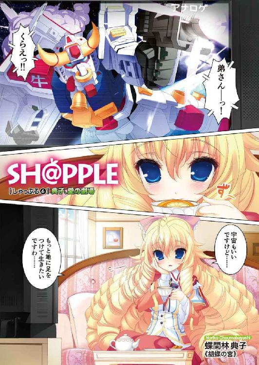
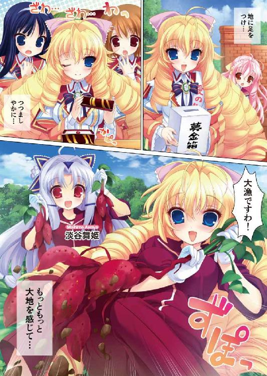
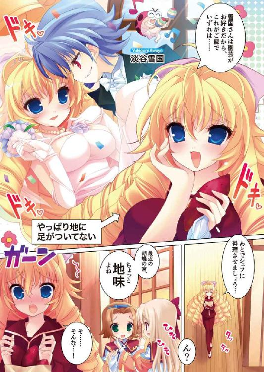
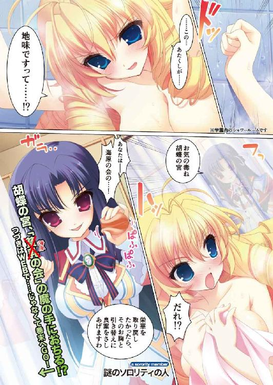
本作品の全部または一部を無断で複製、転載、配信、送信したり、ホームページ上に転載することを禁止します。また、本作品の内容を無断で改変、改ざん等を行うことも禁止します。
本作品購入時にご承諾いただいた規約により、有償・無償にかかわらず本作品を第三者に譲渡することはできません。
本作品を示すサムネイルなどのイメージ画像は、再ダウンロード時に予告なく変更される場合があります。
本作品は縦書きでレイアウトされています。
また、ご覧になるリーディングシステムにより、表示の差が認められることがあります。
口絵・本文イラスト よう太
ＣＯＮＴＥＮＴＳ
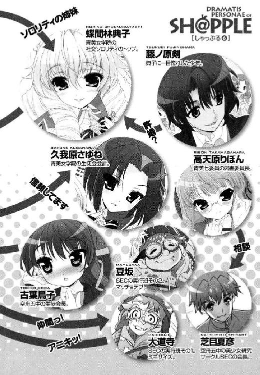
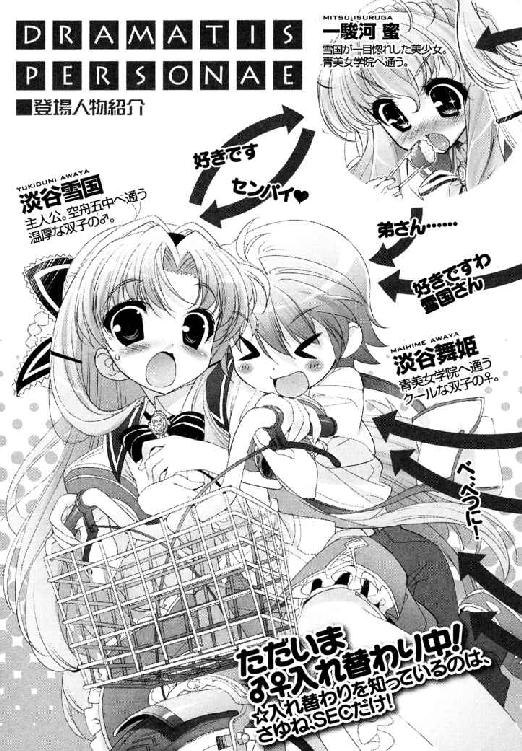
第１章 祭のあとに
告白いたします。あたくし懺悔いたします。
あたくしの名前は蝶間林典子。生まれは四月で、進級と同時に十五歳になりました。
この時の誕生パーティーは非常に盛大なもので、祖父・泰三の呼びかけで集まったお客様は、実に千人を超したそうです。きっとこの大げさに過ぎる年中行事は、祖父が存命なかぎり続くのでしょう。
通っている女学校のソロリティでは、もう少し内輪のお祝いをいたしました。
これも楽しい思い出の一つです。学院内のカフェテリアを借り切って、立食のパーティーをしたのです。最後はあたくしが気に入る後輩が、頰を赤くして贈り物をしてくれました。歌と、全部で十五本の薔薇の花です。添えられたカードには、『いついかなる時も、美しく気高い特別なお姉様へ』とありました。可愛い妹です。
あたくしはいつでも『特別』だったのです。
家では『典子様』。学舎では『お姉様』に『胡蝶の宮』。
まわりはあたくしを特別な人間として扱い、あたくしも特別扱いされる自分を愛しておりました。──ええ、ここでしらじらしい噓を申し上げる気はございません。時に疎ましいと思いはしても、祭り上げられるにふさわしい研鑽や努力さえ怠らなければ、一段高いところから見る世界はとても美しかったのです。褒められ賞賛されることこそがすべてと言っていいほどに。
望み、望まれ。
いつしかあたくしにとって、特別であること、高いところでひときわ輝く存在であることは、揺るがすことのできない芯のようなものになっていたのです。
問題はここからです。
あたくしは恋をしております。
いまあたくしの中にある、この恋心はどうなのでしょう？
あたくしが想う方に振り向いてもらうこともできず、ひとり叶わぬ恋に振り回されるこの姿は、本当にあたくしらしいのでしょうか。
ですから、教えてください。どなたかどうか。
あたくしは、蝶間林典子は、これから先、どう歩いていけばいいのでしょう──。
「──お祖父様！」
典子が病室のドアを開けると、目に飛び込んだのは生々しい点滴の管だった。
蝶間林泰三──岩が落ちてきても死なないと思っていた祖父──が、ベッドから起き上がることもできず、点滴のチューブにつながれている。
いやよお祖父様！
思わず声を上げそうになるが、落ち着いてとたしなめられる。分家筋の叔母がいた。ベッドサイドのスツールに、厳しい顔つきで腰掛けている。
「お静かにね、典子さん。ついさっき処置が終わってお休みになったところなのよ」
「ああお祖父様──本当に大丈夫なのですか？」
「典子さん！」
はしたないと言われることは覚悟の上だった。典子は制服のまま、泰三の枕元にすがりついた。知りたいのは祖父の無事、それだけなのだ。
「......典子、か？」
「ええ、そうですお祖父様。典子です。気づいていただけましたか？」
「心配はいらない。少し疲れがたまっただけだ......」
「そんなお祖父様──」
泰三は目を閉じたまま、大儀そうに息を吐く。
「......わしもそろそろ、倒れた後のことを考えておくべきなのだろうな......」
「お祖父様、やめてくださいそんな」
「典子の婚約についてもな、わしなりに考えてみたぞ」
「は？」
典子は、自分の涙が一瞬で引っ込むのを感じた。
いま、彼はなんと言った？
「婚、約......？ お祖父様......それは、どういう......」
「うむ......言うべきかどうか迷っておったのだが......お前のことを好いている少年がいてな。家柄も性格も悪くない。お前は自分で男をつかまえたいと言っておったが、必ずしもそれが幸せというわけでもなかろう。しばらくは許婚としてつきあってみればいい」
「どういうことですのそれは！」
祖父は答えるかわりにむせはじめた。
「お祖父様、お祖父様おきてください」
「典子さん。お静かに。ここは病室で」
「お祖父様！ お祖父様ったら！ 今さら婚約なんてわかりません！」
「典子さん！」
見かねた叔母がナースコールを押したらしい。最後は医師とナースとの三人がかりで止められた。祖父は腕の点滴を増やされ、典子は特別室を追い出された。
「お帰り下さい」
「そこを通しなさい！ お祖父様にお話があります！」
「面会謝絶です。許可を出すまで患者との面会はできません」
「あたくしを誰だと思って!?」
「患者の孫です！」
悔しいが正論だ。はらわたは煮えくりかえってなくなりそうだが。
典子は色が変わるほどに唇を嚙む。ここで婚約だなんて──少なくとも六月の時点では、典子と一緒に庭を散歩しながら、こちらの好きにすればいいと言ってくれていたはずである。どこで話が変わってしまったのだろう。
「......あたくしは、蝶間林典子ですのよ......」
「そう。誰にも代えられない薔薇の花だ」
典子は、背後の声に振り返った。
病院最上階の特別室は、その法外な料金に見合うよう、廊下やエレベーターホールも広く特別な造りをしている。
今も典子の目に映っているのは、すっきりと洗練された、医療施設というより高級ホテルを思わせる空間の、塵ひとつない通路と照明の連なりだ。病室からはみ出た医療器具が、混雑した通路を塞ぐこともない。
そんな廊下の中に一つ、しっくりとなじむ背の高い影があった。
彼はジャケットの裾を長く伸ばした昼用の礼服に、白手袋まではめていた。襟元にはやわらかな布を留めたアスコットタイ。まるで霧と馬車の国から抜け出してきたようなクラシカルな服装が、少年の雰囲気にはよく合っていた。
威風堂々。遠い異国の貴人のように。
「あなたがお祖父様を──？」
「ひさしぶりだ、典子さん。夏に会って以来だ」
じわじわと、記憶が蘇ってきた。ああ、そうだ。確かにこの少年には会ったことがあるのだ。初対面ではなく、会話をしたこともある。
正装の少年が、典子を見つめて笑う。誰が好感を持ってもおかしくない、明るく堂々とした笑顔だ。
たとえて言うならそれは、念入りに仕掛けをほどこした釣り竿の先に、ようやく魚がかかった時の快心の笑みだろうか。
魚は、自分。
ああ教えてください。どなたか、どうか──。
＊＊＊
二学期。
淡谷雪国は、ふたたび女装して青美女学院にやって来ていた。
「──はいはい、どいてどいてどいて──危ないよ──！」
しきりに大声を上げながら、放課後の廊下を進んでいく。いわゆる一つのそこのけそこのけお馬が通る。そこのけそこのけ会長様が通る。なにせ右の肩に小振りの脚立、左の腕に模造紙の束を抱えていて、自分では前がよく見えないのだ。
周りにいる通行人の方が、雪国の大荷物に気づいてよけてくれる。
「わ、若光の君！」
「ごめんね、急いでるんだ！」
「いいえそんな！ 今日もご公務、がんばってください！」
「ありがとねー」
サイドステップも軽く、階段を下りていく。
「淡谷会長さま！」
おっと危ない。
雪国は、模造紙を落とさないようにしながら急ブレーキ。
そこには青美七委員の一つ、図書委員会の委員長殿がいて、廊下の途中で会釈をしてくるのである。
彼女は長い髪を三つ編みにし、ふっくらとした丸顔に眼鏡をかけていた。図書委員会という単語に負けない、文学少女風の女の子だ。名前を高天原りぼんさんといった。
「元気？」
「おかげさまで、委員以下無事に過ごしておりますわあ」
今でこそこうして、穏やかで柔和な語り口がそのまま似合うりぼんだが、一時の不安定ぶりときたらすさまじかったのだ。それはもう、中等科図書館の運営にも支障が出るレベルで、わけを聞いてみれば恋煩いと出た。
雪国も生徒会長として、役に立たないなりに改善のアドバイスをしたりしたのである。
「例の件なのですが──あの、やっぱり会長様のおっしゃる通りにしてみようと思うんです」
「そう？ 良かった」
「昨日メールを出してみました。書いたら少しすっきりしました」
一人で占いに走ったり、悩んで思い詰めるよりは、信頼できる人に手助けしてもらった方がいいのではと、《魔法使いの卵》のサイトを紹介してみたのである。
不安はあるが、相手が舞姫とＳＥＣなら、たぶん間違いはない。
「じゃあ、僕、行くからね」
「お忙しいようですねえ。ご公務、がんばってください」
「ありがとねー」
りぼんの声援に笑顔で応えながらも、心は次の会議の時間を気にしていた。時間がないのは本当だった。
（──ええっと、この募集ポスター貼ったら、会議に出て、それから書類をまとめて教務課に──ああああ忙しいな！）
生徒会長淡谷『若光の君』の仕事は、二学期になってもそれなりにあった。むしろ休みに入る前より増えているかもしれない。
なにしろ通常の業務に加えて、夏休みの間に行われた校外活動の報告、次代の生徒会メンバーを募るための選挙の準備、そしてめでたく選挙が執り行われた後の、慰労と引き継ぎをかねたダンスパーティーまで計画しなければならないという。
ダンスパーティー。校内舞踏会ですってよ奥さん。
これを聞かされた時はおどろいたし、たたみかけられる忙しさに爆発しそうになった。でもその仕事量に救われる部分もあった。
冬服に替わったばかりのブラウスの下では、まだ夏の痛みがうずいている。
こうしてせわしなく動き回っていれば、少なくとも忘れられるのだ。思い出さずにすむ。人力リバーフェスタの騒動のあと、河川敷の片隅で、一駿河蜜の腕をつかんだこと。
──いま、好きな人いる？
男として真剣に訊いたあげく、泣き出しそうな顔で拒絶されたことも。
全部、みんな、忘れられ──。
「ああああああああああああああああああああああああああああああああああ」
無理だった。
なにかあれば思い出してしまうのだ。
ばか。ばか。僕のばか。雪国は階段の踊り場で発作を起こし、奇声を上げて立ち止まった。ここがニュータウンの自宅であれば、そのまま激しく回転しながら布団に飛び込んで、呪いと懺悔の言葉を交えながらごめんなさい時間を戻してくださいを百回繰り返しているところだろう。
（おちつけー、おちつけ僕......）
だが、ここは家でなく学校だった。舞姫として、青美女学院に来ているのだ。
一駿河蜜にふられたかもしれないことは、姉の舞姫にすら言えずにいた。どうしてもダメだったのだ。空舟五中に戻ることを望んでいた舞姫に、いらぬ心配をかけたくなかったし、雪国の中でも整理がついていないのだ。口に出してしまったら『本当』になってしまうような気がした。
思いこみの強さもあきらめの悪さも、悪い方向に働けば泥沼だ。きっと雪国は今、レンコンも立派に育ちそうな泥沼に、どっぷり臑までつかっているのだろう。
足下にまとめておいた模造紙のポスターが、ばらけて転がっていくのに動けない。階段から落ちていくのに動けない。泥沼だから。無理だから。
「──これ、舞姫さんのかしら？」
「ああ、ありがとうございます......」
はい、と軽やかな声に、雪国は重い目を開けた。
そこには巻き毛の美人が立っていた。
華やかな顔立ちのまま、わざわざ雪国にポスターの先を向けて、不思議そうにこちらを眺めている──ローズロワイヤルのトップ。
（胡蝶の宮だ）
そして彼女の隣には、あああああああああああああ。
「──舞姫さん？」
あああああああああああああああああああああああああああああああああああ。
あああああああああああああああああああああああああああああああああああ。
あああああああああああああああああああああああああああああああああああ。
あああああああああああああああああああああああああああああああああああ。
「舞姫さん？ 舞姫さん？」
「どうかされました？ 先輩」
一駿河蜜さんじゃないですかああああああああああああああああ。
ふわふわとやわらかなウェービイヘアに、きょとんと大きな琥珀色の瞳。
この可愛らしさにノックダウンされて走り続けて、あげくどうなったかと思えばいやいや駄目だダメだ淡谷雪国、今だけは考えるな。
「..........................................すいません。ちょっと......立ちくらみがして......」
「まあ、大丈夫ですの？」
「働きすぎじゃないですか先輩」
二人そろって心配してくれるから、雪国は少し泣きたくなった。
優しさ。それは時に甘く。時にせつなく。
けっきょくそのまま、二人にポスター貼りを手伝ってもらうことになった。
「──こんな肉体労働、下の者たちに命じればよろしいじゃございませんの」
「いや、これでも全員フル稼働で働いているんで......」
「それで貧血を起こしていたら話になりませんわ。少しは組織の上に立つ者の自覚をお持ちなさいな」
「すいません」
胡蝶の宮は、ぷりぷり怒りながら、丸まったポスターを逆に巻いてのばしている。
しかし本当に貧血になったわけでもないし、女の子を働かせて自分は椅子にふんぞり返っているというのは、やはり落ち着かないから無理なのである。
言い訳することもできないが、これはこれですごい光景なのだろうなと思った。
なにせ校門の掲示板に向かって、ローズロワイヤルのトップが脚立に乗っている。その上でブラウス一枚の薄着になり、豊かな胸をむにむにゆさゆささせつつポスターの端を押さえつけているのだ。しかも彼女の足下では、妹の歌姫が脚立を押さえて画鋲を手渡している。目にも美しい姉妹コンビネーション。さらに貼っているのは、『創ろう明日の生徒会』なんてキャッチコピーの入った募集ポスターである。
立候補者募集のポスター貼りを、ソロリティの人間に手伝ってもらうなんて、青美の歴史の中でもどえらい事態かもしれない。
ただただありがたく、そして少し居心地が悪い。今は。
「立候補者、集まりそうですか？」
蜜の言葉に、雪国は自然と苦笑する。
「うん──今年は執行部の方に目立った候補がいないみたいだから、集まってもらわないと困るんだけどね」
「ならちゃんと貼らないといけませんね」
真剣な顔でポスターの曲がり具合を確かめているからおかしかった。
「大丈夫だよ。こんなに一駿河さんたちが手伝ってくれてるんだから──」
「礼にはおよびませんわ、舞姫さん。こちらもお願いがございますから」
胡蝶の宮が、背伸びをいったん休止する。脚立から地面へ降りるのにあわせて、薄い布地を押し上げていたやわらかい双丘が、またふにゅんと揺れておさまるのが目にまぶしい。手には画鋲を一つつまんだまま。
傍目からは、相変わらずポスター貼り作業を続けているように見えるだろう。そんな微妙な距離感のままで。
「──雪国さんは、お元気？」
「は？」
「あたくし、今回ばかりは失敗するわけにはまいりませんの。迅速かつ先走りは禁物。そのためには、身内の舞姫さんの協力が不可欠と思いまして」
目だけは射るように真剣な胡蝶の宮。
「あの、なぜそこでぼ......じゃない、淡谷雪国の話に......？」
「決まっているではございませんの。雪国さんを早急に口説き落とす手伝いをしてほしいのですわ」
「はぎゃぶ」
返事のつもりもないのに声が出た。
「画鋲は自分の指に刺すものではなくてよ......？」
「そうですね！ そうですね！」
ただ少しおどろいて、自分の手元がお留守になってしまっただけだ。
「な、なんでそんなことに？ 口説くっていきなりそんな」
「それは──発端の話から聞いていただくよりないのですけど......」
胡蝶の宮は、わずかに声を落とした。
そもそものはじまりは夏休みだったという。
「──あたくしの祖父は、毎年お盆の季節になりますと、親しい友人・知人を別荘に集めて語らう習慣がございますの。その内輪の集まりに今年も参加させられたのですが......」
「あ、もしかして......あれですか？ 合宿の肝試しの時に来たヘリコプター......？」
「あら。よくご存じですわね。ええ、そうですわ。せっかく雪国さんと一緒に凛子詣をするはずでしたのに。お祖父様が無理矢理お呼び立てなさるんですもの」
顔に浮かぶのは、苦々しい色。
胡蝶の宮は知らないと思っているが、あの合宿の時は、雪国もニセ舞姫ではなくリアル雪国でいたので立ち会っているのである。
空舟五中とローズロワイヤルの夏合宿。その合宿の途中、自社のヘリコプターでむりやり帰宅させられた形の彼女は、そのまま別荘で泰三の客人に挨拶をし、愛想をふりまき、『蝶間林家の長女』にふさわしい振る舞いをしてまた学院へ戻ったのだそうだ。だが──誤算が一つあった。
そんな彼女のことを、今回にかぎって見初めてしまった人間がいたというのだ。
「名前は、藤ノ原剣。イギリスのパブリックスクールに留学している又従兄弟ですわ」
「海外ですか」
「お母様が印度の方なの。いつもは寮か向こうの避暑地にいるはずですのに、今年にかぎって帰国していたらしくて」
胡蝶の宮にとっては、遠い親戚筋にあたるという。その藤ノ原少年は、別荘で親しくしてくれた『典子さん』に（胡蝶の宮にとっては、いつもの挨拶にすぎなかったそうだが）、すっかり惚れてしまったのだそうだ。
「一目惚れ、ってやつですよね......？」
「勘違いなさらないでくださいね、舞姫さん。あたくし何が許せないって、あたくし自身に愛を告白する前に、お祖父様や他の親戚への根回しを優先したのですよ、その藤ノ原剣という輩は。わざわざ海の向こうに戻ったあげく、こそこそこそこそ工作員のような真似を！」
胡蝶の宮は、露骨に怒気をにじませた。
「お姉様、嫌だと言ってるのに聞いてくださらないみたいなんです。先輩」
「気づけばすっかり外堀を埋められておりましたわ。新しい許婚ですって......許しがたいですわ......」
相手は親戚筋を味方につけ、祖父が倒れたのも味方につけ、満を持して『婚約者』のポストにすべりこんだ。おかげで胡蝶の宮が少し騒いだぐらいでは、婚約の解消もままならないらしい。
唯一、胡蝶の宮の気持ちを汲んでくれそうな祖父の泰三氏も、入院中とあって長話もできない。八方ふさがりというわけだ。
身動きのとれない状況にいることは、その説明でなんとなくわかった。
「それじゃあその人は？ 今はイギリスに？」
「いいえ日本ですわ。藤ノ原の本家で法要があるなどと申しておりましたけど、けっきょくお祖父様に取り入った人間ですのよ。本当に狡猾な男！」
なるほど。信じ切れないようだ。
「──もちろん、あたくしだってただ手をこまねいているつもりはございませんのよ。ええもう、固辞の説得力を増すためにも、今のあたくしにはれっきとした交際中の殿方がいると再三申し上げて──」
「それで僕......じゃない、弟を引き合いに出した......？」
「今さら取り下げられませんわ。協力していただけない？」
雪国は、言葉につまってしまった。
内面の葛藤は、顔にも出てしまっていたらしい。胡蝶の宮は、少し悲しげに眉を下げた。
「そうですわよね......無理があるとは思っておりますの」
「そんな胡蝶の宮......」
ものすごく名誉なことだとは思うのだ。
「雪国さんがお好きなのは芝目さんですし......」
「...............................................................胡蝶の宮」
しみじみとせつなくなってしまった。
見た目も性格も最高。つきあえるなら、きっと最高の栄誉。なのに、雪国が胡蝶の宮という人のことを、いまいちつかみかねてしまうのは、この盛大な勘違いっぷりがあるからかもしれない。
これさえなければ、本当にこれさえなければどんなに──。
「......まあね。そもそも釣り合うとも思えないんだけどね......」
「あたくしだって、好き合う二人を無理に引き裂きたいとは思っておりませんのよ」
「いや、胡蝶の宮......正直その線だけはないような気がするんですが......」
「そうですよ、お姉様！ 大丈夫ですよ自信を持ってください」
「蜜......」
蜜が、胡蝶の宮の手を握る。琥珀色の大きな瞳は真剣だ。
「そう...そうね。わかってよ、蜜。あなたが言う通り。もう少しだけ方法を考えてみましょうね」
「負けちゃダメですよ。蜜、なんでもお手伝いします」
その光景は、客観的に見ると美しい光景だったのだと思う。励まし支え合う思いやりに満ちて。けれど、その時雪国が感じたのは、ちくりと指の先を針で刺されたような痛みだった。
少なくとも、雪国の気持ちだけは伝わっていると思っていたのだ。
だってあの夏の終わりの河川敷で。好きな人はいるかと問うた自分の声を覚えている。きっと声は震えていた。こちらの気持ちは彼女に伝わってしまっていた。だから拒絶されてしまったのだと。そう思っていたのに。
でも、だったら。
ここで胡蝶の宮の応援をして、『弟さん』と『お姉様』を引き合わせようとしている、蜜はいったいなんだろう。
あれ？
────────────あれれれ？
＊＊＊
同じく、二学期。
淡谷舞姫は、男装して空舟五中にやってきていた。
「──はいはい、どいてどいてどいて──危ないよ──！」
しきりに声を上げながら、放課後の廊下を進んでいく。いわゆる一つのそこのけそこのけお馬が通る。そこのけそこのけモテキングが通る。なにせ右肩に鞄とサブバッグ、左手に女の子からのプレゼントの山を抱えていて、自分では前がよく見えないのだ。
周りにいる通行人の方が、舞姫の大荷物に気づいてよけてくれる。
「あ、淡谷君！」
「ごめんね、急いでるんだ！」
「ううんそんな！ 良かったらあたしもクッキー作ったから食べて！」
「無理ー！」
サイドステップも軽く、階段を下りていく。
「淡谷！」
おっと危ない。
舞姫は、プレゼントを抱えながらも急ブレーキ。
そこには空舟五中の生徒会顧問がいて、むくつけき中年教師像そのままに、ジャージにサンダルで仁王立ちしていたのである。
──ああ、またなのおっさん。
苦虫をかみつぶしてしまう。
「お、お元気ですか？」
「まあ悪くはないな」
今でこそこうして生徒に対してへりくだる姿勢をいっさい見せない顧問だが、一時の不安定ぶりときたらすさまじかったのだ。それはもう、通常の授業にも支障が出るレベルで、わけを訊いてみたら娘さんに嫌われそうだときた。
舞姫も年頃の娘の一人として、役に立たないなりに改善のアドバイスをしたりしたのである。
「例の件だが──やはり淡谷の忠告通りにしてみようかと思ってな」
「それがいいと思います。無断で携帯の中身を見たのは致命的でしたよ」
「言い訳はしない。黙って土下座。これだな」
「うざくならない程度に」
一人で生徒に当たり散らしたり、悩んで毛髪を薄くするよりは、潔く謝った方が後腐れがないと思ったのだ。正直に言うと、娘の反抗期について長々と語られるのがうっとうしかったというのもある。
二度も三度も使える手ではないが、繰り返さなければ大丈夫だろう。
「じゃあ、ボク、行きますから」
「忙しいようだな。まあ待て。実はうちの次女と三女も最近気むずかしくてな。どうもブログのアドレスを無理に探り当てたのが気に入らんらしく──」
「すいませんＳＥＣは基本お嬢さんの味方なので」
「お嬢さんの親は味方じゃないのか！ 内申やらんぞ！」
顧問の怒声に笑顔で応えながらも心は時計を気にしていた。時間がないのは本当だった。
（忙しい、忙しい）
舞姫は今日も走る。襟足も涼しいショートカットに、冬服に替わったばかりの学生服で、目指す先は旧校舎だった。
「ごめん、遅れた！」
「ようやっと来たか、兄貴」
「遅いっすよ」
「こっち。空いてる」
空き教室の片隅に、柔道場から貰ってきた畳を敷いて作った即席のお座敷。その座敷のちゃぶ台を囲むように、少年たちが三人座っている。
空舟エンジョイ委員会。またの名を《魔法使いの卵》の管理人たち。
ここ空舟市内の美少女たちを、つかず離れず犯罪にならない距離感で見守ろうというお題目をかかげる彼らと、舞姫はひょんなことから仲良くなった。
人力リバーフェスタが終わったあと、腹心の久我原さゆねに、頭を下げてまで戻ってきたのがこの場所だった。舞姫なりのわがままを押し通してしまった以上、せめてそれに見合った成果を上げないと、舞姫はさゆねに合わせる顔がないのである。
燃えているのは、そのせいだ。
「遅れてごめん。これ差し入れ」
「また女子からか」
「殺意湧くっすねー」
「いいじゃん。早く打ち合わせしよ」
持ち込んだ大量のお菓子（大半が女子生徒からのもらい物である。モテキングゆえ）を座敷の上に置くと、舞姫も座敷に座り込む。
「で、サイトに相談が来てるんだって？ どれ？」
「まあ焦るな。今回の相談はこれだ。青美女学院の高天原りぼん嬢！」
芝目が、ちゃぶ台に載せてあったノートパソコンを、わざわざ舞姫たちの方に見せてくれる。
おお、と残りのメンバーから声が上がった。
中等科の七委員の一つ、図書委員会の委員長は、現在恋に悩んでいるらしい。
こちらと入れ替わりに青美に行っている弟の雪国が、相談するならＳＥＣにしろとアドバイスをしたらしいが、本当にメールを出してくれたようだ。
題名 魔法使いの卵様
拝啓 仲秋の候、ますますご清祥のこととお慶び申し上げます。魔法使いの卵の皆様におかれましては、数多くの女生徒の悩みを解決なさっていらっしゃるのではないでしょうか。
さて、わたくしがこうして乱文をしたためておりますのは、お察しの通り思い悩むことがあるからです。わたくし一人の力では、もはや解決の糸口が見えません。
恋をしてしまったのです。住所も名前も存じ上げない男の方を。
淡谷会長がおっしゃるには、魔法使いの卵の皆様は、隠れて陰ながら願いを叶えてくださるようですが、叶うならば一度お会いして話を聞いていただけないでしょうか。私事ではございますが、機械で文字を打つのは非常に不得手で、画面以外の場所でお話ができるとなれば安心できると思うのです。
寒さに向かう折から、ご自愛を願います。敬具。
拝啓、敬具で締めくくられた文章は、メールというより書簡と呼びたくなる丁寧さで、舞姫たちに会って話を聞いてほしいと訴えている。
「......はー。また絵に描いたようなお嬢系っすね......」
そのあたりの所感については、少々訂正をしたい気持ちもあったが、とりあえず置いておこう。
「じゃあ会長さ。下調べはすんでるの？」
「うむ。この間も話したかもしれんが、ようは一目惚れってことらしい。通学の途中に一度会って、それっきりの男だから困っていると」
「あーあー、よくあるパターンよくあるパターン。そいつが学生なら制服から割り出せるっすね。私服でも特徴があればなんとかなるっすよ」
生ぬるそうに大道寺が手を叩いた。
「え、じゃあ会わない気？」
「んなこと言ってないっすよ。そもそも顔出ししないのだってオレらのパターンなんすから。会長が決めればいいんじゃないすか？ 行くか普段の方法ですますか」
「ねえ、なんとかしてあげてよ。一応、ユキグニの紹介なんだしさ」
舞姫は、横で腕組みする芝目の顔をのぞきこんだ。
そこにあるのは、眉間に皺を寄せ、唇を曲げ、目も閉じているのに片目だけは薄目を開けてこちらを見ているＳＥＣ会長だ。
「......燃えているな、兄貴は」
「おう。ごうごうだよ」
特に顔には出ていないかもしれないが、やる気だけはある。
「──わかった。なら会って話を聞いてみるのだ」
そうこなくちゃと思った。
「はーあ。会長も兄貴も元気っすねー」
返事のメールを書き始めた芝目の背中に、大道寺の呆れ気味の声がかかる。
「......もはや俺に残された道は、女子に報いる労働の道だけだからな」
「え？」
聞き返したのは、舞姫だけではなかった。
「なに。独り言だ。気にするな」
あてこすりがきかないと悟ったらしいＳＥＣ会長が、ため息だけついてパソコンのエンターキーを押した。
打ち合わせが終わると、舞姫は一人早めに部室を出た。
そのまま芝目たちと遊ぶプランも魅力的だったが、早く家に帰らないと『青空侍子育て無頼編』の再放送がはじまってしまう。また例によって予約を忘れてしまったのだ。
「──あれ、古葉さん？」
舞姫は、思わず走る速度をゆるめた。
こちらと目が合ったとたん、その古葉鳥子嬢も眉をつり上げ、舞姫に近づいてくる。
顔は相変わらずこわばって、全身で『あたし怒ってるから』に見えてしまうのはどうだろうかとも思うが。
「や。こんにちは」
「......口の端にチョコ付いてるけど」
おう。先制攻撃の指摘に、舞姫は口許をぬぐった。
「......調理実習は、そろそろ一年と二年に回る頃？」
「うん。げろ甘だったよ。チョコケーキとチョコバナナ」
古葉鳥子は、眉間に峡谷を作りながらため息をついた。
「ほんっとに相変わらずよね、淡谷って」
「普段のボクってのがよくわかんないけど、通常業務だよ？」
「まあいいけど。変に玉砕引きずられるよりましっぽいし......」
どういうことだ？
「だってそうでしょ？ あの時あんなに凹んでたのに、こんなに早くチャラ男が復活するなんて誰も思わな......っ、じゃない、そういうことが言いたいんじゃなくて！ そうじゃなくて！」
ばしんばしんと、見えないハリセンを振り回してエアハリセン状態だ。
「呼び出されたのよ、あんたのせいで妙な男に！」
鳥子は勢いよく、昇降口の先を指さした。
つり上がったままの端整な眉。攻撃的なまなざし。いつも通りのきつめの彼女だが、しかしまさか、本当に心の底から怒っていたのだろうか。
とりあえずそれは今から、五分ほど前の話だという。
＊＊＊
来期の五中生徒会長は、会計の佐藤で決まるんじゃないですかという話を、鳥子は生徒会の顧問に話して帰るところだった。
もともと推薦狙いの奇特な人間だけで構成される生徒会だ。対立候補など望むべくもなく、繰り上がりの信任投票であらかたのポストが決まってしまう。少し人力リバーフェスタで変わったことをしたところで、現実はこんなものなのだろう。
その頃になれば、念願だった鳥子の推薦も決まっているだろうし、問題はどこにもない。悲しい点があるとするなら、書きまくろうと思っていた小説がスランプ気味で、遊びに行きたい相手もつかまらないことぐらいだろうか。
ああ馬鹿馬鹿しい。
鳥子はくさくさしながら下駄箱の扉を開けたのだ。
「──ねえ古葉さん古葉さん古葉さん！」
「は？」
「早く早く早く、呼ばれてるよ古葉っちのこと！」
いきなり昇降口のドアが開け放たれ、黄色い声のクラスメイトが飛び込んできた。
「......あ、あたし？」
「そうそうそうそう。すっごいかっこいいの！ 校門！ 高級車！ あたし呼びとめられて」
「会長呼んでほしいって」
「むっちゃイケメン！ ジャニ真っ青！」
「もー古葉っちうらやましー！ 会長ってお得ー！」
「あたしも生徒会入れば良かった！」
誰か鎮静剤持ってきて。じゃないと話が理解できないと思ったが、さすがに口にはできない。
鳥子はつとめて冷静にうなずくと、「ありがとう。たぶん生徒会の連絡とかだと思う」と礼を言った。心当たりなどカケラもなかったが、この興奮状態の前で個人的な関係を少しでも匂わせれば、それこそ嫉妬の火炎放射を浴びかねない。女子の仁義は切りどころが難しいのだ。
なにか一学期の終わりに、これと似たようなシチュエーションを、どこかで見たような気がしたが、考えるまでもなくあのバカのことのような気がしてやめた。
通用門の前は、記憶の通りに黒山の人だかりだった。だがそれは、男子の学ランではなく紺ブレザーの女子の群だ。
「あ、来た。古葉さん！」
「こっちこっち！ 待ってたんだから」
「ち、ちょっと！」
勝手にその群の中に引き込まれ、もみくちゃにされながら押し出された先には、見慣れない光景が待ち受けていた。
（だれ？）
ほつれてしまった髪を、自分の耳にかける。それはもう無意識だった。目の前にいたのは、少年が二人だった。
彼らが五中の生徒ではないというのは、すぐにわかった。だってこんな人近くにいない。絶対いない。二人そろってイギリス王室の王子様のような、黒のモーニングで決めていて、鳥子のつむじからつま先までを凝視しているのである。
ただのコスプレにしては、布地も仕立ても上等だった。予算三万で劇一回分の衣装を作ったこともある身としては、『カタギの仕業じゃないぜ』と言わざるを得ない。
なにより、どちらもとても美しい顔立ちをしていた。
「おいツルギ。どういうことだよ。なんか女が出てきたぞ」
少年の片割れが、不服そうにつぶやいている。
こちらは線の細い美少年タイプで、古い詩集の表紙も飾れそうな風貌をしているけれど。
それよりもう一人の方が。もう一人の方が絶品で──。
「ここじゃ、女も生徒会長になれるのか？」
「そういうことを言うものじゃないよ、トーマ。女性だって大臣にも首相にもなるじゃないか」
「会長で指名すれば早いって言ったのはツルギだろうが」
ついに問題の彼が、こちらと目を合わせたのだ。
「──ああ。騒がせてごめん。ちょっと人違いだったみたいだ」
「は、はい！ 人違いですか！」
鳥子は、教師を相手にするように身を硬くしてしまった。
まるで全体に薄く金粉をまいたような極上の笑みだ。やや浅黒い顔立ちに、彫りの深い造作が合わさって、完璧なエキゾチックの美貌である。
ああもう人違い？ なにそれ食べられるんですか？
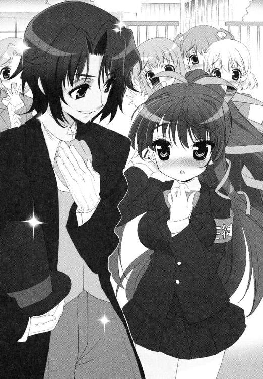
「あ、あの、あたし──」
「今日はもう帰らせてもらうよ。君も帰る？ なんなら家まで送っていこうか。僕らで」
家？
きらきらしい少年の背後には、ぴかぴかの外車が停まっている。たぶん香港のペニンシュラホテルの送迎に使っているのと同じ車種だ。ロールスロイスとか言ったっけ。
あれに乗って帰るの？ この人つれて？ うちのマンションまで？ お母さんが失神するわよ。
「おいツルギ！ 早くしろ！ とっとと帰るぞ！」
少年は、車に乗り込もうとしている連れを見やって苦笑した。
「ごめん。本当に時間がないみたいだ。また次の機会に、必ずね」
「ツルギ！」
そのまま軽く会釈をすると、モーニングの裾をひるがえし、少年はロールスロイスの後部座席にさっそうと乗り込んでいく。まるで黒馬にまたがろうとする騎士様のように。
「とんだ空振りだったじゃないかよ──」
「そうみたいだな。ようするに淡谷雪国は──」
「会長職にもついてない！ まったく。あの人もなに考えてんだか......」
なんだろう。夢でも見ているのだろうか。
しかし、振り返ればまだ野次馬がいた。
あふれてくる。押し寄せてくる。現実の爪痕。期待と羨望と嫉妬と好奇心が入り混じった女子パワー。ねえ古葉さん鳥子さん古葉っち会長、いったいあのひとたちと何を話したの、どういう関係なの、お願いお願いお願いみんな話して説明して、話せないってんならわかってんだろうなおんどりゃああああああああああああ。
──だめだ。やりすごせない！
悟った鳥子は、素早く自分の両頰をおさえると、つま先を内側に向け、眉をハの字にしながら笑った。
「ふ、ふられちゃったあ。えへっ 」
」
一世一代の痛い演技は、とりあえず同情だけは引けた気がした。
＊＊＊
「......あんたのせいで、あたしはしたくもない大噓芝居をぶっこいて、よくわかんないイケメンのオトコに告ってふられた可哀想な女になったのよ......」
当時の記憶を思い出したのか、鳥子は顔を限界まで赤くし、脂汗をだらだら流しながら告白した。
舞姫は、なにもそこまで装わなくてもとも思ったが、その状況でとれる策は少なかったこともわかる気がした。
「でも、かっこよかったんだよね？」
「そーね。それはまったく否定しないわ......って、なんてこと言わせるのよ！」
鳥子はあせって顔を上げる。
「ねえ、古葉さんさ。その人たちって、どこの学校の人だかわからないの？」
「......な、なによ。ほんとにわからないの？」
まったくだ。
鳥子はあわてているようだが、そもそもナチュラルに女の子にもてる舞姫のモテ属性のおかげで、いらぬ恨みを買ってしまったことは何度もあるのだ。今回もそのラインなのかもしれないが、身元がわからないというのは居心地が悪い。
生徒会長を指名すれば、雪国に会えるだろうなんて、お門違いにもほどがあるだろうに。どういう話の伝わり方をしたのだろう。
「......あたしは......あれが、そのあたりにある制服だとは思えないんだけど。たぶんあれ、外国のパブリックスクールとかじゃなきゃ着ない格好だろうし。ただの私服だとしたらもっと不自然だし......まあ、関係ないぐらい、すっごい似合ってはいたけど......」
また思い出して現場を再現してしまったのか、鳥子はぶんぶんと首を振って煩悩を追い払う。
「あとはそう......ツルギって。一緒にいたやつにツルギって呼ばれてた！」
ツルギ。
鶴木。蔓城。武器の方のツルギとか？ 名前だろうか。
「──いい淡谷。べつに惚れたってわけじゃないからね。そこんとこ勘違いしないでよね。ねえ聞いてる!?」
聞き慣れない呼び名を、舞姫はとりあえず覚えておくことにした。五分後には忘れてしまいそうな気もしたけれど。なんとなく。
そして、帰り際。古葉鳥子があらたまってつぶやいた。
「──そうだ。あんたの家ってさ、青美女学院の名簿って置いてある？」
「え？ 青美の？ 名簿」
「そう。住所とかが載ってるやつ。お姉さんがいるなら、あるわよね」
舞姫は押し黙る。
一応、あるにはあるが、あれを何に使うのか。
「ほら。あの、ちょっと合宿で話して連絡とりたい子がいるの。メルアドもなにも聞いてなかったから、困ってるっていうか」
「誰？ 調べてきてあげようか？」
「ううん。できたら直接届けに行きたいし。あんたに迷惑はかけないから。そこまでひどい真似はできないし」
ひどい？
「......ねえ。お願い」
「......うん。いいよ。わかった」
そもそも迷惑をかけたのは、こちらの方が先である。
さて。部屋の本棚かタンスの上か押し入れか──たぶん、家のどこかに存在だけはしているだろう名簿のことを考える。大掃除だ。
＊＊＊
一方、蜜と典子。
二人は若光の君と別れたあと、同じ学院内のカフェテリアに移った。
「なにかスイーツでも召し上がる？」
「......い、いえ。お茶だけでけっこうです」
「そう？ 相変わらず小食な子ね。ダイエットなんて蜜には必要なくてよ？」
蜜は曖昧にうなずくしかない。食べないのではない。食べられないのだということを、うまく説明できる気はしなかった。
やってきたウエイトレスに、典子が優雅な口調で注文を言う。蜜の希望のアップルティーと、典子がコーヒーのブラックだった。
珍しいなと思った。いつもは紅茶党の彼女がコーヒーとは。
「......コーヒー、お好きなんですか？」
「ちょっとね」
テーブルの上で優雅に指を組み、典子が目を細める。
「今は苦いものを飲みたい気分なのよ」
その微笑は、同じように甘さがない。
きっと彼女の頭の中では、目の前の困難をどう乗り越えるのかでいっぱいなのだろう。
新しくできた婚約者を、どう退けるか。
節度を保っているかぎり、男女の交際には寛容なタイプだと思っていた。
一大企業である蝶間林グループの跡取りとして、物心つく頃には婿取りの必要があると自覚していた彼女である。たしか蜜が知っているだけでも、ケンブリッジ卒の『秀幸さん』と、一年近くおつきあいをしていたはずだ。
しかし、それを変えてしまったのが『弟さん』──淡谷雪国の存在なのだろう。
そこまであの少年のことが好きだったのかと、蜜はこうして悩みを相談されるまで気づかなかった。妹なのに。尊敬していたのに。
今日はもう典子の気持ちにならって、砂糖もなにも入れないことにした。同じように、苦い気分になりたかった。
「......大丈夫ですよ。先輩も、ちゃんと話せば協力してくれて......」
「気にしなくていいわ、蜜。舞姫さんだって、雪国さんの気持ちがどこにあるかぐらいご存じなんでしょうし」
「お姉様......」
「わかっていたから大丈夫よ」
典子は、一つだけ誤解をしていると蜜は思う。
それは、彼女の切なる思い人が、いま誰を好きかとか、そういう問題ではなく。
もっとずっと、根本的なこと──。
「お姉様。お姉様は、とっても素晴らしい人だと思います」
「まあ。いきなりなあに？ 蜜ったら」
「違うんです。弟さんは、きっと、お姉様が好きです」
こんなに綺麗で素敵な人を、好きにならないなんて間違っている。
「今は違ってても。でも、きっとそうなります」
──神様。蜜を偽善者だとおっしゃいますか？
そのまま家に帰ると、家政婦の清野が、蜜のことを出迎えてくれた。『お嬢様』が学校でどんなことをしてきたのか、あれこれ聞きたがる彼女を置いて、蜜は離れの自室へ向かった。
「お夕飯になったら降りてくるから、放っておいて」
「ですが......」
「お願いったら」
どこか名残惜しそうな気配を感じながら、清野は廊下を引き上げていく。
自室のドアを開ければ、もう蜜が着るべき部屋着のワンピースは、クロゼットからコート掛けへと移動しているのだ。これが過保護でなくてなんなのだろう。
蜜は制服のブローチとリボンを外し、上着やブラウスを脱ぎはじめた。
そのまま裸足にピンク色のシュミーズ一枚になったところで、ふととんでもないものを見つけてしまった。
（や、やだ。清野ったら）
机の引き出しにしまっておいた写真立てが、わざわざ飾り棚の一角に置いてあるのである。
ここの飾り棚には、蜜が海外にいた頃の土産物が中心に並んでいる。父親のダイゴと南米を回っていた頃の奇抜な民芸品に混じって、当然のように飾られた陶器の薔薇の写真立ては、浮くというレベルを超えて強烈な主張だった。似合う写真立てが見つかるまでしまっておいたのに、清野のばかと蜜はつぶやく。
「......ほんとに、困った話......」
蜜は写真立てをつまみ上げながら、中の写真を見つめ、ため息を吐くのだ。
ここに写っているのは、夏合宿のメンバーだ。空舟五中と、青美女学院のローズロワイヤルと。合宿の途中に、誰ともなく盛り上がって集合写真を撮ったのだ。
写真を見つめたまま、ベッドに腰掛け、あらためて天井を見上げると、無性に泣きたくなってしまった。
「だって。わかりませんよ。先輩......」
夏の終わりの河川敷から、蜜の気持ちはどこにも出られなくなっているのかもしれない。
──違うよ。僕が好きなのは──。
──いま、好きな人、いる？
いた。好きな人はちゃんといた。いたのだ。目の前の少年によく似た、生徒会の若光の君だった。
「一駿河蜜は、淡谷舞姫先輩のことが大好きです......」
今なら間に合う。大丈夫。
祈って、誓って、凍らせてしまおう。考えるのはもうやめよう。
「蝶間林典子お姉様の恋を、心から応援します......」
どさくさの中で、願掛けのお守りもなくしてしまったことも、なにかの天罰のような気がした。せっかく先輩と遊園地に行った記念の品だったのに、あそこで一瞬迷ったから取り上げられてしまったのだ。
取り返しのつかないことになる前に、あの日に関する感情は、全部、みんな、凍らせてしまえ──。
「お嬢様ー」
「ひゃああ！」
思わず悲鳴をあげてしまった。
「なにをばたばたしてらっしゃるんですか......」
「誰のせいだと思っているの！」
ベッドから滑り落ち、おなか丸みせの姿勢で蜜は訴える。
「ですから、お電話だと申し上げているじゃございませんか」
「お電話？」
蝶間林様からですよの言葉に、ようやく目が覚めた気がした。
「わ、わかったわ。すぐ行く──」
「お嬢様、なんて格好でお出になる気ですか！」
「きゃあ」
シュミーズ一枚のその格好で廊下へ飛び出しそうになり、赤面しながらチュニックワンピースを頭からかぶる。もうむちゃくちゃだ。
「そんな格好が許されるのもですね、今のうちでございますからね？ もっとご成長なさいましたら──」
「そうね、どうせ蜜はお子様体型だわ！」
あらためて廊下に出て、母屋の電話を取りに行った。
「はい！ お電話かわりました！」
『──蜜？』
やわらかい声。
お姉様の声だ。典子の声だ。
自分はほっとしているのだろうか。胸がつまってうまく話せないうちに、典子が続きを切りだしてくる。
『ごめんなさいね。別れたばかりでまた電話なんて』
「いいえ！ とんでもありません」
『かなり困ったことになってしまったのよ』
蜜は、自然と受話器を握る手に力をこめてしまう。
「こ、困ったことですか？ もしかして婚約者さんが......」
『そうなのよ。会わせろって。雪国さんに』
そんなあと悲鳴をあげたくなる。
「......で、ででで、でも、どうしましょう。なんとか弟さんにお願いするとか......」
『どうもこうもなくてよ。こうなってしまった以上、あたくしたちに取れる道は一つだけ』
蜜は、胡蝶の宮の言葉に耳を傾けた。
最後まで聞いてみた。
『もうこれしかないと思うのよ』
本当にそうだろうか。
むしろかなり無謀。相当無理がある策のような気がしたが──他に案がないのも確かだった。
「わかりました！ が、がんばりましょう、お姉様！」
困難を後押しするのも妹の務め。蜜は大きくうなずいた。
＊＊＊
そして翌日。
「......ええと、なに？ 話したいことがあるって──」
ニセ舞姫こと淡谷雪国は、お昼休みの校舎裏に呼び出されていた。
相手は胡蝶の宮と一駿河蜜である。二日連続でお会いできるとは珍しい。
「あのですね、先輩。実は──」
「いいえ、蜜。ここはあたくしが直接」
「でもお姉様！」
「気持ちだけ受け取っておくわ。大丈夫。任せてちょうだい」
なんでもいいが、人の前で譲り合いをしないでほしい。仲がよろしいのは結構だけれど。
今日は一応、生徒会の女の子たちとお弁当を食べる予定が入っているのである。
「そういうわけで、舞姫さん。折り入ってお話がございますの」
「はあ......うかがいますけど......」
雪国は、ぼんやりとうなずいた。
「舞姫さん。一生のお願いですわ。どうかあたくしのために、雪国さんに変装して！」
はあああああ？
第２章 女装、男装、さらに助走？
もはや自分が誰だかわからなくなってまいりました。
目の前にいるソロリティのトップは、校舎裏の木漏れ日の中でおっしゃるのです。
「......ですから、雪国さんを恋人として紹介するには、乗り越えるべき課題が多すぎますでしょう？ 無理にお誘いして、殿方と別れられない不始末な女を印象づけるのも嫌ですし。かといって他の殿方を代役に立てるのも、あたくしの気持ちが許せませんの。そうなると、事情を知ってらして、なおかつ雪国さんにそっくりな双子のあなたに男装していただくのが一番なのではないかと思いましたの」
思いましたの、なんて言われても。
例の藤ノ原剣が、胡蝶の宮の必死の抵抗を見抜いたかのように、『交際している男に会わせろ』と言ってきたのだそうだ。
そしてここで募集しているのは、その一日だけの『交際相手』になってもらう男役、である。
「それを、僕に......？」
「ええ。お願いできないかしら」
「......ひ、日取りは？」
「今週の土曜日ですわ」
近い。
「ねえ、先輩。蜜からもお願いします。お姉様を助けてあげてくれませんか？」
「い、いや、でもさ......」
「この方法なら、弟さんに無理な噓をつかせなくても済むんです。一日だけでいいですから」
必死に頼みこんでくる蜜を見ても、事態は急を要するようだ。
「もし断るっていうなら、蜜にも考えが......」
「か、考え？」
どきりとした。妙に興味を引かれてしまって、問い返す。いったい何を？
「──と、特に思いつきませんけど！ でもなんかやります！」
「何を！」
「先輩の机にジャムを入れるとか！」
「小学生のいじめ!?」
「三つぐらい！」
「しかも溜め込むの？」
「ピーナツバターも！ たくさん混ぜればきっときっときっと」
「落ち着いて蜜。それはソロリティの赤恥になりますわ」
胡蝶の宮になだめられ、蜜は涙目でふてくされる。
「..................だって。他にどうしたら......」
まったく姉想いの一駿河さんである。
雪国は、自然と苦笑するはめになった。
「──いいよ。わかったよ、一駿河さん。僕でいいなら協力するよ」
「ほっ」
蜜が、胡蝶の宮が、おどろいたように雪国を見る。
「ほんとですか!?」
「よろしくて舞姫さん」
「うん......ここでごねるのもなんか悪いし」
雪国としては、胡蝶の宮たちを困らせたいわけではないのである。
「やっぱり、蜜が直々にお願いしますと舞姫さんは素直になりますわね。ありがとう蜜！」
「へっ、変なこと言わないでくださいお姉様！」
そして胡蝶の宮は、あらためて雪国に向き直るのである。
「よろしくお願いいたしますわ、淡谷舞姫さん」
学院一の薔薇の花の呼び声も高いソロリティトップ。
間近に見れば落ち着かなくなるその美貌に、一日つきあうことになるわけか。
胸は高鳴り、そして心境は複雑だ。
胡蝶の宮と一日デート。本当は男なのに女装して、なのにここからまた男装して、この場合自分はいったい誰になってしまうのだろうか。
「そりゃあ、ユキグニのかっこした女の子じゃないの？」
「それって舞ちゃんじゃん」
家に帰ると、姉の舞姫にそう言われた。
二階の一室の子供部屋。夕飯を食べれば自由時間になる。雪国は、長髪のカツラを取って素の自分に戻っていた。
対する舞姫の方は、かわりにカツラをかぶり直して元の女の子モードにリセットしているはずだ。ただしなにやら探し物をしているらしく、カーテンで仕切ったベッドの向こう側では、ごそごそと物音がうるさい。
おかげで机で勉強していても、なかなか集中できなかった。
「......そうなると、土曜日は舞ちゃんが行った方がいいのかなあ......うーん」
「やだよ。ボクやることあるし」
「やること？」
「会長たちと高天原委員長に会うんだ」
ごそごそごそごそ。続いてどどーんと物が落ちる音。
こんなにうるさくして、一階に祖母がいなければいいのだけれど。
「相談、乗るんだ？ 高天原さんの？」
「うん。三時に中央図書館のカフェテリアで待ち合わせだよ」
こっちは午前中の予定だからかぶらないよと、食い下がることもできたがやめた。
高天原りぼんを、舞姫たちに紹介したのは雪国である。彼女の恋の行方も気になるし、やめてくれとはとても言えない。
「そっか......じゃあしょうがないか......」
「ユキグニが引き受けたんだから、ユキグニがなんとかすればいい──うわ」
今度こそ、高いところからなにかが転げ落ちる激しい音がした。床の地響きが、回転椅子に座る雪国の方にまで伝わってくる。
「......ところでさ、さっきから舞ちゃんはドタドタなにをしてるわけ？」
「探し物してる。青美の名簿......うー、いてて......お尻打った......」
「名簿？ 住所かなにか調べたいの？」
「そう。古葉さんがね。持ってきてって頼まれてるから。なんか連絡取りたい子がいるんだって」
「誰？」
「さあ。言いたくないみたい」
それはまた怪しいなと思ったが、気むずかしい鳥子らしい反応とも思えた。
古葉鳥子。
河原で別れた生徒会長。夕焼け。落ちてくるポニーテールの長い髪。そして涙。
こうして断片的に思い浮かぶ情景は、決して気持ちのいいものではないはずなのに、そこにたたずんでいた鳥子の面影だけは、ひどく甘いものとして雪国の中に残っている。
まるでふさがりきらない傷を保護する、たった一枚きりの絆創膏のように。
痛いけれど、それがあるからなんとか立っていられるような。
元気にしていればいいなと、それだけは思う。どこにいても、どんな格好をしていても。
「......そこで思い出し笑いする？ ユキグニ」
「うわっ」
ふと気づけば、仕切ったベッドのカーテンの間から、舞姫の顔が突き出ていた。
打ち付けてしまったらしい小ぶりの尻を、スパッツの上からおさえつつ、涙目の顔つきは不満げだ。
いつからそこにいた？
「にやにやにやにや、きもちわるいな......」
「にっ、にやにやなんてしてないよ！」
「うそつき」
頭が引っ込む。カーテンが閉まる。
だから笑ってなんていないでしょうに。
それとも自分が意識していないだけで、勝手に泣いたり笑って見えてしまうことがあるのだろうか？
週末になると、雪国はニセ舞姫バージョンになって家を出た。
蜜や胡蝶の宮のご希望は『男装した舞姫』だが、その男装を手伝うため、蜜が早めに会いたいと言ってきたのだ。
普通に五中の制服を着ればすむはずなのに、なんだかややこしい話である。
（それでもね、なんだかんだ言って楽しみにしちゃう自分がね、ちょっとむなしいね......）
ははんはんはん。ふられん坊のブルースだ。
そうしてふられん坊が待ち合わせる場所は、空舟駅の駅ビルである。まだ開店間もないビルの入り口に立って、走ってくる蜜を見かけた時、やっぱり心は嬉しかった。ちくしょう、これが普通のデートなら最高なのにと、心の中で笑って泣きたくなるぐらい。
「お、おはようございます！ 遅れてすみません！」
「おはよう、一駿河さん」
「お姉様は、準備が終わったところで合流されるそうです」
なるほどね。
うなずきながら、綺麗に編み込まれた髪からのぞく耳の形や、膝上で揺れるスカートのミニ具合に目は行ってしまう。白くて、とてもやわらかそうで。
「そのリボンってさ、新品？」
「そんなところは見なくてけっこうです！ 今日の蜜は黒子でアシスタントですから。先輩をがっつりかっこよくしなければなりません」
「はは、は......」
どうコメントして良いのやら。
「............新品ですよ」
「へ？」
蜜はそれ以上、答えない。振り返らずに、ビルのエレベーターに進んでいく。戦いはすでにはじまっているようだった。
ふられん坊一行は、メンズ向けのフロアにやってきた。
甘い雰囲気の彼女には似つかわしくない、ラフなトーンのショップが多く立ち並ぶ一帯を見回し、蜜があらためて口を開く。
「......さて。本日のお召し物を探しましょうか。先輩、なにかご希望はありますか？」
「いや、できればあんまり高くないやつ......」
「お任せってことですね」
ずんずん歩いていってしまう。
ここのビル自体、社会人や大学生を相手にしているのか、価格の設定が少し高めで、雪国はあまり入ったことがないのである。そこを当然のように歩いていかれると、すごいなとため息をつくしかない。
彼女は迷うことなくショップの一角に立ち寄ると、店員が寄ってくるのも気にせず服を引き抜いた。
落ち着いたダークブラウンのジャケットである。
一応、下に着るものを選べば、フォーマルにもカジュアルにも使えそうな感じはするが、ちょっと僕が着るには大人っぽすぎないかなあと思っていたら、軽く雪国の胸元にあてただけで、すぐにまた引っ込めてしまう。
「いいの？」
「ここじゃないですね。お隣のお店に行きましょう」
また脇目もふらずに歩いていく。
隣のショップは、もう少しラフな感じのお店のようだ。すかさずスチール製の棚に畳んで置かれた濃いめのブルーの綿シャツを引っ張り出す。
「次です」
「もう？」
けっこう格好いいと思ったのだが、蜜はまた隣に向かうのだ。
とにかく蜜の選択は即断即決だった。店の傾向も様々で、ジャンルも問わず入って行くかわりに、合わないと悟るやすぐに出て行ってしまう。
雪国には、いいと判断する時間すらない感じだ。
「なんか違うんですよ。これじゃないです」
「そうなの？」
「お隣行きましょう」
有名スポーツメーカーのジップアップパーカーは、その一言で棚へと押し戻された。
フォーマル。カジュアル。ストリートにビジュアル系。エスニックにパンクスタイル。蜜はありとあらゆる服の間を分け入って行く。
「......ねえねえ一駿河さん」
「次です」
「一駿河さん」
「次」
「もしかして」
「次！」
次。次。次次次次次。
最後は蜜、かなりテンパッた顔のまま、
「どうですか？ これ。弟さんって感じしますけど！」
「断じて違うと思うよ！」
鋲付きの黒の革ジャンに、ぴちぴちの革のショートパンツ。ハーレーダビッドソンに乗ればハードゲイ御用達の国へ一直線という感じだ。
とうとうはじめに来たエレベーター前のベンチで小休止となった。
「ちょっとは落ち着いた？」
「............はい......」
蜜はベンチに座りながら、小さくうなずく。
まるで満員電車の人いきれに当てられたような顔つきだった。いったいいつからこうなっていたのだろう。
「............男の人の服って、難しいですね。色も地味だし形もシンプルっていうか飾りがなくて......見てるとだんだん違いがなくなってきて、頭がぽーっと......」
「わかんないなら最初からそう言おうよ......」
「リボンとかレースとか付いてればわかりやすいのに」
「そんなメンズファッションは僕が見たくないや......」
今年の流行は愛されピンク！ シンプル小物との甘辛ミックスで、明日のプレゼンも大成功！ ──嫌だそんなサラリーマン。
「お姉様との約束がありますから。休んだらもう一度探しに行きましょうね......」
「いやいいよ。僕、五中の制服持ってきてるから」
「でも」
「時間ないでしょう？」
そのまま一周まわったあげくに今度はハワイの腰ミノとかを勧められたらかなわなかった（たしかこの駅ビルには、フラダンスのカルチャースクールがある！ 怖い！）。
あくまで冷静に現在時刻のことを言うと、蜜は納得してくれたようだった。
「じゃ、ちょっとトイレで着替えてくるね──」
「そこ、紳士用のお手洗いですよ！」
あうち。こっちもやってしまった。
「......びっくりしましたよ。もう。普通に入ろうとなさるんですもの」
「やー、油断したっていうか......」
「蜜より抜けててどうするんですか」
自分で言うのもむなしい話だ一駿河さん。
そのまま二人で階をまたいで、婦人用のフロアのトイレで着替えをすることになった。
だが正直、女子用のトイレの個室にこもっている今の方が、よっぽど恥ずかしくて大変ではないだろうか。
「............あひゃん」
「先輩!? 先輩どうしました!?」
ちょっと裸の背中に冷たいドアが触れてしまったのだが、ひょっとして聞き耳たててませんか一駿河さん？
個室の中は意外に狭い。すかさずドアをノックしてくる蜜に、冷や汗ばかりが出た。とにかく一秒でも早く出ないとと、脱いで畳んだ舞姫用のワンピースは、フタをした便座の上に置いたスポーツバッグの中にしまっていった。
そのまま五中のワイシャツと学ランを着て、お待たせしましたとドアを開けると。
「わあ......」
雪国は自分の頰が赤らむのを感じる。
カツラを取って、五中の制服に着替えて。蜜にとっては『男装した舞姫』だが、雪国にとっては『素の自分』である。
「へ、変かな」
「髪が......」
「あ、ほら。もとからこれ、カツラだったから」
持っていたスポーツバッグのジッパーを開いて、中にしまったロングのカツラを見せてみせると、納得してくれたようだった。
六月にあったそらご祭の騒動の中で、蜜は雪国と舞姫が、学校入れ替わりをしていたこと自体は知っているのだ。はじめの伝わり方がおかしかったのか、肝心の部分を勘違いしたままの彼女だが、こうしてカツラや短髪を見せてもおどろいたりはしないのである。
すぐ近くに立たれて、うなじや襟元のあたりをつらつらとながめられると、ふられん坊としてはこう、いろいろと気恥ずかしいのには変わりないけれど。
「髪、もう伸ばされないんですね。ショートのまま？」
「いろいろ楽だからね......」
その時、後ろで「ヒッ」と息を飲む音が聞こえた。
大きな買い物袋を両手に提げたマダムが、学ラン姿の雪国を見て凍り付いているではないか。
「あ、あの──」
「──い、嫌だあたすったら失礼いたすますたわあああああ」
ああ、待っておばちゃん！ 誤解だ待って、ここは女性用トイレであってるから！
横で蜜が本気で笑っているから、雪国は頭を抱えたくなった。
「笑ってる場合じゃないよ一駿河さん。通報されちゃうかもしれないよ？」
「だって......あの人、ほんとに先輩のこと男の人だと思ってる......おかしい......」
おかしくはない。限りなく真実に近いのだということを、説明できる状況ではなかった。
「とにかく、これ以上誰か来る前に移動しないと。いろいろまずいよ」
「あは。そうですね......でもちょっと待ってください」
蜜が、目尻に浮かんだ涙をぬぐい、肩にかけていたがま口型のポシェットを開けた。
「じっとしててくださいね──」
しゅっ、と空気が抜ける音と、ひやりとした感触が首のあたりに届く。
「ね。仕上げ。いい香りでしょう？」
香水をかけてくれたようだ
そこにいたのは、化粧品らしい小瓶を掲げて得意げな蜜である。
雪国が想像していたほど、甘い香りではなかった。いつも胡蝶の宮などが身に付けている、薔薇の花びらを振りまいたような甘い匂いこそが香水だと思っていた。綺麗で優しくて女の子らしくて。けれど、いま雪国の周りにただよう香りは、すっきりと目が覚めるようなグリーンの匂いだ。
こんな香水もあるのか。おどろいた。
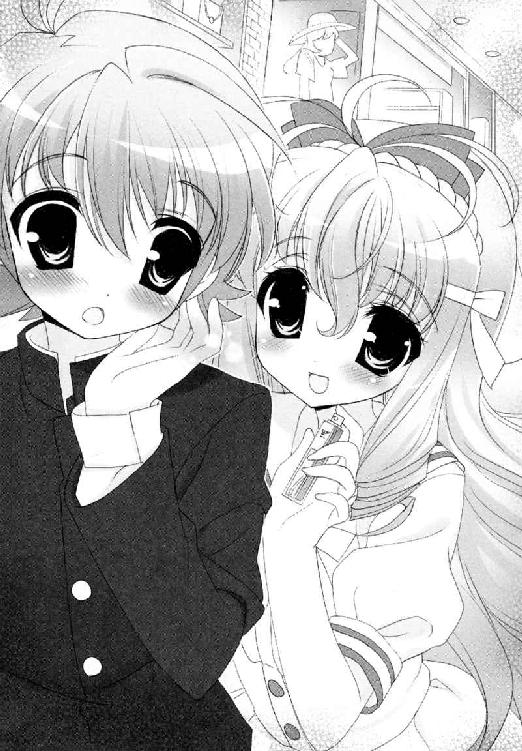
「でも......たしかにいい匂いだけど、今日は男になる予定じゃ......」
「先輩。だめ。鈍すぎます。これ、れっきとした男性用の香水ですよ？」
男性用？ それを蜜が持っているのか？
心配は、あっというまにその問題に移ってしまった。
「......やだ。先輩、変な誤解してますか？ これ、お父様のです。お家にあったのを持ってきたんです」
いやだと言いながら、どうしてそんなに顔がほころんでいるのだろう。
可愛いのに、一度はその手もちゃんと取ったのに、でももう届かない──。
「......今、好きな人......」
「え？」
振り返る蜜に、雪国はただ微苦笑を浮かべて首を振る。『男装した舞姫』では聞くことができない疑問だった。素の自分ではもっと怖くて聞けない疑問だった。
──ねえ、一駿河さん。本当に僕の想いは、伝わっていなかったんですか？
「その香水にはですね、ちょっとした伝説があるんですよ」
胡蝶の宮との待ち合わせは、駅向こうにある空舟運動公園だった。
この県立公園、敷地の中に大きな運動場や芝生の広場が整備してあり、池には水鳥が泳ぎ、春には桜も見事とあって、散歩や花見のために訪れる人も多い。はじめはてっきり高級ホテルのレストランでも指定するかと思っていたが、意外と健康的なところに落ち着いたものである。
蜜と男の格好のまま、待ち合わせの池へと歩いていると、彼女はあらためて説明をしてくれた。
香水の効能や、それにまつわる由来などをだ。
「──むかーしむかしにですね──とあるフランスの片田舎に、人食いの狼が出るという噂があったんです。何百年も生きている化け物で、村の娘をさらっては、むりやりお嫁さんにしてしまうんですね。その地を治める伯爵様は、お城の騎士を討伐にやりますが、狼は俊敏で、力も強くて、どれだけ息をひそめて巣穴に近づいても、あっというまに背後を取られて食べられてしまうんです。ぱくって」
「それは困ったねえ」
「しかも怒った狼は、今度生意気な真似をしたら、城に乗り込んでお前の姫君をさらってやるぞって脅してきたんです。伯爵様は大変だと、領民に向かってお触れを出しました。誰でもいい。憎い狼を退治してくれた者に、自慢の姫をくれてやる！ と」
「それもまたむちゃくちゃな......」
「でもですね、そのお姫様にはひそかな恋人がいたんです。お城で一番の下っ端兵士さんです。ぴかぴかの鎧も、伝説の剣も、なにもないけど愛情にあふれた人」
彼は愛するお姫様のため、狼を倒して名をあげることを考えた。お姫様は不安で仕方がなかったが、それでも決意はかたい恋人に向け、特別な香水をプレゼントした。
どうぞ彼をお守りください、敵に見つかりませんようにと。
自分自身が狙われている危険もかえりみず、三日も寝ないで調合した香水である。
「実はその香りはですね、彼が飛び込んでいく狼の森の匂いと、まったく同じだったんです！」
「あ、だからその兵士は」
「そう。ぎりぎりまで狼に気づかれることなく、後ろを取ることができたんですね」
「へええ......」
伝説の剣も鎧もなく、凶悪な狼を打ち倒すことに成功した兵士は、そのまま騎士に取り立てられ、お姫様と末永く幸せに暮らすことができたらしい。
「よかった。いい話だ......」
「さあ。行ってください先輩。ここは魔物が巣くう森の中。あなたが守るべきお姫様は、ともに生きたいと願う姫君は、あそこにいらっしゃいますよ」
雪国の周りにただよう、森と一体化できるようなかすかな芳香は、その伝説をモチーフに作られているのだそうだ。
名前を、『緑の栄光』という。
我ながら、暗示にかかりやすすぎるのだろうか。
東屋のベンチに腰掛ける、長い巻き毛の横顔を見た瞬間、わけもなく心臓が鳴った。
本日のお姫様は、淡い水色からブルーへグラデーションを描く、海のようなアンサンブルドレスを着ていた。
ゆるくドレープを描くシルクのブラウスが、彼女の豊満な胸を無理なく包み込んで、その上で上向きに盛り上げて、腰だけが締まって細い。そのめりはりの曲線だけでもうお腹がいっぱいというか、地味というより『大人っぽい』のだ。
日傘の柄を握りしめたまま、そんなお姫様な胡蝶の宮が、切れ長の瞳をしばたたかせている。
「あの......雪国......さんではないのですわよね」
「違いますよ、お姉様。先輩が弟さんのふりをしてくださってるんですよ」
その答えに、はっきりとした目鼻立ちの瞳が軽くうるんだ。
「まあ。その短い御髪、地毛なんですわよね？ いやだわ、どうしましょう。あたくしてっきりカツラなどでごまかしてくださると......」
「い、いや、気にしないでください。それこそカツラとかでいくらでもごまかせますから！」
そこを気にされてしまうと、少々胸が痛い。
「今日はほんとに、僕のこと、男と思ってくれちゃっていいですから！ 大丈夫です！」
「舞姫さんたら......」
「で、いついらっしゃるんでしたっけ？ 僕が撃退しなきゃいけない狼......じゃなくて婚約者さんって」
ことさら明るくたずねてみた。
「彼ならもう来ているはずですわ。ほら、あちらに」
おお、それは話が早い。
雪国は、胡蝶の宮にうながされるまま、池の対岸に顔を向けた。そこはこちらと同じように、ジョギングコースが整備されていた。池を眺めながら市民ランナーが走っていて、さらに先には、まったく同じ形の東屋もあった。
はてさて。胡蝶の宮が言う婚約者藤ノ原剣は、たぶんあれなのだろう。東屋のベンチに腰掛け、隣にお供らしい少年を引き連れている、若者──。
雪国は、しだいに自分の頰が引きつっていくのを感じた。
話に聞いていた中では、彼は十五で同い年のはずだ。しかし、高三だと言われても充分通る。背も高く肩幅も広く、そのくせ無骨なところがまったくない。
いったいどうしましょうか。
かすかに浅黒い肌を引き立てる、シャープで彫りの深い容貌も、男らしさを主張しながら嫌みがなかった。噂通りにパブリックスクールの制服を着て、ご留学中の南国の王子様を思わせるエキゾチックぶりに、見ほれたらしいママさんランナーが、東屋の前でだけウォーキングに切り替えてしまっている。
「......ど、どうしろっていうか.........」
「やっぱり先輩！ 着替えましょうか。見劣りしてますよむちゃくちゃ！」
「だから何を着ればいいのさ！」
ハードゲイも腰ミノもごめんだ。
テンパりはじめる雪国と蜜だが、
「かまいませんわ、舞姫さん。ここまで似せてくだされば、他に申し上げることはなにもございません。参りましょう」
当の胡蝶の宮が、さっと雪国の手を取ってしまった。
そのまま蜜に日傘を預け、さらに体を密着させるよう、雪国の腕に自分の腕をからめるのだ。
「......い、いいんですか？ 胡蝶の宮。僕なんかじゃ......」
「ここにいるのは『淡谷雪国』。紹介するのになんの不都合がございまして？」
及び腰になっていた自分が恥ずかしくなるぐらい、胡蝶の宮は平然としていた。
頰が、熱い。きっとこれは、弾力のあるやわらかい胸元が、いきなりこちらの二の腕へ押しつけられている状況のせいだけではない。絶対に。
「......あ、ありがとうございます......」
「ご面倒をおかけしますが、しばらく辛抱してくださいましね。熱烈交際中として振る舞わせていただきましてよ」
この人、ちょっとすごいかもしれない。
雪国は、寄り添って歩き出しながら、無性に頭を下げたくなるのだ。
振り返れば、蜜がぽかんとしていた。こちらの見送りをしてくれているのだろうが、胡蝶の宮から預けられた日傘を抱え、ほんの少し、道を見失った迷子のようにも見えた。
そうして渋滞を引き起こすジョギングコースを逆に歩いて、雪国たちは東屋の前にやってきた。
雪国たちの姿を見ると、お供らしい少年の方が、黙って東屋を立ち去っていく。これがまた綺麗な黒髪の美少年だった。エキゾチックに正統派を付けるあたり、はべらせる相手も厳選しているのだろうか、王子様。
「お休みですのに、ご兄弟そろってご歓談ですの？ お邪魔だったかしら」
「典子さん」
胡蝶の宮が話しかけると、藤ノ原剣は破顔して立ち上がった。
いかにもちやほやされそうな造作のくせに、彼は当然のように胡蝶の宮のエスコートをはじめ、東屋の石のベンチにハンカチを敷く。
素でレディーファーストがたたき込まれているあたり、本当に仕込みがいいのだろう。
「良かった。天気が保つかどうか、トーマと心配していたんだよ。日頃の行いがいいってことかな。どうしたの、典子さん。話すなら座った方がいいと思うよ」
けれど、胡蝶の宮は動かなかったのだ。
「......剣さん。あたくし、申し上げたはずですわよね。ピクニックがしたいわけではないと」
「え──」
硬い表情の胡蝶の宮に、剣もまた止まった。
「......本気で？」
「そう申し上げていたはずですわ。何度も」
喜びに満ちあふれていた彼の顔から、潮が引いていくのが手に取るようにわかった。
困惑して、けれども、それを信じたくない表情だ。
「......僕は、いつでも、君の最善になるよう努めてきたつもりだよ」
「そうですわね。あなたはとても優秀な方。ただあたくしの希望がそこになかっただけ」
「だったら......もっと早く言ってくれないかな......」
剣は、かろうじてそれだけを言うと、懐から携帯を取り出した。
「......もしもし、トーマか。そうだよ僕だ。お前が言った通りになったみたいだよ......」
なんだか拍子抜けしてしまう。
用意周到、勇んでやってきたわりには、あっという間に話し合いがすんでしまったようである。
しかし胡蝶の宮もよくわからない。こんなにスマートで見た目も中身もできた感じの人と、今日までうまく別れ話ができなかったというのが不思議でしょうがなかった。
（というか......もったいなく、ないかな）
本当に。
どんな場面であろうと、誰かが好きな人に向き合って、そのままふられてしまう現場に立ち会うというのは、あまり気持ちのいいものではなかった。
特に、こうも格好いい人に失恋されてしまうと、金輪際自分の恋が日の目を見ないような気がしてくるではないか。
「そう。だから。典子さんは外が嫌いみたいだ......ディナーで予約しておいたフレンチ、ランチに変更しておいてくれ......」
そっちかよ。
雪国は、もう少しでつっこみそうになった。
できなかったのは、横で胡蝶の宮がふるえていたからだ。
「大丈夫だよ、典子さん。すぐに車が来る。人が多すぎるのは嫌いだって言ってたよね」
「......剣さん。あたくし今日という今日は、あなたのそのポジティブに過ぎるお人柄でもわかることをしてさしあげようと思っておりますの。こちら、あたくしがおつきあいしている淡谷雪国さんですわ」
「なんだって？」
「お会いしたいとおっしゃっていたでしょう？」
剣が、はじめて雪国を見た。本当にはじめて。落ちてくる前髪をかきあげ、目を見開き、おどろいているようだった。
恋人の腕にとりついていた小動物。まさか本当に人間だったのかとでも言いたげに。
「君が......？」
「は、はじめまして！ ご紹介にあずかりました、淡谷雪国です！」
雪国は、こわばりながらも精一杯胸をはった。
どこまで役にたてるかわからないが、棒立ちしている場合ではなかった。なんのために呼ばれたのか思い出せ。
一方的にからめられるだけだった胡蝶の宮の手も、こちらからあらためて引き寄せる。これぐらいしないと自然なカップルに見えないはずだ。
「......つきあってるって？ 君たちで？」
「いますとも」
「おりますとも」
二人そろってうなずけば、向こうの顔色も変わっていく。
さあ、藤ノ原剣。ちょっと釣り合わないかもしれないが、ここからはじまるラブラブファイヤーにあてられてしまうがいい──！
＊＊＊
一方、一駿河蜜は、茂みの中に分け入っていた。
（......なんだか、ちょっと、歩きにくい、わ）
目立つところを歩くわけにはいかないのだが、公園の植え込みの間を中腰で移動するのは少し辛い。こんなにひどい体勢になるとは思わなかったから、レース付きのスカートをはいてきてしまったし、日傘など荷物は捨てるわけにもいかないし。
それというのも、三人が東屋を離れはじめてしまったのがいけないのだ。
茂みの間からわかる一行は、池まわりのジョギングコースを散策しているようだった。はじめて見た典子の婚約者、藤ノ原剣の格好良さにもおどろいたが、あの褐色の王子様を振り切って、『雪国さん』一筋なのだからすごい。今頃は彼女を応援するため、若光の君が隣で腕を貸しているはずだ。
どうなっているのか知りたいのに、またスカートが枝に引っかかって足止めされてしまうからもう......！
「ひらひらしすぎよ、このスカート！」
「それ以上引っ張ると、破れる。常識もわからないのか？ 青美の女は」
蜜は、はっと顔を上げた。
剣と同じ黒いモーニングを着込んだ少年が、ひどく冷めた顔つきで、植え込みにしゃがむ蜜のことを見下ろしていた。
少年は、大層むかっぱらが立つ人柄だった。
「──ですからっ。蜜は、お姉様のことが心配で──」
「べつに言い訳しなくてもいい。主君の身の振り方を把握しておきたい気持ちはわかるつもりだ」
「主君じゃありません。お姉様です！」
「違いはないだろ」
ぜんぜん違う。
説明したいのに、少年はさっさと公園内を歩き続け、目についた脇道の石段を上っていってしまう。蜜は追いつくだけで必死だ。
彼はもともと天涯孤独な身の上だったそうだが、そこを藤ノ原夫人に養子縁組で引き取られたらしい。剣と同じパブリックスクールに通っていて、いずれは剣の下で働くつもりなのだと言った。
「だから俺は、ツルギのことを身内じゃなくて上司だと思ってる。ツルギが有利にことを運べるよう画策もするし、駄目と思えば止めたりもする」
「よくわかりません」
「だろうな。あんたじゃ」
なんだかむかっ腹がたつ一方なのは気のせいだろうか。
「なにがおっしゃりたいんですか？ 剣さんの家来さん」
「知りたいなら堂々と覗けってことさ」
少年が、ようやく立ち止まる。そこは、公園内を一望できる高台の広場だった。
汗ばみはじめた額を風が吹き抜け、柵の下は上ってきた石段の道と、そして若光の君たちが散策している池、運動場などが広がって見える。
「......の、覗けって言われたって。こんなに遠くじゃ......」
「これ」
双眼鏡を手渡された。
「これもいるか？」
携帯ラジオのような、イヤホン付きの小さな機械だ。
「ツルギの服のポケットに集音器が入れてある。会話ならこれで拾える」
「まっ」
蜜は絶句した。
「内緒でですか？」
「言ったろう？ 主君の身の振り方を把握するのは臣下の務めだ」
なんて人だろう。
蜜はあきれかえりながらも、池の端に目指す三つの人影を見つけ、双眼鏡で拡大してしまったが最後。
──かぶりつきになってしまった。
＊＊＊
ジョギングコースを並んで歩きながら、藤ノ原剣は雪国に向かって質問してくる。
「そういえば淡谷君。君はたしか、公立の中学に通っているんだよね」
「はい、そうです。空舟五中の三年です」
「そうか。自宅から通えるっていうのはいいよね。学費も安いって聞いてるよ」
「あー、義務教育ですから。基本は無料らしいですよ」
「親孝行でいいじゃないか」
どうしよう。誉められてしまった。
「うん。本当に勉強がしたかったら、親の助けなんて借りずにそうやって過ごせばいいんだろうね。日本の教育水準はかなり高いって聞くし、僕も淡谷君のところに転校しようかな」
「いやあ、普通の学校だと思いますよ。普通に勉強して普通に部活して」
「クラブ活動は？」
「まあ、普通です。僕は特に入ってないんですけど。藤ノ原さんは？」
「僕はボートだよ。あとはフェンシング」
「すごいですねえ」
「強制的に入れられただけだよ。大してうまくもない。賞状もメダルもクラブハウスに置いたままだ」
「でも入賞してるならすごいじゃないですか！」
本気で言ったら、剣はまぶしそうに笑った。
「淡谷君。君は、いい奴だね」
「そうですか？」
「そうだよ」
いやあそんな。はっはっは。はっはっは。
あっはっは。
「──剣さん。雪国さんはですね、部活のかわりにＳＥＣというサークルに入っているんですわ！」
胡蝶の宮が、ぎゅむっと腕を組む手に力を入れる。雪国は慌てた。やけに薄くやわらかなシルクの布地越しに、それはもう張りのある二つの膨らみがますます強調されて押しつけられるからあばばばばばばば。
「ＳＥＣ？」
「なんて言うのかしら。本来の名前は。ねえ雪国さん？」
頭の中が痺れてたゆんたゆんのむりんむりんで一杯になりそうだったが、雪国は必死に答えた。
「..................そ、空舟エンジョイ委員会です！」
「へえ。どんなことをしてるんだい」
「ええっと......つかず離れず犯罪にならない距離感で女の子の写真を撮りまくる会というか」
「ち、違いますわ剣さん！ 《魔法使いの卵》を運営してらっしゃるんですわよね！ ね？ 雪国さん」
お願い。力、それ以上入れないで。
谷間が。谷間。きつく。挟まれ。圧着。むりむり。
「運営？ 会社かなにかかな」
「人助けのサークルですわ。ホームページで相談にのってくださるの。《魔法使いの卵》の由来はトップページのネズミさんで」
「三十過ぎても童貞予備軍の略です」
「もう！」
頭に血がのぼりすぎて、おかしなことを言っている自覚はなかったが、胡蝶の宮は癇癪を起こした。
「......どうして。どうしてそうご自分のことを卑下なさるの。雪国さんの馬鹿！」
やっと正気に戻っても、もう遅い。
胡蝶の宮の目には、涙がにじんでいた。
「こ、胡蝶の宮......」
「あたくしが剣さんのものになってもどうでもよろしいのね。だからそんなことが言えるんですわ！」
「待って！」
駆け出す胡蝶の宮を、雪国は必死に追いかけた。
どうしよう。そんなつもりはなかったのだ。傷つけた。
「ごめん。ほんとごめん！」
「放してくださいな！」
池の手前でつかまえようと思っても、ふりほどかれる。気ばかりあせった。失敗した。どうしよう。最低だ。
「自信が、自信がぜんぜんないんだよ。君の隣にいても、釣り合ってるかどうかって。ふさわしいのかどうかって。そればっかり気になって」
「あたくしにはあなただけ！ 何回申し上げたらおわかりになるの」
「胡蝶の宮！」
もみ合ううちに、そのまま二人そろって転んでしまう。
あわてて起き上がろうとするが、途中で腕をつかまれた。胡蝶の宮だった。彼女がそうして引き留めるので、あらためてその姿をかいま見て、雪国は思わず言葉をなくし、時間を忘れた。
「起きあがらないで。このままでいて」
ささやきは麻薬のようだった。
頭が上げられない。綺麗にまとめた彼女の巻き髪が、地面の上でわずかに乱れ、仰向けに倒れた上半身の、薄い腹部と張りを失わない豊かな双丘だけがこちらに迫ってくる──そんな──雰囲気で──。
「............僕は、その......」
膝頭までめくれたフレアスカート。下の白い脚がなまめかしくてなめらかで。どこか拗ねたようにこちらを見上げる瞳。物言いたげな唇。すべてが脆くて、儚くて。
上腕を地面につき、体を支えていながら、目はどこまでも目の前の少女に奪われていた。
逆らえるわけがないだろう？
彼女は、引き留められて動けない雪国の肩に腕を回し、ゆっくりと半身を起こした。そのまま余韻を楽しむかのように、雪国の背中へと片手をすべらせる。森の匂いと、薔薇の匂いが一つになる。
耳元に唇を寄せ、息を吹き込むようにそっと──。
「これだけ盛り上げれば、剣さんも恋人同士だと思ってくださいますわよね」
──え？
あらためて胡蝶の宮を見直せば、彼女は横目で剣を気にしているのである。
見せつけなければならない婚約者のことを。
「──ねえ？ 作戦成功だと思いませんこと？」
悪戯と茶目っ気に満ちた、小悪魔の笑み。
すいません。僕があなたにどきどきしています。
＊＊＊
気づけば蜜は、双眼鏡をおろしてしまっていた。
「......どうした。もういいのか？」
蜜は、小さくうなずいた。
なんだか開けてはいけないパンドラの箱のような気がしてきたのだ。
胸がちくちくしている。
池のほとりでは今も、胡蝶の宮が男装した先輩と一緒にいる。婚約者の藤ノ原剣に見せつけるよう、ケンカをしたりふざけあったり、演技どころか本物の恋人同士のようだ。
転んで起き上がった二人が、剣の方へと戻ってくる。まだ耳に残っていたイヤホンから、音声だけが届けられる。
『──たしかに僕は、この人にふさわしい男じゃないかもしれません。でも、この人を思う気持ちだけは、誰にも負けません』
『雪国さん......』
『わかってください。剣さん！』
そのセリフは、少し芝居がかってぎこちなかったが、身分違いの恋人を守ろうとしている少年の、初々しい必死さが現れていると言えなくもない。
胡蝶の宮だってそう。
腹がたつのは、焼き餅だろうか。でも、ねえ、どちらに？
あそこにいる淡谷先輩──『淡谷舞姫』が、胡蝶の宮と仲良くしているところを見るのが嫌なのだろうか。それとも、彼女が演じている『雪国』が、胡蝶の宮と仲良くしているところを見るのが嫌なのだろうか。
『舞姫』、『雪国』、どちらなの？ 一駿河蜜。
答えようによっては、あなた──。
「見ても、たぶん、しょうがありません」
「そうか？」
「だって、ほら。見なくても、結果はわかりきっているじゃないですか。お姉様は、弟さん──いいえ、淡谷雪国さんが好きなんです。藤ノ原さんが、割って入る余地なんて、どこにもありません。ね？」
精一杯のから笑いを浮かべてみせた。
けれど、お供の少年は、つられて笑ってはくれなかった。
くれないどころか。
「......さてね......そううまく行きゃいいが......」
「どういう意味ですか？」
少年は顎だけで下界を指し示す。
まるでマッチ箱。遠く離れてしまった肉眼の景色を。
「ツルギの奴が、そう簡単に納得するとも思えないしな」
＊＊＊
雪国は、体中のエネルギーを吸い取られたような気分で立っていた。
どうだこの、だ。
全身全霊、あれから体が動くかぎりの英知を集結し、恋人同士を演じさせていただいたのだ。
隣にいる胡蝶の宮と、いちゃつき見せつけ続けること数十分。そのラブでピンクなファイヤーのあとには草一本も生えることなく、思うぞんぶんその魅惑のボディを独占してしまった罪悪感もあるし、なによりもその、心地よかったのだ。隣に一人、守る人がいるという状態自体が。
疑似体験の効能のせいか、胡蝶の宮はやけに綺麗で手元に置きたくなってしまうし（なんだか一回り小さく見えたりするのだ。あのソロリティトップが。弱っているわけでもないのに）、そうなると雪国もがんばって彼氏らしくふるまわねばと思ってしまう。
魔法が解けかけた今でも、自然と手をつなぎたくなったり、側に引き寄せたくなる気持ちは残っていた。
これ、本当になったらこの気持ちがずっと続くのだろうか？
「......ごめんなさい。剣さん。あなたのお気持ちは嬉しいのだけれど──」
雪国の隣に立ったまま、胡蝶の宮が口を開く。
悲しげにひそめられた柳眉も、気品があって美しかった。
「どうして......彼なんだ？」
剣が、かろうじてそれだけを言った。
「それを答えたら、納得していただけるの？」
「そうだ......いやそうじゃない！」
彼は目を閉じる。きつく唇を引き結ぶ。必死にこみあげてくる気持ちをおさえこんでいる。
浅黒い精悍な美貌は、それ以上の醜態を許さない。許せない。
（やっぱり、ちょっとつらいな......）
心情的には雪国と同じなのか、胡蝶の宮ももう一歩、剣へと歩み寄った。
「剣さん──」
「愛してる」
胡蝶の宮の呼吸が、瞬間、止まった。
空白の世界。言った剣はそのまま、苦渋に満ちた表情で首を振る。
「ごめん。今はこれしか言えない。典子さん。また連絡するよ」
なにかを言うために差し出しかけていた右手も、それ以外の全身も、たった一言に打ち抜かれて動けなくなってしまったソロリティトップ。言い返せない。動けない。剣がきびすを返す。背中を向ける。
だめか。まだ動けないか。
行くぞ。彼が行ってしまうぞ──！
「お姉様！」
剣と入れ替わりのように、一駿河蜜が、ジョギングコースを走ってきた。
その後も胡蝶の宮の顔色は、蒼白になったまま、なかなか戻らなかった。
雪国は自動販売機で水を買い、公園の入り口で休む胡蝶の宮の元へ持っていく。
蜜が心配そうに、そんな彼女の額の汗を、ハンカチでふいていった。
「お姉様。大丈夫ですか......？」
「......あたくし、少しお祖父様の病室に行ってまいりますわ。このままでは、まともな神経が......」
「でも、あそこは面会謝絶だって」
「心配なくてよ。敵は看護師長一人。あたくしにかかれば、開かない扉はないはず......」言うやいなや、彼女は椅子代わりにしていた車止めの柵から身を離す。そのままふらふらと幽霊のように歩き出し、車道に向かっていくからおどろいたが、通りがかったタクシーを拾っただけだったようだ。
ドアが閉まる。車が出発する。
後には、蜜と雪国だけが残された。
いつも義理堅い彼女がさよならの挨拶もなしとは、相当ショックだったようだ。
「......お姉様、心配です」
「だね」
愛してると言われたことがショックなのか、それに対して言い返せなかった自分がショックなのか。
しかしさすが英国紳士の王子様だ。自分にあれを言えと言われても無理だ。たぶん。
「......そんなに気になさらなくてもいいのに......」
「やっぱりあれかな。自分で思った以上にぐらーって来ちゃったからとかなのかな......いてっ」
蜜に腕を叩かれた。
「先輩、ひどいです！ お姉様を信じてあげないんですか？」
「あげないって」
「お姉様は弟さんのことが好きなんですよ！」
蜜は腹立たしさがおさまらないらしく、雪国に同意を求めてくるのだ。本当に真っ直ぐ、熱い瞳で。
でも、どうしてうなずける？
うなずいていい？ 自分は弟さんの淡谷雪国なのに。
こうしてこちらの目の前で、『お願いですからイエスと言ってください』とばかりに見上げてくる蜜が、その邪気の無さと必死さが、どうしようもなく、残酷に、見えてしまうから。
「今日、お姉様が先輩と恋人のふりをするとこ、遠くで見てました。全部お芝居でしたけど、お姉様、すごい嬉しそうでした。楽しそうでした。本当なら、弟さんがあそこにいるべきなんですよ。そうでしょう？ 蜜たちは、いっぱいいっぱい応援してあげなきゃいけないのに。先輩ったら──」
「............なかったことにされるのも、けっこう、辛いんだけどな」
「え？」
ぎこちない震え声が、実際に紡ぎ出されてしまえば、取り消すことはもうできなかった。
「ごめん。今日はもう帰る」
「先輩!?」
口をつぐむことでしか、守れないことはあるのかもしれない。
今の自分は舞姫だ。そもそも告白が通じたかどうかなんて、そんなもの、答えが出る前からわかっているようなものだけど。でも少なくとも今は！
ここでこれ以上蜜の希望を受け止め続ければ、待っているのは設定を踏みにじって彼女のことを抱きしめるだけのような気がするのだ。
リバーフェスタの一件のことを問いただして、言ったよねと答えを引き出して、そして完膚無きまでに爆散。胡蝶の宮の婚約者問題も、舞姫の希望も、あとにはなにも残らない。
「ねえ。先輩もしかして──」
走れ。今だけは振り返らずに。
＊＊＊
蝶間林典子を乗せたエレベーターの籠は、やがて病院最上階へと到達した。
ホール内で典子を待ち受けていたのは、そろいの白いナース服と、白いナースキャップを身につけた看護師たちだった。
全員、なにかの儀式のように、横一列に並ぶ看護師たち。こちらが足を踏み入れるのに合わせて、列の中央から、ひときわ年輪を重ねた中年女性が進み出た。
頭のナースキャップに、さんぜんと輝く金バッジがまぶしかった。
「......面会時間は過ぎております」
「急を要するのよ」
「許可できません」
「あなたあたくしを誰だと思って？」
「患者の孫です」
典子は鼻で笑う。
「──そこをおどきなさい」
「許可できません」
「おどきなさい！」
「許可できません！」
典子の巻き毛が、怒りでひときわ大きくふくらむ。迎え撃つ看護師長の体型もひときわ大きくふくらむ。あるいはそれは、場に渦巻く強烈な闘志の磁場が見せた錯覚かもしれない。
少女とかつて少女だった看護師長の、凄絶な戦いがはじまる──かもしれない。
第３章 図書委員長、高天原りぼんの懇願
一方、ニセ雪国こと淡谷舞姫。
彼女は待ち合わせ場所を目指して、自転車で空舟市街地を走っていた。
普通にしていても鼻歌が出てくる陽気だった。適度に晴れ渡った休日の街角は、どこもかしこもいつもより三割増しの人出という雰囲気だ。男装するためにさっぱりと切ったショートカットのうなじに、走り抜けていく風が心地良かった。
国道を一つ挟んで、空舟運動公園の豊富な緑と、野球場の照明が見える。きっとあの中で作戦決行だという弟は、この好天に感謝しているに違いない。
（──中央図書館──中央図書館──あった）
そして舞姫は、目的地をついに見つける。最近改装されたばかりだという、ぴかぴかとした銀色の建物。空舟市立中央図書館。
本日の任務の舞台はここなのだ。
「──さて」
口火を切ったのは芝目夏彦だった。
そこは、中央図書館の一階に併設された喫茶室『おるたんしあ』である。
この喫茶室、名称はいかにも古めかしいが、真新しい建物に合わせて設備は近代的だ。
本日は国道に面したガラス張りの壁の一部を開放し、オープンテラスにしてある。
舞姫たちがめいめい顔をつきあわせて座っているのは、そんな屋外テーブルの端の端だ。舞姫は、さきほどからテーブルの斜め向かいに座っている女性が気になってしょうがない。
なぜならその女性、乱暴に結い上げた長い髪をハードスプレーで固めて、なんだか毛先が刺さりそうな感じなのである。
エナメルめいた黒革のジャケットと黒革のミニスカート。どちらもお見事パンクと言いたくなる金属製の鋲がずらりと取り付けられていて、厚くふっくらとした唇は、ルージュとグロスで赤く光り、同じように化粧の濃そうな両目はサングラスで隠れている。その上で、図書館のバーコード付き文庫本ではなく、書店のカバーがかかったハードカバーの本を読んでいた。
喫茶室にいる人間の大半が、中央図書館を利用している主婦とご老人と、隣の市役所から流れてきたおじさんばかりなので、ものすごく目立つのだ。
「......さて諸君」
「うん。やっぱりかなりレベルたけーよ。マメ。写真だけでも行っとけ行っとけ」
豆坂たちは豆坂たちで、喫茶室のウエイトレスさんに衝撃を受けているようだ。
「諸君」
「デジカメが無理なら写メでもいいから」
「諸君」
そして舞姫も、もう少しでパンクお姉さんがなにを読んでいるのかわかりそうな感じなので、首を傾けてがんばってしまう。
「諸君？」
「うおー。こんなところに隠れた穴場があったとは！」
「諸君！」
とうとう芝目がテーブルを叩いた。
舞姫たちは、ひどく残念な気分で芝目を見返した。
「......もうちょっとだけ待たない？」
「待たない？ ではないぞ。やる気があるのではなかったか？」
「いや、あるんだけどね......」
「ほんと空気を読まねえ会長がね......ほらね......」
俺を加害者にするなと芝目が怒った。
「すぐにな、高天原嬢が来るのだぞ？」
「わかってるっすよ。そんときゃいっぱつばしっと変身して、礼儀正しい魔法使いの卵になるっすよ。ひーほー」
大道寺は笑って言った。
「なんでしたっけ、高天原りぼんちゃんとか言ったっすか？ なーんかおとなしくて可憐なお嬢様ってイメージっすよね。毛虫が怖くて泣いちゃいます！ みたいな。図書委員長らしいし」
「それなんだけどさー、大道寺君......」
「最近はオレらも場数を踏んでるわけだし。ちょっとやそっとのことじゃびびったりなんかしないっすよ。もー矢でも鉄砲でもどんと来やがれってなもんすよね。あっはっは」
はーっはっはっは。
喉の奥が見えそうな勢いで笑っている大道寺。
そのやかましさに耐えかねたのだろうか。読書を続けていたパンクスなお姉さんが、とうとう自分の席から立ち上がった。
「ご、ごめんなさい。うるさかったですか？」
「......目印は、一眼のデジカメ......」
舞姫は、ややびびりながら身構える。
対する答えはやけに小さく、高くか細い声だった。
どうやらテーブルの上に置いてある、豆坂の激写用カメラのことを指しているようだ。
「............これが、あの、なにか？」
「......はっ、はじめまして！ お初にお目にかかります。高天原りぼんと、申しますわあ」
舞姫は固まり、大道寺は絶叫した。
──はじめましてと。言われましても。
鼻先のサングラスを取り、かわりにいつもの眼鏡をしてもらえば、たしかに見覚えはあった。
青美女学院の会議の席でいつも見てきた、青美七委員の一人。図書委員長の高天原りぼんだ。
彼女は空席につくと、読み途中のハードカバーに栞を挟んで、丁寧に丁寧に鞄へしまっていく。
「本......」
「あ、これですか？ あの、『赤毛のアン』です。完訳版はまだ読んだことがなくて」
そう。夢があるね。
左右の指には鋲付きの指輪がはまっているし、鞄は黒いナイロンの蜘蛛柄だったが、栞は学院の方で出しているノベルティグッズだった。どうもなにかがおかしいと思った理由は、これだったのかもしれない。
大道寺は、いまだにアイデンティティの崩壊から立ち上がれないらしく、フリーズしきったまま椅子に座っている。
芝目は、かろうじて正気の側に踏みとどまっているようだ。
「......その格好は、君の趣味かなにか、であるのかね？」
「ええっ。そんな。それはぜんぜん、まったく、ちがいますわあ」
「じゃ、なんで」
「だって......」
か細い声で反論したかと思うと、りぼんは『赤毛のアン』を両手で抱きしめうつむいてしまう。
「............一人で街の喫茶店に入るのなんて、はじめてでしたから。それらしい格好をしなきゃって思って......」
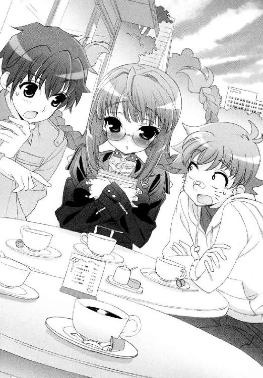
違うよあなた。全力で。
ここはロンドンのライブハウスではない。空舟市の公共図書館に入っている平和な喫茶室のはずである。
「......ここなら、高天原嬢も慣れているのではないかと思ったのだが......」
「本当に。入ってお飲み物を注文をするの、とってもとっても怖かったです......みなさんわたくしのこと、じろじろ見たり睨んだりして......早めにお会いできて良かったです。ぐす」
「ああ、だろうね......」
舞姫も思わずうなってしまう。
ある意味では、大道寺がイメージする『箱入りお嬢様』通りの性格なのだが、そこに『思いこみが激しい』が加わることでこの有様である。
恋煩いで図書館の運営が崩壊しかけたというのは、なにもおおげさな話ではないのである。
「......そ、それでだ。高天原嬢は、捜してほしい少年がいるのであるな？」
「はい。そうなんですう......」
彼女の依頼は、一目惚れをしてしまった少年の捜索願いなのだ。彼女はそのまま静かに語りはじめる。
「......わたくしが、その御方を見かけたのは、家の近くの側道で......」
舞姫は、横で頰杖をつきながら、ふとテラスの先を見た。
目の前を通っている国道は、先の方で工事をしているのか、微妙に渋滞気味だ。大きなダンプカー二台に前後を挟まれる形で、ぴかぴかの高級車が信号待ちをしていた。あまり見ない光景で、舞姫は少し得した気分になった。
いったいどんなお人が乗っているのだろう。両目ともに二・〇の視力を駆使して凝視すれば、これがまた絵にもできそうな王子様なのである。端整な顔立ちは、長めの前髪でわずかに隠れ、陰も憂いも満点だ。
じっと観察していると、偶然だろうか。向こうもこちらを見返してきた。視力の良さは同レベルということだろうか。彼は幽霊でも見たように、自分の目をこすりはじめている。
けれど、舞姫が舞姫であることには変わりないと気づいた途端。
（あれ？）
どうして美形の王子様は怒り、こちらに向かって歩いてきているのだろう。わざわざガードレールを乗り越え、図書館の敷地に入り込み、舞姫たちのいるテーブルに向かって一直線。
「夏休みですが、委員会のお当番で登校をする必要があったのです......」
「こんなところでなにをしている。淡谷雪国！」
おやや？
＊＊＊
「お嬢様!?」
帰るなり、一駿河蜜は自室へ駆け込んだ。
「入ってこないで。そっとしておいて！」
「具合でもお悪いんですか？」
違う。違う違う違う。
やがて、辛抱強く待ち続けた清野のため息とスリッパの足音が、部屋から遠ざかっていくのがわかった。けれど蜜はみじろぎもせず、ベッドの中で涙をこらえることしかできなかった。
どうしてこうなるのかわからなかった。
空舟運動公園で、典子と別れ、最後は蜜と先輩の二人きりになった。けれど先輩は、蜜を置いて帰ってしまった。どうして？
一番怖いのは、噓がばれていること。
ありえないことではないのだ。
きっとしらじらしい噓をつくなと思われているのだ。蜜のような人間が、典子と淡谷雪国の恋を応援するなど、あるはずないと思われてしまっている。心の奥の気持ちを見透かされ、呆れられて。その果てに今の状況があるとしたら？
（噓なんかじゃないわ！）
お似合いだと思ったのは本当なのだ。蝶間林典子は、蜜が尊敬する一番の人だ。そんな彼女が、本気の恋をしていたら、応援する。当然だ。
──でも蜜。あなた傷ついていなかった？
──今日。お姉様の隣に『淡谷雪国』がいるのを見て。嫌だと思わなかった？
違う違う違う。
（あれは、演じていたのが先輩だからよ！）
そうに決まっている。だから胸が痛かったのだ──。
「お嬢様。お嬢様。起きてください──」
ああもう！
「そっとしておいてって言ったでしょうっ」
「お客様でございますよっ」
毛布をはねのけた途端、正面から言い返され、蜜は面食らった。
「......お、お客様......？」
「そうです。空舟五中の方だそうですよ。どうしても直接お会いしたいそうです」
清野は不機嫌な表情を隠そうとしない。
だが蜜は、自分の顔から、血の気が失せていくのを感じた。だって空舟五中って。空舟五中って。
それって本家『弟さん』しか考えられない──！
「いやあっ。蜜はやっぱり具合が悪いから！ 寝るの。寝させて！」
「なあにをおっしゃっておいでですか。今さら居留守は使えません！ ご自分でどうにかしてくださいまし！」
ぴしゃりと言われてしまう。
「まったくもう。あまり勝手なわがままをおっしゃるなら、奥様をお呼びして叱っていただきますからね。困ったお嬢様のおいたがすぎますと！」
なんてこと。蜜は取り乱すあまり、清野の助力すらなくしてしまったようだ。
清野は本当に行ってしまう。せめて、このしわくちゃの服だけでも着替えなくちゃと、ベッドから抜け出て、ブラウスの裾を引き出したところで、やめた。
いったい誰に向かって取り繕うとしているのだろう。
だってそうだろう。髪はばさばさ。服はしわくちゃ。鼻は真っ赤のトナカイ。これが今の自分なのだ。この姿を見られて嫌われるなら、いっそそれはそれでいい──。
（いいのよ！）
蜜は、一種悲壮な決意を固めながら、部屋を出て、階段を下りていった。
母屋の正面玄関を開け、顔を出す。
涙目の視界に入ったのは、日差しに映えるポニーテール。
それは上で想像していた、小柄な少年の姿ではなかった。
ないどころか──。
「......あのね、これ。落とし物なの。リバーフェスタの時に、拾ったんだけど」
神様。
神様、懺悔をしてもいいですか？
一瞬でも『弟さん』のことを考えて、逃げだしそうになった自分のこと。意識して悩んで振り回して、傷つけてばかりの自分自身。
でも自分は、ずっとこれを探して、見つけ出したいと願ってきたのだ。
大事な大事な、先輩への想いの証。
「届けるの、遅れちゃってごめんなさい。早くしなきゃって、ずっと思ってたんだけど、なかなかタイミングがつかめなくて......きゃああっ」
蜜はぼろぼろと泣きながら、その『安産祈願』のお守りごと、古葉鳥子に抱きついてしまった。
＊＊＊
舞姫は、ショートカットのうなじが汗ばんでくるのを感じていた。
ここは喫茶室『おるたんしあ』。オープンテラスの周辺は、かつてない規模の緊迫感につつまれていた。
──気まずい。
──非常に、気まずい。
なにしろ黒パンクスと黒モーニングが組み合わさって、テーブルの面子はものすごいことになっている。
「さあ。僕のことは気にせず、話を進めてくれないか。できないわけじゃないだろう？」
いや、無理だって。
さきほどまで大道寺が癒されていたウエイトレスのお姉さんも、こうなるとお冷やを替えにきてくれないぐらいだ。気持ちはわかるだけに、責められない。
店の隅を見ると、豆坂が携帯を顎で挟みながら『×』のサインを送ってきた。一応、頼んで家にかけてもらっているのだが、やはり誰も出ないらしい。
弟と連絡は取れないが、想像はついた。どうやらこの王子様が、胡蝶の宮の婚約者らしいのだ。
たしか近くの空舟運動公園で、彼は胡蝶の宮や弟と会っていたはずである。女装した弟が、男装して演じる『淡谷雪国』（ややこしい話だ！）と、胡蝶の宮のタッグで、婚約者の藤ノ原剣を撃退する計画だったのだ。
その計画が、どれだけ成功したかはわからない。しかし、現場から帰宅しようとする藤ノ原剣が見たのが、こうしてＳＥＣとつるんでいる舞姫──ニセ雪国というわけだ。
見ようによっては、胡蝶の宮を置いて遊んでいるように見えたかもしれない。私服で、メンバーで派手めの女の子を囲んで。
面倒くさいところを見つかってしまったものである。
「......ここでのことは、典子さんにいっさいがっさい報告させてもらうよ。なんなら録音させてもらおうか。かまわないね。後ろ暗いところがどこにもないっていうなら──」
「いや藤ノ原君。それはちょっと勘弁してほしいというか......」
ひかえめに言い返した芝目を、剣はいっそ刺す勢いでにらみつけた。
「なぜ？」
「なぜって。も、問題があるのだ。我々は一応、市内のお嬢さんの相談にのることを目的にしているから......」
「だからその相談とはなんなんだい？」
印度の虎に立ち向かう、全裸で丸腰のハンターを彷彿とさせた。虎が向こう。ハダカ丸腰ハンターがもちろん芝目だ。
怒っている。
王子様、ものすごい勢いで怒っている。
「ようするに、女性と内々に会って話をしているところを知られるのは困るってことかな」
「ち、違うぞ！」
「違わないなら今ここで説明してくれ！ 典子さんの信頼を裏切っていないことを証明するんだ！」
舞姫は、黙って立ち上がった。
弾みで椅子が、後ろへ倒れた。テーブルが揺れ、芝目があわててそれをおさえる。カップとソーサーが、勢いを殺しきれずに横滑り。中身がわずかにこぼれ、褐色の液体がソーサーへ。
けれど、それだけだった。
舞姫は全身の気持ちをねじふせるように、両の拳をテーブルに押しつけ、息を吐き、立ち上がったまま剣を見据えるにとどまった。
「兄貴......」
「大声でわめかないでよ。みんな見てる」
なにより、りぼんが怯えて固まってしまっているのがしのびない。
「あなたが怒りたいのは勝手だけどね。依頼人のプライバシーは、誰であろうと漏らせないんだ。ボクらじゃなくて、ここにいる高天原さんに失礼だって言ってるの」
これも、全部芝目たちから教えてもらったことなのだ。
大事なことなのだ。
「君は......本当にあの淡谷雪国か？」
「さあね。どう思ってくれてもけっこうだけど」
剣は、脳天まで支配されていた怒りが解けて、やや冷静になれたようだった。
あらためて周りを見渡し、自分のことを遠巻きにながめる目線や、テーブルに同席しているりぼんの存在を視界に入れて、ジャケットの襟を正しはじめる。気を落ち着かせるように、自分が注文したコーヒーを口元に運んでいた。
「失礼。たしかに、場をわきまえない行いだった」
「わかってくれれば、いいんだけどさ......」
「でも、納得できない。僕の気持ちはどうすればいい？ 君らがしている行為が、本当に典子さんへの裏切りでないとどう証明する？」
「だから何度も言うけど」
「僕も一枚嚙めばいいのか？」
舞姫は、一瞬本気でなにを言われたのかわからなかった。
「──そうだろう。それなら、君らの流儀にもかなうはずだ」
「わ、わかんないって。なんでいきなり」
「どうせなら競争にしよう。典子さんの純心を懸けて。僕も彼女の希望とやらを叶えてあげるから。いいかな、高天原さん」
りぼんは、いきなり話しかけられて、金縛りが解けたような顔をした。
向かいにあるのは、藤ノ原剣の天国的な美貌である。圧倒されるなというのが無理な話だった。ましてりぼんは、本来ならかなりおとなしい少女なのである。
案の定、緊張とプレッシャーで、りぼんの顔は真っ赤になってしまった。
「..............................で、でですがっ、わた、わたくしはあ、あの、魔法使いの卵のみなさんに、ご相談を申し上げて、いる、いるところでしてえ......」
「企業のコンペティションとでも思えばいい。僕と、ここにいる彼らと、どちらが成果を上げられるか競争ってわけだ。手段が倍に増えるわけだし、君にとっては悪い条件じゃないと思うよ？」
りぼんは言葉もない。それを了解と取ったらしい剣。破顔し、うなずく。
「よし。決まりだね」
「............は、はい......」
舞姫は叫びたくなった。
「してほしいことは、なに？ 頼み事があるんだよね」
「人を......捜していただきたんです。ずっとお慕いしていたんですが、お、お名前もなにもわからなくて......」
「はじめて会ったのはいつ？ どこで？」
「一ヶ月前。通学中の電車の中で......」
「──ちょっと待ってくれ高天原嬢。さっきまで道で会ったと！」
「騒ぐなよ。落ち着いて彼女が話せないだろう」
身を乗り出しかけた芝目を、ベンガル虎は一喝した。
一ヶ月前。午前七時四十五分、空舟駅着予定の通勤上り列車。先頭車両の一番前で、紺色のブレザーを着ていた少年。ノーネクタイで、肩に大きなエナメルバッグをかけていた。
ひかえめに答えていくりぼんに、剣がにこやかに相づちを打つ。こちらが口を挟む暇も余裕もなく、りぼんが捜す少年の特徴は出そろっていってしまうのだ。
「──髪は短く刈っていて、身長は......藤ノ原さんより少し低いぐらいでしょうか」
「百七十後半ってところかな」
りぼんはうなずく。
「──よしわかった。これだけわかれば、すぐに見つけてあげられるよ。途中で協力を頼むかもしれないけど、その時はよろしく」
「は、はい......」
「あ、一応、わかっているとは思うけど。ここにいる彼らの方にも、協力はしてあげてくれないかな。条件がフェアじゃないのは困るからね」
楽しい冗談を言ったように、剣は笑っていた。
だが笑えというのか？ いったいどうやって？
「まさか、逃げるとか言わないよね。淡谷君」
そんなわけがあるか────っ！
舞姫は、ちぎれんばかりの勢いで首を横に振った。
「ボクらが受けた、依頼だよ」
「それは良かった。ここで撤退されたら本末転倒だ」
そのままテーブルの伝票を持って、スマートかつエレガントに立ち去ろうとする背中へ、こちらも一言。
「──砂糖四杯入れないとコーヒー飲めないくせに」
ぴくり。
モーニングの広い肩幅が、ほんの一瞬、揺れた。
舞姫は動かない。あくまで体は、反対側の車通りを見つめたまま。できればこの発見は、最後の切り札として取っておきたかったが──。
「......なんのことかな」
「さあ。どっかの誰かのことだよ。袖の内側でわかんないように、どばどば砂糖入れまくってた超甘党の誰か──しかもミルクだけは意地で入れないでブラックコーヒーを装っていたという──」
一秒。二秒。三秒。
「また会おう！」
勝つ！ 絶対勝つ！
＊＊＊
蜜と鳥子は、そのまま一駿河の家を出て、隣にある神社の境内に移動した。
「ほら。顔、冷やした方がいいわ。腫れるから」
「......ありがとうございます」
「べつに。ちょっとは落ち着いた？」
本殿の石段に腰掛けて、指先で涙をぬぐっていると、鳥子がハンカチを差し出してくれた。わざわざ手水場でぬらしてきてくれたようだった。
瞼をおさえると、火照った顔に、水気をふくんだ冷たい布の感触が心地良かった。
（古葉さんに似てる）
ひんやりとした思いやり。
鳥子が隣に腰掛ける気配がする。
「あっちの家まで、住所だけ見て来たんだけどね。なんかはじめはこの神社しか見つからなくて焦っちゃったわよ。ほとんど保護色じゃない。壁も庭木もみんな同じなんだもの」
「よく、言われます......」
「あれ、わざと？ もとは一緒だったの？」
鳥子はぽつりぽつりと、そんな調子で、今までとはまるで関係のない世間話を続けた。もとより饒舌なタイプではないから、たまに会話に隙間ができてしまうが、それでも喋ることをやめようとはしなかった。
「神社の中って、時間がとまってる気がする......」
「そうですね......」
「お腹はへってくるけど......」
「そう、ですね......」
そして一言。
「お守り、大事なものだったんだ？」
蜜は、また泣きだしそうになって、がまんをするために大きくうなずいた。
「......ずっと、捜してて、見つからないと、思ってたんです......」
「ごめん。あたしが遅らしちゃってたから......」
「ち、違いますよ」
鳥子のせいなどではない。
「ううん。本当はね、返そうと思えば、もっと早く返せたのよ。でも、ずっとそうしなかった。困らせたかったのかもしれない。だってあたしがこんなにドツボにはまってるのに、あなただけ恋もなにもかも順調にいくなんて許せないって......現実はこんななのにね」
やわらかい苦笑に、蜜は鳥子を見返した。
「......もしかして、あの、古葉さんも、いま好きな人が......？」
「......ん。いるよ。一応。でも、なんか望み薄そう。ずっと片思いだし」
「そんな」
信じられない。こんなに美人の人が。
「古葉さん、すっごい綺麗なのに......」
「や、やめてよ。ぜんぜん大したことないし」
「そうですか？」
「そう。第一ね、そいつの周り、いつもレベル高い女子がうようよしてるんだから。最悪」
「うようよ......」
たしかにそれは、めげたくなるかもしれない。
若光の君に片思いしている蜜としては、気持ちはとてもわかった。
「本人、はべらせてる自覚、なかったりしませんか？」
「ないわね、あれは。確実に天然よ。だから余計腹たつんだけど」
「わかりますわかります。こんにゃろーとか思います」
「少しは閉じろそのタラシの回路をと」
「誰にでも優しいんですよね」
「誤解するっていうの。誤解しちゃったっていうの」
「今さら戻れないんですけど」
「そうそれよ！」
ぱんと鳥子が手を叩く。蜜も鳥子も、顔を見合わせて笑ってしまった。
手をつないでもいないのに肩を組み合っているような、そんな不思議な連帯感が生まれてしまっていた。
二人そろって、神社の木々に切り取られた空を見上げる。
前よりずっと、気持ちは前向きになれていた。
「..................でも蜜、なんで安産祈願？」
いろいろあるのだ、いろいろ。
＊＊＊
雪国が、カツラを詰めた鞄を片手に自宅へ戻ると、中には誰もおらず、そのくせかなり乱雑に散らかっていた。
こちらがはじめに家を出たあと、舞姫も祖母の菜穂子も好き放題台所やリビングを使い倒したらしい。そして誰も片付けなかったわけだ。
「あーあ。ばらばらじゃないかもう......」
二人らしいなと呆れつつ、その散らかり具合が妙に今の心情とシンクロしてしまう。
とりあえずリビングの床に散乱した新聞や雑誌を拾うことにした。ただひたすら何も考えずに掃除をはじめれば、気が紛れる点でもぴったり。素敵なプレゼントありがとうサンタさん。噓だけど。
中腰になって片付けをしながら、リビングの端から端まで進んでいくと、カーペットにぽたりと雫が落ちた。一粒。二粒。三粒と。
壁のクーラーから水滴が落ちたのかと思ったが、こんな時期に冷房なんてかけない。
というか、理由なんて自分が一番よくわかっている。
「......泣くなよ、馬鹿。男だろ」
自分が泣いているのだ。
もとより望みが多かったわけでもない。きちんとした告白だったわけでもない。それでも、彼女の心が自分にないことを、こうやってあらためて思い知らされるのは辛かった。
辛かったのだ。
「......本気で馬鹿だ......」
そして悪気があったわけでもない蜜を、理由も言わずに置いてきてしまった。
雪国は鼻をすすった。
勝手にめげている場合ではない。どんな方法でもいい。謝って、頭にハテナマークを飛ばしているであろう蜜に言ってあげないと。
想えば遊園地で待ちぼうけをくらわせたり、風邪を引かせてケガまでさせたり、よく今日までご縁が続いたものである。
「僕が一駿河さんなら、とっくに絶縁してるよ......」
その罪深い歴史と、彼女の寛大さに賭けるしかないのだろう。
雪国は、半分までかき集めた雑誌をテーブルに置くと、後ろの電話台に向き直る。
蜜の家のナンバーは、とっくの昔に暗記していた。
第一声は、いつも通りのお手伝いさんだった。
『はい。一駿河でございます──』
「あの、僕は淡谷──」
『あらまあまあ淡谷のお嬢様！ ごぶさたしておりますわあ！ お元気でしたか？』
案の定今回も、初っぱなから飛ばされてしまった。
たしか──名前は清野さんとか言ったか？
夏休み頃に電話をかけた時は、リアル雪国のつもりでかけたのに、ニセ舞姫だと勘違いされ、名乗る暇もなく喋り倒されてしまったぐらいだ。
『最近も朝晩はすっかり秋めいてまいりましたねえ。ついこの間まで暑気あたりだ夏ばてだと大騒ぎしていたのが噓のよう。今度はご飯がおいしくておいしくて、せっかく減った体重がまた元に戻ってしまったのですけどおほほほほほほ！ ほんとにお嬢様がたのスリムな体型がうらやましくてうらやましくて。ああ、もちろんわたくしも娘時代はちょっとしたものでございましたよ？ 中学までは秋田の方におりましたから色の白さも小町娘なんて呼ばれてしまって』
「だから」
『交際を申し込む殿方をちぎっては投げちぎっては投げ』
きけよ。ぜんぜん訊いてないから。
『最後に手をとったのが今の主人で』
まあ今回はべつに、本当にニセ舞姫の名義でかけているから問題はないのだけれど。
それでもこうもぺらぺら口を挟む余地がないというのもどうだろう。
基本は気のいい人なのだろうが、前にも入浴中の風呂場に踏み込んできたこともあるし、どうも自分流のペースがしみこんでいる感じがする。
「あの────────────────────────っ！」
途中から耐えきれず、舌を嚙む勢いで絶叫。
『......あら、まあ。なにか？』
「..................なにかじゃなくて、お願いしますよ。一駿河さん......じゃない、蜜さんを呼んでいただけないですか？」
だが、清野の答えはあっけなかった。
『申し訳ございませんね。うちのお嬢様はちょっとでかけておりますの』
「え？ 朝からですか？」
まさか、まだ帰ってきてないのか？
一瞬肝が冷えるが、清野はすぐに否定する。
『いいええ。戻ってきてからまたでかけてしまって......すぐにお戻りいただけるとは思うのですが......あんな格好のままでもう......』
そのまま清野は、受話器越しに聞こえるほどのため息をついた。
『淡谷さんはご存じですか？ 最近のお嬢様は、わがままが過ぎて困りますよ。泣いたり怒ったり居留守を使いたがったり......わたくし一人では手に余りますね......この間だって......』
どうもこれは、長い長い愚痴モードになだれこみそうな予感がした。雪国は、あわてて切り上げにかかった。
「あ、ありがとうございます！ わかりました。だったらまたかけ直しますから！」
『............ええもう。みんなあなたのせいですよ、淡谷さん......』
はい？
受話器を置こうとした瞬間、ふと漏れ聞こえてきた声。
あわてて受話器を取り直すが、すでに通話は切れてしまっていた。空耳、だったのかもしれない。
「......そういえば、胡蝶の宮はどうなったかな......」
なんとなく、思った。息を吸い込もうとした拍子に、鼻腔をくすぐった森の匂い──蜜がくれたあの香水だ──そこに混じった、薔薇の香りを思い出したからかもしれない。雪国は、そのまま彼女の携帯にもかけてみることにした。
だがこちらも、電源が切ってあるらしくつながらない。留守電にメッセージを入れておいたら、幸いすぐに返信がきた。
別れた時にくらべれば、いくぶん声のトーンが上がっている気がした。
『もしもし？ ごめんなさいね舞姫さん。病院の中にいたものですから』
「いえ。それはいいですけど......お祖父さんと連絡ついたんですか？」
『ええもう、あの不遜な看護師長を黙らせるのは、次の機会にいたしますから結構ですの。それより舞姫さん、もう聞きまして？』
「なにをですか？」
胡蝶の宮は、いっそう興奮して言うのである。
『たったいま、剣さんから連絡が来ましたの。そしたらあの人、あたくしを懸けて雪国さんと勝負することになったって。あの人、本物の雪国さんを捕まえてケンカをふっかけたのですわ！』
雪国は、完全に絶句してしまった。
本物の雪国？
ケンカをふっかけた？
『──まさか雪国さんが勝負にのってくださるなんて。ねえ舞姫さん、あたくしどうしましょう！』
すいません。まったく聞いていません。
困りながらもどこか嬉しそうな胡蝶の宮に、悪いと思いながらも頭を抱えたくなるのである。
いったいなにをどうするとこんなことになるのか。勝負ってなに？
ねえ──現場にいるはずの舞ちゃん!?
とにかく話を聞かねばと、五中の制服のまま勇んで待ちかまえていた。
私服男装モードの舞姫は、夕飯近くになって戻ってきた。
離れの祖母にばれないよう、雪国たちは二階へかけこむ。そのまま自分のところで着替えを終え、片方はカツラをかぶり直し、リアル雪国とリアル舞姫に戻った。そうして子供部屋の絨毯に正座をし、互いに目を見合わせる。
「......えー、だいたいの事情は飲みこめたんだけどさ」
「くれた？」
むっつりと真剣な顔の舞姫。
わけを話してくれたこの顔で、藤ノ原剣と一戦まじえてきたのか。
高天原りぼんが捜す少年を、どちらが早く見つけることができるか。それが勝負の条件らしい。
「舞ちゃんてさ、けっこうケンカっぱやいよね？」
「早いとか遅いとか関係なし。買わなきゃいけないケンカだと思っただけ」
ケンカ上等な人だ。
「このケンカ、後にひくことあたわず、断固として勝つ必要あり。それ不退転の決意なり。まる」
「僕の格好でやってこなきゃ最高にかっこいいセリフとは思うよ......」
しかし、そうなら剣も舞姫のことなど気にもとめなかっただろうし、めぐりあわせが悪かったとしか言いようがない。
「だいじょーぶ。ようは勝てば官軍」
「自信あるなあ」
そしてその自信のまま、舞姫が剣のことを打ち負かせば、それはそのまま『雪国』の得点になってしまうのか？ 胡蝶の宮に感謝をされて？
「もちろん、協力してよね、ユキグニ！」
「..................あれ？ な、なんか喜んでいいことのような、悪いことのような......」
頭の中に、巻き毛の彼女を抱き留める、彼氏モードのままの自分が浮かんでどきりとした。
しかし、ことはそう簡単にはいかないことを、雪国たちは週明けから知ることになるのだ。
第４章 最後に勝つ者
──午前七時二十二分発。空舟行き通勤快速電車。まもなく発車いたします──。
車掌のアナウンスが、時に憂鬱の鐘に聞こえることがある。特に、こんな週の初めの月曜日は。
安藤政夫（47）は、空舟五中で保健体育の教諭をしている。
昨日の彼は、ことさら床へつく時間が遅かった。なにしろ授業の教材を作成するのに手間取っていた件もあるし、妻と本格的に話し合いをする必要があったのだ。
「もう無理です、実家に帰らせていただきます」と泣きわめく妻。その後ろで声援を送る長女以下三人の娘たち。女系家族は孤独だ。男は一人で責め苦に耐えなければならない。やはり猫だけでもオスを飼うべきだったのだ。
最近帰りが遅かったことも、背広のポケットにキャバクラの名刺が入っていたことも、妻の誕生日を忘れて釣りに行ったことも、どれも偶然が重なっただけの話である。断じて悪気はないのに、どうして自分一人が責められるのか。
一度で終わらせるはずだった『黙って土下座』を二度も発動させる羽目になった彼は、苦渋に満ちた顔で列車を降りるのである。
空舟駅が彼の通勤下車駅だった。
ぞろぞろとあふれ出る人の波に乗りながら、彼は改札を出て、横断歩道を渡る。
「よろしくお願いします！」
「おう」
流れをせきとめるように差し伸べられたティッシュを、彼は思わず受け取ってしまった。
「ぜひご一報を」
「一報──？」
銀色のジャンパーに白いミニスカートを身につけたイベントスタッフである。孤独な戦いを強いられる彼に向かって、若い彼女はにっこりと笑った。
会話は、たしかにそれだけだった。人の流れは止まることなく、彼もまた歩き続けてしまう。
ティッシュはそこいらにある店のオープン情報ではなく、かなり不思議な文面が載っていた。
【人を捜しています 】
年齢十六歳前後。身長百七十センチ台後半。服装は紺のブレザーで、体育会系の部活に所属。黒のエナメルバッグを肩にさげている。
一ヶ月半ほど前に、午前七時四十五分空舟駅着予定の南部線に乗っていました。現在も通学のため、七時台の南部線 （空舟駅行き ）を利用している可能性があります。
あなたの一報で、一人の人が救われます。
お心当たりの方は、下記までご連絡ください。心ばかりのお礼をさしあげます。
──最近の人捜しは、イベントスタッフまで使うのか。
たしかに金に糸目さえつけなければ、普通にビラを配るよりも早くて手に取りやすいかもしれない。
そういえば、上の娘の彼氏の学校が、こんな特徴の制服だったなと、微妙な腹立たしさを覚えながら、さっそく中身を引き出し洟をかんだ。
今日の体育は締めていこう。
＊＊＊
「......まあ、そうですの。雪国さんはそんなことを......」
「ええ。藤ノ原さんの誤解を解くには、自分があえて受けて立つしかないと思ったみたいです」
「あたくしへの愛がつのりすぎて、つい決闘を申し込んでしまったのですね......」
「お願いします胡蝶の宮。伝言の復唱はできるかぎり正確に」
「わかっておりますわ。ただの冗談ですわ」
ここは青美女学院内だった。女装中の雪国の前で、胡蝶の宮はくだけて笑う。くすりといったその微笑に、こちらはへどもどするしかないのである。
なんとか放課後になるのを待って、こうして胡蝶の宮のことを呼び止めてはみた。生徒会関連の段ボールを運ぶふりをしながら、こっそりと現状の報告である。
学習棟の階段の踊り場に立つ彼女は、窓の向こうの日差しと緑をそのまま背負って、薔薇の女王のように輝いて見えた。
もちろん、舞姫の主張をそのまま伝えるのもなんだと思い、雪国なりにかみ砕いてはある。
「......でも、やっぱり申し訳ないですわ。結果的にお仕事の邪魔をしてしまう形になって」
「気にしないでください。本人、自信はあるみたいなんで」
一部、怒りに我を忘れているようにも見えたが、あれはどうなのだろう。
「本当に。殿方って困った人種ね、舞姫さん」
「藤ノ原さんの自信も、相当なもんですよね......」
あれこそ『愛がつのりすぎて決闘を』状態ではないだろうか。
胡蝶の宮は、あいまいに苦笑するばかりだ。
「あの方は......こなせない物があるのが許せないだけなんですわ」
「そういうものなんでしょうか」
雪国にはピンとこない発想である。
むしろ彼自身はかなり愚直で、誠実な部類の人間のようにも思えるのだ。
親戚に手を回して許婚になったのも、先に筋を通そうとした結果と言えなくもない。
その一途さに目をつぶり、胡蝶の宮自身が一生懸命、彼を『卑劣・小器用』の枠に押し込めようとしていないか？
「とにかく、教えてくださってありがとう、舞姫さん。雪国さんによろしくお伝えくださる？」
「あ、すいません胡蝶の宮。もう一つだけいいですか？」
「なにかしら」
肝心なことを訊くのを忘れていた。
「今日はその......一駿河さんは、ソロリティ舎の方でしょうか？」
「蜜ですの？ 今日は早めに正門へ──」
「帰るってえ？」
冗談じゃない。
雪国は、最後にあいさつだけすると、返事もそこそこに走りだした。
どれだけ修羅場になって、どれだけ生徒会の仕事が忙しくてもいい。とにかく蜜に会って謝るのだ。そうしないとはじまらない。
運搬途中の段ボールを両手に抱え、校舎を出て、目当てのふわふわ髪をようやく見つけた。
「一駿河さーん！」
「せ、先輩!?」
「良かった。帰る前で──」
雪国はほっとして相好を崩す。
スクールバスが待つ正門の外へ、歩きだす帰宅組の群。その中に蜜がいた。
向こうは雪国を見つけ、一瞬逃げだしそうなそぶりを見せたが、周りの目を気にしてか、おとなしく立ち止まった。
でもいい。今はそれでいい。
人の流れをせきとめて、それでも言葉はなかなか出てこなかった。
「......あのさ、その、土曜日は、ごめんね」
「......べつに、いいですよ。気にしてませんから」
「ちょっと体調が悪かったんだ」
「わかってますから」
「ごめん。ほんとごめん」
こわばった声と、合わない目線。もどかしかった。ちゃんと謝っているのにと、悲しくなる思いは必死に飲み込んだ。そんなものは全部こちらの都合なのだ。
「ほんとにごめんね......」
「............るいですよ、先輩」
「え」
「......だってそうやって、先にいっぱいいっぱい謝られたら、蜜は、どうしたらいいんですか。ずるいですよ。せっかく古葉さんにアドバイスとかもらって。応援もしてもらって。電話ならいいかしらとか。手紙でなら謝れるかしらとか、ほんとにぐるぐるたくさんいっぱい考えたのに。ぜんぶ、みんな、だいなしで......」
雪国は、今頃気づいた。
ぽそぽそと語る蜜の手には、鞄のかわりに封筒があるのだ。淡いピンク色の封筒で、雪国の見間違いでなければ、『淡谷舞姫様』と書いてある。
「......もしかしてそれ、僕に？」
「そうです」
「出すつもりだったの？ そこのポストに？」
「はい」
「果たし状でも絶縁状でもなくて？」
「なんでそうなるんですか......」
気が抜けたような声である。
怒っているわけでは......ない？
「見せて」
「やっ」
露骨に封筒を抱えられてしまった。
「なんで？ 僕に読ませたかったんでしょう？ いまここでちゃんと読むよ」
「やー、やーっ、やっぱりダメです！ ダメ！ ちょくせつは恥ずかっ、や、あ」
「いいじゃないか。見せてよ！」
もみ合いの取り合いになってしまう。
「見せません！ もうぜったいにぜったいに見せません！ 先輩のばかあ！」
「なんでさ」
「いやったらいやなの──っ！」
雪国が持っていたはずの段ボールの上に、いつのまにか蜜が立ち上がって悲鳴をあげた瞬間だった。
「早く！」
「──殿方が──」
「先生をお呼びした方が──」
ざわりと周囲がざわめきはじめた。
見ればスカートはひるがえさず、どんな時でも優雅さを忘れないのがモットーの青美の女子生徒たちが、いっせいに校門から駆け戻ってくるのである。
蜜たちもまた、人の流れの中で顔を見合わせる。そのまま正門を凝視する。いったいなにがあったのだろう。中には好奇心にかられて、直接表へ走り出すものまでいた。
そして雪国は、あえてその走りの流れの方に続いた。
「先輩！」
「ごめん。ちょっと確かめたいんだ」
嫌な予感がするのである。
正門の先にいたのは、ある意味、雪国が予想していた通りの人間だった。
（藤ノ原さんだ──）
並木道の端に横付けした、黒のロールスロイス。そのボンネットに身を預けているのが藤ノ原剣だった。隣には以前も見かけたお供の少年が、手持ちの懐中時計を気にしながら立っている。
まるでお嬢様エクスプレスの終着地に乗り込んできた黒船だった。
雪国たちのいる正門の内側が、さしずめ浦賀の浜辺ということだろうか。
「......どうしよう一駿河さん。やっぱりあれって胡蝶の宮を迎えにきたのかな」
「だったとしても、お姉様はお会いしませんよ」
遅れて追いついてきた蜜がつぶやいた。
蜜はいわゆる『幕府組』だ。江戸城の中のお姉様をいかにお守りし、黒船を追い返すかに集中している。今も親の敵のように剣たちをにらみつけている。
自分はどうなのだろう。蜜のように開国反対か？ それとも尊皇攘夷で明治維新？
「先輩が行かないなら蜜が行きます。行って蹴ります！」
「待って待って一駿河さん！」
どちらでもない。今は『生徒会長』だ！
雪国は、蜜を押しとどめ。思い切って輪の先へ進み出た。
「あの、すいません！ ここで人を待たれると困るんですが！」
「......君は？」
剣は、はじめて雪国を見るように目をしばたたかせた。
おいおいおい。週末会ったばかりじゃないですか王子様と思ったが、女装したこの姿で剣に会ったのははじめてだった。
あらためて背筋をのばす。
「僕は淡谷です。この学院の、生徒会長をしてます」
「淡谷？」
「身内です。雪国はぼ......じゃない弟です」
剣は、実に傑作なジョークを聞いたように吹き出した。
「へえ。すごいな。お姉さんの方は優秀なんだ」
ああ、舞ちゃんのせいだ。なんだか性格が黒くなってしまっている。
いつでも回し蹴る準備はできてますよ先輩と、むりむり電波を送ってくる蜜を、雪国は同じく電波を発信することで押しとどめる。
「失礼。君の弟さんを貶めたいわけじゃないんだ」
「ええ。わかりますよ......」
つい黒オーラが出ちゃっただけなんですよね。そうなんですよね。
「でも、藤ノ原さん。ここも一応、中等科の敷地内なんです。無許可で立ち入るのは禁止されていまして、ここで蝶間林さんのお迎えをするのは、あまり得策ではないんじゃないかと......」
「あいにく、まだ彼女に会えるとは思ってないよ。用がすんだらすぐに退散する」
用？
「──ツルギ。来たぞ」
その時、横でお供の少年がつぶやいた。
視線の方向を振り返れば、正門の方で、少女たちの人垣が割れたところだった。
「さあさあ早く！」「......や、あ、あの、わたくしまだカウンターのお当番が......」「そんなことをおっしゃってる場合じゃないでしょう」「そうよ。殿方をいつまでもお待たせするなんて、レディのなさることじゃございませんわ！」「待って。待って。その、あの......きゃあっ」
すぽん、とトコロテンのように押し出されたのは、高天原りぼんだった。
彼女は校舎の図書館でカウンター当番をしていたらしく、ヒヨコ色の作業エプロンを着けていた。
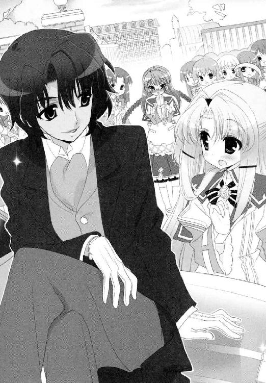
ややずり落ち気味の眼鏡を必死に押し上げ、あたりを見回していく。そして、待ち受ける剣の姿を見るやいなや、顔をさらに真っ赤にさせた。
「ふ、藤ノ原さま！」
「やあ、高天原さん。今日はなかなか清楚な格好だね」
剣は屈託なく言って、りぼんの方へと歩み寄る。
「もう連絡は行ってるはずだよね。今日は一緒につきあってもらおうか。いくつか面通ししてほしい相手がいるんだ」
そう言いながら、当然のようにりぼんの手を取ろうとする剣だが、
「ん？ どうしたのかな」
「あの、ひ、人が......」
りぼんはそう言うのが精一杯。やはり周りの目が気になるようだ。
「......ふうん......なるほどね。じゃあ、そこの彼女の言う通り、筋を通すとしようか」
剣はつぶやき、あえてりぼんの手を取った。
「諸君！」
ひやかしの歓声が上がる隙を与えず、あえて見物人に自分を見せつけるように。
「僕の名前は藤ノ原剣！ こうして仲間とともに高天原嬢を迎えにあがったのにはわけがある。彼女は人を捜している。一度あったきりで、名前もわからない少年だ」
朗々とした名乗りだった。さながらシェイクスピアの舞台に立てそうな口上に加え、肝心の内容を聞いた少女たちが、また別の意味で色めき立つ。
女の子は、コイバナの匂いというものが大好きなのだ。
「......まあ、一度きりって、それって一目惚れかしら？」
「恋？ 初恋かしら──」
「そうとも！」
ついに歓声があがった。
「僕は、高天原嬢のけなげな恋を救うべく、こうしてはせ参じた。彼女の恋を叶えることで、僕の恋も成就することを信じているからだ！」
「それってどなたですか!?」
「秘密だよ！ ただ、この校内にいる素晴らしい女性だと申し上げておこうか」
ますます女の子たちは盛り上がってしまっている。
「がんばってください、剣様！」
「ありがとう！」
「あたくしたち応援しておりますわ！」
「光栄だね。よろしく頼むよ！」
正門からあふれ出さんばかりの黄色い声を一身に浴びて、剣の堂々とした笑顔は、ますます輝きを増した。
「これは......してやられたわ......」
唯一、江戸城を守り通すはずの蜜だけが、呆然と呟いていた。
かくして──図書委員長の高天原りぼんが、藤ノ原剣らとともに思い人を捜しているらしいという話は、あっというまに校内へ知れ渡った。
例の人垣の中に、新聞部員が混じっていたのが運の尽きだったのだろう。翌朝の青美日報にはもう、『君の涙をとめるため～英国の黒騎士、青美の杜に立つ！』という思い入れたっぷりの記事が、堂々と一面に掲載されてしまったのである。
生徒会室の椅子の上で、雪国は日報を広げる。ため息が出た。
「......うわあ。またでっかく載っちゃってるなあ......芸能欄飛び越して一面か......」
「しばらくゴシップらしいゴシップがなかったですからね。これはたぶん、引きずりますよ」
「久我原さん......そんな人ごとみたいに」
「人ごとですから。そのぶん若光の君の男性説が風化してくださるので、ワタクシとしては好都合です」
彼女はそっけなく言って、座っていた椅子を引き直す。作業用テーブルの上に広げているのは、会計・久我原さゆね専用の仕事道具である電卓と帳簿だ。
クールなお人柄に見えて、どこまでも私欲に忠実な人だった。あっぱれ。
「そんなに気になるのであれば、ご確認なさってみたらいかがです？ 次の会議は、青美七委員がそろいますよ」
言われなくてもそうするつもりだった。
だが、勇んでいった会議室に、図書委員長であるりぼんの姿はなかった。
「......あれ？ 高天原さんは？」
「彼女は今日は欠席です」
同じクラスだという広報委員長が、席につきながら言った。
「風邪だと聞いていますけど......」
「そんな......」
その時自分は、いったいどんな顔をして聞いていたのだろう。風邪だと教えてくれた委員長は、『わかりますわかります』とばかりにうなずいた。
「やっぱり、会長も気になっていますよね。あのあと藤ノ原様と高天原委員長が、どんな会話をされたのか！」
「──え、そっち？」
「あたりまえじゃないですか。うちのお教室は、朝から記者会見の準備におおわらわって感じでしたよ。よそのクラスどころか下級生まで大勢押しかけて」
そうしてみな首を長くして待っていたところに、『欠席！』の報告が入り、とてもがっかりしたのだという。
他の委員長たちも、がっかりには同意見のようだ。真面目くさった顔で話にのってくる。
「たしかあのあと、空舟駅まで行かれたと聞いているが？ 広報殿」
「そうそうそうです風紀さん。藤ノ原様は、人を雇って街頭で呼びかけをされていたそうで」
「そ、そんなことまでみんな知ってるの!?」
「聞いたんですよ昨日電話で」
けろりと答えられてしまった。
「そ、そうなんだ......」
「新聞部じゃないですけど、うちの広報誌にインタビューが載せられないかしら......格調高くロマンチックに......ああん、早くいらして高天原さん」
この上まだ聞き出したいのか。
青美七委員。一応それは、『美化』『風紀』『保健』『文化』『奉仕』『広報』『図書』の七つのセクションから成り、青美女学院中等科の実務を末端で担う、百戦錬磨の実働部隊のはずである。
青美の乙女たちは、思ったよりも娯楽に飢えているようだ。大事な会議そっちのけで盛り上がる委員長たちに、雪国はかける言葉が見あたらなかった。
夕方、雪国は家から電話をかけてみた。
電話口のりぼんは、しきりに恐縮して謝ってきた。
『......そう。そうですかあ。本当にすみません。淡谷会長さまにまでご心配をかけてしまいまして......』
いやいや、いいんだよ高天原さん。
雪国は、まだ脱げない制服のスカートをもてあましながら、電話台の下に座り込む。
男装して五中に行っている舞姫が戻ってくるまで、カツラを取ることもかなわなかった。
けっきょく自分も、こうやって他の野次馬と同じようなことしかできないのが辛い。
「いいんだ。どうしてるかちょっと気になっただけなんだ」
『大丈夫ですう。今日はちょっと、気力と体力が、追いつかなかっただけで......』
どうやらりぼんは、笑ってみせたようだった。
生徒名簿で知った彼女の電話番号は、空舟市からかなり離れた隣県の局番からはじまっていた。通学には二時間以上かかるらしい。田舎なんですという説明に、謙遜以上の実感がこもっているような気がした。
『でもでも会長さま、ご安心ください。昨日はちゃんと、藤ノ原さまがお車で家まで送ってくださいましたし』
「その件なんだけどさ、大丈夫？ かなり無理なこととかやらされてない？」
『ええっと......空舟駅でいろんな殿方と引き合わせていただきました。わたくしが捜している方は、まだ、いらっしゃらなかったんですが』
見つかっていない、という知らせに、とりあえずほっとしてしまう。
『あの......淡谷会長さま。やっぱり学校は大騒ぎになってますよねえ？』
「う、うん......ちょっとね......」
正直に言っていいものやら。
しかし言葉を濁せば濁すほど、りぼんは感じ取ってしまったようだった。
『やっぱり......そうですよね......』
「悪気はないんだよ？ みんな」
『......藤ノ原さまは、後ろ暗いところがないなら堂々としていればいいって。そうおっしゃってくれたんですが......』
「そうなの？ でも、そんなの難しいよね、急には......」
『ええ。でも、そうありたい、とも思うんです......』
か細い声が、祈りのように響いた。
弱い彼女は、いつも変わることを望んでいたように思う。
はじめて彼女の悩みを聞いた時の、変えたい、変わりたい、自分の想いを届けたいというシンプルな願いを、雪国はふと思い出した。
「......とにかくさ、高天原さん。嫌だったら、ちゃんと言うんだよ。出て来づらいんだったらこっちでも対策考えるし」
『はい。ありがとうございます、淡谷会長さま』
「僕は高天原さんの味方だからね？」
それでも、決してもうやめるとは言わなかった高天原りぼん。
（......そんなに好きな人のこと、捜したいのかな）
通話を切ってしばらくしてからも、やはり心配は心配だった。
それとも単に、剣の勢いに押し切られて、言い返せないだけなのだろうか。
思い詰めると簡単には考えを変えられない彼女の性格で、剣に対抗できていればいいのだけれど。
「というか舞ちゃんたち、このままじゃやばいんじゃないの......？」
「ただいま──」
どうやらご本人が、五中から帰ってきたようだった。
雪国は玄関に出ていくなり、男装した舞姫に向かって言ってしまった。
「ねえねえ舞ちゃん。いまどうなってるの？ なんかやれることない？」
彼女はニセ雪国仕様のショートカットを揺らし、きょとんと不思議そうな顔。
「いきなり、なに」
「だからかくかくしかじか......」
そのまま舞姫が廊下を進み、洗面所で手を洗い、台所で冷蔵庫の中の物色をはじめるので、いちいち後ろについて説明を続けた。高天原りぼんと剣が、今なにをしているか。
「あ、プリンがあった」
「────だからしかじかこういうわけで、のんきにしてたら先にゴールされちゃうと思うんだ！」
しまってあった牛乳プリンのフタを開け、裏側にちょこっとだけ付いたプリンのかけらを舐めている姉上様。聞いてるのか。
「......プリン。食べちゃだめ？」
「僕は舞ちゃんが大物なんだかクールなんだか隠れお馬鹿キャラなんだかよくわかんなくなる時があるよ」
「正解は４番。実はみんな演技」
「それだけはないと思う」
「ばれたか」
舞姫はくすりと笑った。
「心配しなくてもさ、大丈夫だよ。ボクらはボクらで、ちゃんとやってるから」
「そう？ でもさ──」
「信じなって。ユキグニは、校内の噂の方、コントロールすることに専念して。そっちはボクらじゃどうにもなんないし」
それはたしかにそうなのだけれど。
今でもこうしているうちに、剣がりぼんを引き連れ、周囲の賞賛も引き連れ、目指す少年を見つけ出してしまうような気がして、いてもたってもいられなくなるのである。
＊＊＊
拝啓 ──親愛なる担当教師、サー ・エドモンド ・オブライエンへ。
ツルギです。僕もトーマともども無事に過ごしております。栄えあるスクールの新年度がはじまった早々、日本に戻ることになった不肖の生徒をお許しください。
寮やクラブのみんなには、僕が日本式の義理を果たしにいくと説明されていたようですが、決して腹を切りに行くわけではないことを重ねて説明していただけるでしょうか。
（例の教室で視た忠臣蔵は、もう二百年以上昔の作品です。神風の名のもとに空を飛んだのも過去のことなのです）
もっとも、僕自身のルーツの半分は、英国領生まれのインド人である母によるものです。辛口のトーマに言わせれば、この日本にいるのはエコノミックアニマルとオタク、そしてかしましい女性の三種類にしか分類できないのだそうですが。
その中でも、僕は幸いにして、理想の女性を見つけることができました。
実に優雅で美しく、まるで大輪の薔薇を花束にしたような女性です。
現在、僕は彼女の名誉を守るための戦いを続けています。
その方法というのが ──。
高天原りぼんという少女を、一言で表すとするなら『臆病』なのだろう。
「どう？ 高天原さん。彼だと思う？」
「あっ、あの......」
今も彼女は言葉につまったあげく、ちらりと一瞬だけ顔を上げた。
放課後の空舟駅だった。夕焼けが駅舎の屋根を染めはじめている。
弟のトーマがつれてきた候補者の少年を、りぼんは眼鏡越しに視界へ入れるなり、また深くうつむいてしまうのだ。
「..................ちがう、みたいです」
帰宅ラッシュがはじまった構内では、かろうじて聞き取れる程度の小声だった。
気の短い弟が、毛を逆立てているのが手に取るようにわかる。だが、ここで必要なのは忍耐と辛抱だった。
「高天原さん。違うんだね？」
「そうです。違うんです。ごめんなさい。すいません。あの......あなたもお手数をおかけしました。すみません！」
候補者の方を向いてまた謝っている。
礼儀正しいやまとなでしこと言えば聞こえはいいが、もう少し誇り高さと積極性があってもいいのではないだろうか。そうただしたくなる内気ぶりだった。
「すみません......」
「謝るよりも、前を向いた方がいいよ？」
小さな肩が、かすかに震えた。
「うん。君は充分魅力的なんだからさ。その方が誰にとってもメリットがあるよ」
剣はあらためて構内を見渡した。人は多いが、決して絶望的な数ではない。
顔を上げ続ければ、目に入る人の数も増えるのだ。
「ほら。もう少しだよ。協力してくれるかな、高天原さん──」
「──はい。わかっています！ すみません！」
りぼんは言うやいなや、胸に抱えていた鞄を開けた。
そこから取り出し、おさげの頭に巻き付けたのは、また一段と古風な『鉢巻き』である。
「それは......？」
「い、意欲の表れです。き、気持ちが追いつかなくても、形から入ると、がんばれる気がするんです」
なんとも、はや。
顔は赤く、足下は震えているのに、目だけは挑むようにこちらを見上げている。
「申し分ないよ」
「そうですか？」
剣は、うなずき手を叩いた。
周りに流されるまま、いつでもまるで手応えがないと思っていたが、実は気にしてくれていたらしい。こちらの言葉も、その目的も。
「藤ノ原さまの思いも、かなうと、いいですね......」
「ありがとう」
前にも増してこちらを見る人間の数は増えた。だが、それでも彼女はうつむくことだけはしなかった。
「......さてね。これでかえって逃げ出されたりしてな」
「顔を上げようとする女性は好きだよ、トーマ。この程度で無視するような奴なら、こっちから首に縄をつけて引きずりだしてやるさ」
花にもいろいろな種類がある。
たぶん薔薇でもひまわりでもなく。彼女の場合は野に咲く小花。たとえば一輪のスミレの花のような魅力があるのかもしれない。
勝とう、勝ってやろうという確信が、剣の口元に笑みを浮かべさせた。
＊＊＊
一方、舞姫。
「............」
「............」
「............」
「......大道寺構成員。大道寺構成員。そこのファイルを取ってくれないかね」
「うーっす」
「豆坂構成員。ちょっとこっちを見てくれないか」
「わ、わかった」
「もう一度はじめから見直してみるのだ。うむ」
淡谷舞姫、史上最強大噓つきめ。
なにが。なにが「信じなって」だ。
あせりのあまり舞姫は、部室のちゃぶ台を派手にひっぱたいてしまった。
「......ねえねえみんな！ ボクらこんなとこにいていいのかな!?」
バンと叩いた端から、地図やコピー用紙が舞い上がって、座敷全体へと散らばり落ちていく。
「いいのかなと。言われても」
その中で、芝目がたずねた。
「他にどうしろと？」
「とにかく、早く外でてさ。聞き込みでもなんでもさ」
「手がかりもなしに突撃できるほど、うちに人員はあまっておらんぞ？」
「じゃ、高天原さん連れてしらみつぶしに」
「そういう市中引き回しのさらし者のような真似は、ウチのスタンスに合わんだろ」
事務机でパソコンを叩いている芝目は、集中しているせいかとにかくそっけない。
「つかず離れず犯罪にならない距離感が、うちのモットーであると決めたであろう」
「そりゃそーだけどさ」
そのＳＥＣ的スタンスが、今はやけにもどかしいと言ったらどうなるだろう。
なにせこちらは、りぼんが話した特徴にあわせて、近隣の学校のリストアップをはじめたばかりなのだ。
部室の座敷に散らばり続ける地図や路線図は、これから舞姫たちが捜索に移るための下準備である。精度はたぶん問題ない。ただ、時間がかかりすぎている。もしかしたらいつも以上に。
向こうが底引き網ならこちらはテグスで一本釣り。向こうが散弾銃ならこっちは火縄銃。
こうしている間も、藤ノ原剣は人を使って派手な捜索活動をしているらしいのだ。昼夜を問わず、恥も外聞も問わず、金に糸目もつけずばんばんと！
心配していた弟の手前、余裕のあるふりをしてはみたが、決して穏やかな気持ちにはなれなかった。
「うー、やっぱみんな、ボクが勝手にコト進めたの怒ってるんだ......」
「そういじけるでない、兄貴。やっちまったことはやっちまったことだ」
ちゃぶ台の縁をかじりはじめた舞姫に、芝目が変わらず答える。
「どうもこの件、引っかかることが多すぎてなあ」
「そりゃ引っかかりまくりだって」
「ううむ......いや、そういうことではなく、なんというかこう......普通に切符を買っても目指す駅には進めんような、そんな気がひしひしと......」
「じゃあどうするの？」
「思いながらもいつもより念入りに調べるぐらいしか手段はないのだが。こうやって」
けっきょく、芝目もよくわかっていないのだ。そしてこんなところでくすぶってしまっている。
「まあまあ焦るな。高天原嬢の願いを叶えるだけなら、別にどちらがしても良い話であろう......てっ」
皿のみかんを投げてやった。
「ボクが負けるだけならいいけどさ、あいつを調子づかせたら胡蝶の宮に迷惑がかかるんだってば」
「それなんすけど兄貴ー」
横でファイルを広げていた大道寺が、思いついたようにつぶやいた。
「それってそんな困ることなんすか？」
「は？」
「──だってほら。兄貴は身内だし重度のブラコンすから除外するとして。普通に淡谷オトートと藤ノ原剣を比べたら、剣の方を取るもんじゃないんすか？ 女子的に見て」
純粋に疑問、という雰囲気で、舞姫は逆に戸惑ってしまった。
「......そうなの？」
「いやだから、普通の女子の意見として」
「そうなの？」
今度は芝目と豆坂にも聞いてみるが、彼らも普通の女子ではない。
「ボクは......除外しなきゃいけないらしいから」
置いといて、と横に置くジェスチャー。
そうなるとこの部室に『普通の女子』なる生物は存在しないことになる。
だが、想像してみることはできた。
背、高し。顔、印度の王子様。お金、持ちまくり。
恋敵に難ありと思えば、自ら勝負を挑む行動力もある。
そしてなにより、一途。熱烈に好きになって尽くしてくれるという。
「なんちゃってブラックコーヒーは......」
「そこは目をつぶって」
「つぶって............うわあ。けっこーな好物件かも！」
「そうなんすよ。通常の女子力ゼロの兄貴ですら気づける公式なんすよ」
舞姫は今さら不安になってきてしまった。
生徒会とソロリティの間で、たびたび戦ったり共闘してきた蝶間林典子。ローズロワイヤルの胡蝶の宮。
まさか彼女も、内心では迷っていたりするのだろうか。
＊＊＊
せいぜい夜店の指輪レベルね、と蝶間林典子は内心で独りごちた。
ここはグランホテル空舟──その地上三十階からながめる夜景は、空舟市という街の広さをそのまま現しているような気がする。目立って明るいのはほんの一部分で、輝きも光の粒の広がり具合も、典子の部屋の宝石箱にはとても足りない。ちっぽけなものだ。
「なにか考え事でも？ 典子さん」
食事の中で、剣が質問してくる。
浅黒い肌が、卓上のキャンドルに照らされ、エキゾチックな雰囲気を極上に引き立てていた。制服のモーニングから、私服のスーツに着替えた途端、また一つ年が上がって見えた。
「フレンチは好きだって聞いていたんだけどな」
「そうね。ここのオマール海老は、あたくしも好き」
いっこうに減らないサイドディッシュの皿を前にしながら、口から出るのは空々しい言葉ばかりだ。
気が重くなるぐらいだったら、はじめから来なければ良かったのだ。こんなホテルのディナーに誘われたところで、行きたくないと突っぱねればいい。
体裁や外聞を気にせず、あなたの顔なんて見たくないと叫び散らせば、きっと彼だってそれ以上無理強いはしないだろう（それ以前に幻滅されるだろうが）。
別れるにしても体裁は保ちたい。蝶間林の娘として、尊敬を受ける自分でありたい。そう思う心が、こうして典子を剣の前に立たせ、そして憂鬱にさせてしまうのかもしれない。
今日こそはきちんと別れてもらうのだ、婚約は解消してもらうのだと意気込んで、また──自分は負けるのだろうか。
「......ねえ剣さん。あちらの学校の方は、お戻りにならなくてよろしいの？ 学業に支障が出るのは問題だと思いますわ」
「かまわないよ......と言いたいところだけど、まあなんとかするよ」
「そう。なんとかできまして？」
「本家の法要は、つつがなく終わったところだから。あとは蝶間林氏の容態が快方に向かってくれればってところかな」
粘るだけ粘って、なにを得ようとしているのか。
「できれば、出遅れた君との関係も修復して戻りたいところだよ」
「まず婚約ありきの関係？」
「そうだね。順番が違って申し訳ない。かなり不愉快だったと思う」
ちくりと嫌みを言ってみたつもりだったのに、向こうは馬鹿正直に認めて謝罪した。
「......海の向こうにいらっしゃったら、できることはかぎられておりますものね」
「とにかく早く手を打たないと、君が誰かに取られるんじゃないかと思って、いてもたってもいられなかったんだ」
ひどい人だ。
憎むぐらいさせてくれてもいいのに。
「おかげであたくしの学校は、大騒ぎですわ」
「君の名前は出さないでおいたよ。立場はわきまえないとね」
「......無駄足になるのがお気の毒と申し上げるべきかしら」
「予定通りにいかないからって、すぐに投げ出したら、君の方が怒るんじゃないか？」
「そうかしら。だってあたくしの心はもう決まっておりましてよ」
「それこそ思いこみじゃないかな」
はじめて、沈んでいた心に火がついた。
剣の目をにらみ返した。
「やっとこっちを見てくれたか」
「......剣さん。あたくしの今の気持ちがおわかりになって？ この目の前の皿をあなたにぶつけてやりたくてたまりませんのよ」
「でも、しないよ。君は」
冷静に、剣。
食べかけのオマール海老。上にかかったレモンのソース。つけ合わせのキャビアやペッパーごと、剣の肩口に飛んでいって、派手な染みを作るところまで想像できるのに。
するわけがないと、彼は言う。
「ここのホテルは、君のお祖父様も出資してる系列グループだよね。支配人から清掃係まで君の顔と名前を知っている。さっき料理の説明をしたギャルソンも、デザートの後に挨拶に来るはずのシェフも、みんな君の一挙手一投足を気にしている。客だってそうだ。だからできない」
典子の横を、ウェイターが通り過ぎていく。横のテーブルで、客が肉を切るナイフの音が聞こえてくる。
いつだって、まわりに他人の目があった。それこそ生まれた時から。
「あたくしが、蝶間林の娘だから動けないと......？」
「責めてるわけじゃないよ。それは君にとってあたりまえのことだろうし。夏の別荘にいた時もそうだったよね。帰りたいのに帰れない。腹の中で不満を押し殺して、義務を果たそうとする君は綺麗だったよ。この人だって思ったぐらいに」
そうだ。帰りたくてたまらなかったのだ。
帰りたくて、帰りたくて、雪国さんに会いたくて──。
「こういうことが言えるのも、僕が藤ノ原の人間だからだよ、典子さん。守るべき名誉に縛られて身動きが取れない人間の苦しみなんて、淡谷雪国にはわからない」
「でも、あたくしが好きなのはあの方！」
精一杯の抵抗だった。
みっともなくわめき散らすぎりぎり一歩手前の、『蝶間林の娘、典子』として許せる限界のところに典子は立たされていた。
「好き......か」
「そうよ。剣さんだってご存じのくせに──」
「君はそうでも、向こうは？」
剣は訊ねるのをやめない。
そうしないと、壊せる壁も叩き壊せないとばかりに。
「たしかに君は、淡谷雪国を恋人として連れてきたけど。僕には、本当に心の通い合った恋人同士には見えなかったよ。がんばるぶんだけ、ぎこちなさが先に出る感じで」
その正しさが痛いのだ、藤ノ原剣。実際につきあうどころか、あそこにいたのは偽物だ。学院の若光の君に、一日だけと頼んで来てもらったのだから。
本物なんて、典子には連れてこれなかった。
これもまた、プライドを優先させた結果だった。自分で頼んで断られるのが怖かった。理由を付けて逃げてしまった。
誰にも恥じることのない姿でいようと努めたところで、限界はあった。肝心なものに届かない。届けられない。弱くて、叫ぶこともできない、本音の、自分。
「その後に会った時は、もっと違和感があったな。彼は本当に君のことが好きなんだろうか。僕との勝負を受けた時も、所属するサークルの名誉を優先して考えているように見えたよ」
手痛い指摘。
言葉を失う典子。
そんな典子に向かって投げられる言葉は、最後にかぎってだけ優しく染みた。
「落ち着いて考えよう、典子さん。なにが君にとって一番いい道なのか。人より多くのものを背負わないといけない人間はね、愛されないと生きていけないよ」
メインディッシュは上等のラム。デザートは林檎のクレープ。食後のコーヒー。シェフの挨拶。
おいしいお料理をありがとうと店を出る。その最後の一歩にいたるまで。
馬鹿な典子。自分の中に、飛ばせる皿が、なに一つないことを思い知った夜だった。
「今日は楽しかったよ」
自宅の車寄せまで典子を送り届け、剣は笑った。
拒絶される理由を与えないためか、距離は友人の節度を保って触れようともしない。
典子は、目を細める。背後の建物から漏れる人工の明かりと、庭先の月明かりの間で、それは弱々しい微笑に映っただろう。
「......剣さんも、お気を付けて」
「そうだね。ありがとう、つきあってくれて。いろいろきついことも、沢山言ったかもしれないけど、聞いてくれて嬉しかった」
そして彼は付け足すのだ。
「君の『恋人』にもさ、近いうちに会うことになると思うよ」
「......雪国さんに？」
「そろそろいい結果が届けられるんじゃないかな」
「──お二人とも、そちらにいらっしゃいましたか！」
ふいに背後の正面玄関から、あわただしい声が飛び込んできた。
見れば以前に典子をヘリで呼び出した男。にっくき泰三の第一秘書だ。典子の柳眉がきつくひそめられるのを予想していたように、向こうは大きく頭をさげてくる。
「申し訳ありません！ で、ですが。か、会長の容態が急変して──」
なぜだろう。自分の目の前が、白くかすんでいくような気がした。
＊＊＊
淡谷雪国は、青美女学院前のバス停裏にひそみ、茂みの間から女子生徒の登校風景を見守っていた。
時刻は、朝の八時十分。この時点で必要なのは、ひとかけらの勇気と覚悟なのだろう。
空を見上げる。きらきらと輝く朝陽がひどくまぶしい。耳にははしゃいだ笑い声も。
いつものように楽しく日常を過ごしているこの乙女たちの楽園に、これから自分は、土足で踏み込もうとしているのだ。
（決めただろ！）
これ以上もたもたしていたら、時機を逸してしまう。最大限の効果を狙おうとしたら、もう一分一秒だって無駄にはできないのだ。
「どうされました、雪国さま」
「久我原さん！」
だが、ひそんでいた林から出るあと一歩のところで、肩をつかまれてしまった。
「ああ、ごめん久我原さん。今は話してる時間がないんだ。詳しい話はあとで」
「納得できかねます。そのお召し物はなんですか」
「高天原さんのためだよ」
雪国はもどかしげに答える。
今の雪国は、ふだんの女装スタイルに加え、パーティー用のヒゲ付き鼻メガネを身につけ、さらに頭に舞姫が劇で作った殿様のちょんまげをねじこんでいた。肩には『作ろう明日の生徒会・立候補者随時受付中』のたすきをかけたし、手には選挙日程を書いた日の丸の扇も完備している。
「どうしてそれが彼女のために？」
「校内のマスコミ対策だよ。ほら、昨日は遅刻ぎりぎりに学校に来てもらって、授業中はだんまり決めこんで、帰りは裏門からタクシー使ってもらったけどさ。いつまでもそんな手は使えないじゃないか。だから、どうにかして他に興味を移してもらわないと」
「それでその格好ですか？」
「歌って踊りながら校舎のまわりを一周でもすれば、もう誰も高天原さんのことなんて気にしなくなるよね」
──名付けて、人身御供大作戦。
雪国の評判は地に落ちるかもしれないが、彼女の身柄を守るためならいたしかたない。舞姫の弟として、生徒会長として耐えなければ。そう思って断腸の思いでここまで来たのである。
「それが舞姫さまの格好と名前であることを忘れないでください！」
「大丈夫。舞ちゃんなら許してくれるさ！ 行くよ！」
お待ちください雪国さま！
雪国はさゆねが止めるのも聞かず駆け出した。鼻眼鏡のゴム臭に顔をしかめつつ、恥も外聞もかなぐり捨てたダブル・ヅラ格好のまま、茂みを飛び越え、縁石を飛び越え、並木道へ躍り出た。
「みんな、選挙に──」
空中で身をひねる。眼前に突如あらわれた謎の人影に、少女たちが言葉を失う。雪国の挙動に目が釘付けになる。
ぎりぎりまで滞空時間を保ってから、雪国はさらに飛んだ。
「選挙に行こう──」
「みなさん、高天原さんよ！」
しまった、まだ仕込みが足りない！
完全に注目を集めきる前の状態で、りぼんが登校してきてしまったらしい。昨日打ち合わせた時よりも、ずいぶんと早い登校だ。
こうなるともう、少女たちの興味は半分も引きつけられない。雪国はたたらを踏みつつ着地するが、すでに視線はこちらになかった。並木道の端に現れた、三つ編みの図書委員長めがけ、大勢の少女が群がっていく。
「待って。待ってみんな──」
あと少しなのに──。
流れに逆らいぶつかった拍子に、鼻眼鏡が飛んだ。こちらの叫びもむなしく、人は一カ所へ流れ続けた。その先には、高天原りぼんがいた。
ふっくらとした頰を赤くし、鼻先にのせた本物の眼鏡のフレームをずり落ちそうにさせながら、彼女は手に持つ鞄を救命用具のように抱きしめる。
叫ぶ。
「青美女学院の、ご学友のみなさまあ！」
声を嗄らさんばかりのフルボリュームだった。
「──あの、あのあの、お騒がせしました。おかげさまで、捜している方が、見つかりましたあ！」
第５章 揺れる思い
「──抜かれた？」
舞姫は、男装したその姿で、携帯を握りしめる手を添えなおした。
電波の向こうで、女装の弟が言っている意味がよくわからなかった。
「なーなー兄貴。それオレのケータイっすからちょっと返して──」
「ごめん。もういっかい言ってくれる？ 抜かれたって誰に？ 藤ノ原剣？」
まとわりつく大道寺をあしらいながら、部室の座敷に腰を下ろす。
これから部室を出て、探索に行こうという時に、こんな連絡が来るのは予想外だ。
『──だから、他に誰がいるんだよ舞ちゃん。高天原さんの件だよ？』
まわりの視線をうかがうような、おさえた声で雪国は言う。
大道寺の携帯にかかってきたナンバーは、公衆電話のものだった。きっと教務課の前の旧式電話でかけているのだろう。めったなことを言うと、事務員の目が怖い監視付き電話だ。
弟いわく、高天原りぼんの思い人が、昨日の時点で見つかっていたのだという。藤ノ原剣の手引きで、すでに再会も告白もすませているらしい。
「うそう......」
『昼休みに記者会見があったんだけどね......』
会見の会場は、大会議室。その議長席に問題の高天原りぼんが座り、広報委員が場を仕切る。最前列に新聞部の記者とカメラマンが陣取り、一般の傍聴席にもあふれんばかりの人が押しかけたという。
一部始終を説明すると、
──お相手は、どんな方なんですか？
──は、はい。あ、あのっ、空舟北高等学校の一年生の方、で。部活は、バスケットをやってらっしゃいます......。
──高天原さんが上げた条件と、ぴったり合う方を見つけだしてくださったのですよね。
──はい......藤ノ原さまの行動力には、とてもとても、おどろいています。まさか、本当に見つけてくださるなんて......。
──告白も藤ノ原様の立ち会いのもとだったとか。
──そうです。ずうっと、お側についていてくださって。
──心強いですねえ。告白の言葉はどんなものだったんですか？
──えっと......あの、ずっとお慕い申し上げておりました、と。
──お返事は？
──いいよ、つきあおう......だったと思います。
『きゃああああああああああああっってさ』
そうやってあがった黄色い悲鳴と拍手の嵐で、会場は一時、普通の会話もできなかったそうだ。
「......え、じゃあもう、完全無欠のハッピーエンド......？ ボクら出る幕なし......？」
ガタン！ と。舞姫のすぐ後ろで、椅子が倒れる音がした。
同じ部室内にいる芝目夏彦が、無言で立ち上がっていた。
「か、会長......」
彼は事務机に両手と体重をあずけ、ノートパソコンの画面は開いたままだ。うつむいたその顔は、前髪にかくれて表情まではうかがえない。
ショック。やっぱり抜かれたのはショックだったのだろうか。
大道寺や豆坂、そして舞姫自身が固唾を飲んで見守る中──。
「──しばらく、休むか。いい機会であるし！」
ところがどっこい。あまりにかわりばえのしない、ニカッと気の抜けた笑顔だった。
＊＊＊
噂を消す一番の方法は、その噂を本当にしてしまうことなのだという。
翌日の青美日報に詳細の記事が載った時点で、その噂の真のピークは過ぎており、あとはゆるやかな下降線をたどるか、もっと大きな事件が起きた時点で立ち消えになってしまうのだそうだ。
雪国の思いをよそに、連日紙面を飾り続ける高天原りぼん関連の記事の山。その山の前で微妙な顔をしていたら、さゆねが教えてくれたことである。
「つまらない話ですよね......」
この人のねじくれぶりも相当なものだ。
しかし、たとえ彼女が言うとおり、学院内の浮かれた空気が、しばらく辛抱していれば直るものなのだとしても。
気になるものは気になるのだ。
いま、スカートをはいた雪国の目の前には、青美女学院のテニスコートが広がっている。
フェンスの金網越しに、白いテニスウエア姿の少女たちが、ボールを追いかけているのが見えた。
半分はテニス部員の練習で、もう半分はローズロワイヤルのテニス大会だった。最近はもう、中部連やソロリティ側の話し合いも進み、無理に全面を借り上げることなく、早朝や放課後の練習場所を融通しあっているはずだ。
「一駿河さん」
「......先輩ですか」
雪国は、視線を奥のテニスコートへ向けたまま、つぶやいた。
「胡蝶の宮の姿が見えないみたいだけど」
いつもベンチかコートで、大輪の花を咲かせているはずの、トップの姿がどこにもなかった。
お気に入りの歌姫である蜜が、こうして観戦用のベンチに一人でいるぐらいだ。
「......お姉様は、しばらくソロリティの活動をお休みするそうです」
「えっ」
「お祖父様のお見舞いに行かなければならないからだそうですけど......」
答える蜜の声も、元気があるとは言い難かった。
「そんな......初耳だよ僕。そんなにお見舞いに行く必要があるの？」
「お祖父様の具合が、あまりよろしくないのは本当みたいなんですよ」
「そうなんだ......」
それ以上のことは、蜜も知らないと答える。
「なにか最近のお姉様、あまりお話ししてくださらなくて......ずっとそんな感じで上の空で......」
ため息が出る、ということらしい。
そのまま蜜は、置いていた自前のテニスラケットを、薄い胸に抱きしめ直す。
雪国もまた金網を握りしめる。具合の悪いおじいさま、か。
「病室ってたぶんさあ、彼も来るよねえ......親戚だし......」
「──先輩、なにか変な想像してませんか！」
「へ、変っていうか」
思ってしまっただけなのだ。
舞姫たちとの勝負に勝った許婚──藤ノ原剣のことを、胡蝶の宮はどう受け止めているのだろう。
見直しただろうか。それとも、変わらず雪国のことだけを見ているのだろうか。
どちらなのだろうと。
「お姉様は、変わりませんよ。あんな奴気にもとめてません」
「そうだといいけど......」
「いいけどじゃありません！ そうなんです！」
蜜はむきになって言い張った。こちらの反応が鈍いままのが気に入らないらしく、コートから転がってきたテニスボールを、投げ返すどころかこちらに向かって打ち込んできた。
（うわっと）
カシャアン、と揺れる金網。蜜はくるりと背中を向け、コートの中へと走っていく。その白いウエアからのぞくアンダースコートのレース具合と、顔面に飛んでくるかと思ったボールの残像が、いつまでも交代で視界を灼いて困った。
しかし胡蝶の宮に話しかけるのは、思ったよりも難しかったのだ。
青美の校内で呼びかけようとしても、いつも近くに取り巻きを置き、決して一人にならない。
対外的には『生徒会長とローズロワイヤルのトップ』という看板を外せないので、こうなるとプライベートの話は出しづらい。せっかくの会議の席で、目と鼻の先に彼女がいるのに、剣のつの字も出せないもどかしさを、雪国は何度となく味わうことになった。
涼しい顔で歩き続ける彼女が、一度だけ、一人でいるのを見たことがある。
いや、正確には大勢に囲まれていても一人だったと言うべきだろうか。
彼女はクラスメイトとの談笑にまじるふりをして、一人背後の窓を見つめていた。
トレードマークの豊かな長い巻き毛。その横顔の鼻筋が高く通っていた。四階の校舎から、表の地面を見下ろす静かなその表情と、まわりの少女たちの笑顔のコントラストが鮮やかだった。
すれ違いざま、雪国も同じ地面をのぞいてはみたが、よそ見をしたくなるようなものは何もなかった。
「どうかされましたか？」
「う、ううん......」
久我原さゆねにうながされ、雪国はまた歩きだす。
──見ているようで、見ていない。
人はそれを、『物思いにふける』と言うのではないだろうか。
＊＊＊
蝶間林典子は、車の後部座席に身を沈め、静かに目を閉じていた。
「──すいません典子様。少し道が混んでいるようですね。もう少しお休みいただいていてもけっこうですよ」
カチカチカチと、マイバッハのウィンカーが右折を告げる音だけが聞こえてくる。
「典子様──」
「うるさくてよ、徳永。休ませたいと思うのなら話しかけないでちょうだい」
「も、申し訳ございません」
最近は学校を出たとたん、こうして第一秘書の徳永に車で拾われる。そのまま祖父のいる病院まで直行するので、プライベートな時間など、この移動の間ぐらいしかなかった。
とげとげしい声を、隠す気にもなれなかった。典子はハンドルを握る徳永を置いて、ため息まじりに起き上がる。
それでなくとも、状況は最悪としか言いようがないのに──。
典子は鞄の中から、小振りのアルバムを取り出した。
そこには夏合宿で撮った空舟五中との集合写真やスナップ写真、そして芝目夏彦にこっそり頼んで仕入れた『淡谷雪国』のプライベート写真が入っていた。
見れば心が和む大事な宝物なのに、最近は落ち着かない。
以前に言われた剣の言葉が、頭から離れないのだ。
（愛されないと、生きていけないですって？ 剣さん）
合宿でルパンとホームズの衣装を着込んで、同じフレームに写る姿は、典子の目から見ても悪くない雰囲気なのだ。空舟五中とソロリティが、和気藹々と協力しながら一つの舞台を作って。結末はさんざんな出来になってしまったが、それは彼らが悪かったせいではない。
アルバムをめくる。
このあたりから、写真は合宿メインの青美女学院内から、芝目からもらったプライベート写真に切り替わっていく。主に空舟五中で学校生活を送る、ふだんの雪国の表情だ。
授業中に居眠りをしていたり、教室の掃除をがんばったり、部室でお菓子を食べたり。
どれも典子が見たくても見られない、もう一つの雪国の顔だった。
「......ねえ、徳永。これはいったい何をしているところかしら」
信号待ちをしている徳永に、典子はついたずねていた。
「あたくしが見たことがないものだわ」
「......何、ですか？ 写真？ ちょっと待ってくださいよ」
徳永が、振り返って写真を受け取る。
「......なんだ。給食の配膳じゃないですか」
「配膳？ 自分たちでよそうの？ 給仕の人間は？」
「いませんよ。給食室か給食センターで作った食事を、教室まで運んで配るんです。懐かしいな。揚げパンか。うまいんだよな、これ」
後半はほとんど独り言になっていた。
庶民出の徳永は目を細め、一般の給食の風景というものを話してくれた。
白衣と帽子をかぶり、ものものしい配給の時間のように見えたが、そうやって毎日食事の準備をするらしい。
金属製のバケツに入ったカレーやうどんを配ったこと。デザートのプリンが取り合いになること。ミルメークと揚げパンがおいしかったこと。
写真の中の淡谷雪国は、その白衣姿で給食を配っていた。
「そうですか。典子お嬢様はご存じなかったですか......まあ、青美にこの手の給食はないですからね。かわりになんでも持ちこめるんですから羨ましいですよ......」
しょせんお嬢様だからという空気を、その消えていく語尾に感じてしまった。典子は少し傷ついた。
だから、思わずたずねてしまった。
「そういう普通のことを知らない人間が、普通の殿方を好きになるのはおかしいかしら」
「ええ、そりゃ、おかしいとは言いませんが......難しいとは思いますよ」
「なぜ？」
「それこそ得てきたものが違うじゃないですか。生まれてからここまで、取り込んできた世界の違いってやつですよ。典子様ほどの方なら、余計に差があると思いますよ」
そんなはずはない。きっと差は埋められるはず。
こんなに好きなのに。
（でも──好きなだけじゃ駄目だったら？）
生まれも育ちも違うひと。考え方もなにもかも。このまま届かないのが運命だという不安は、染みのように心の内へと広がっていった。
どうすることもできず、両手でアルバムを抱きしめる。
「だからこそ典子様には、この事態を救うお力もおありになると考えればいいんですよ──」
「徳永」
「なんでしょう」
「そこを曲がって」
迷いは、晴れない。いつまでも。きっと、この目で確かめないかぎりは──。
＊＊＊
（携帯も、ずっと『圏外』か......）
おかけになった番号は、電波の届かない場所にあるか、電源を切っている可能性があり云々──。
雪国は、最後まで聞かずに、自宅電話の受話器をおろした。
胡蝶の宮は、祖父のいる病院通いで放課後が埋まっていると聞いている。それなら繫がらなくてもおかしくはないのだろう。
だったら、なぜ？
カツラに青美の制服姿のまま、雪国はリビングのソファに寝ころんだ。
自分でも、なにがどうしてこんなに焦って落ち着かないのかわからなかった。
──蝶間林典子。ローズロワイヤルのトップ。
いつも気位が高くて高慢ちきで、ソロリティを率いる女王様として、生徒会の若光の君とは対立関係にある。それが、舞姫に教えてもらった彼女にまつわるデータだ。
大勢の取り巻きと一緒に、嫌みを言われたことも何度かあるけれど、つきあって見れば聡明な女性だった。
周りが望む自分と、素の自分の間にできた溝を、どこか遠いところから眺めているようなシニカルな目線があった。そういう時はたいてい、ニセ舞姫と一対一の時なのだ。
そして、リアル雪国としてつきあう時は、そんな負の部分を感じさせないほど、朗らかで明るい女性だった。どこか抜けた勘違いまで長所にしてしまうような、チャーミングで屈託のない女の子だった。
雪国さん、雪国さんと。耳の中で自分を呼ぶ声がする。
当たり前のようにあったその声が、この件で消えてしまうかもしれない──自分は、その可能性におどろいているのだろうか。
（ばかだな）
そんなもの、決まったわけでもないし、雪国が不安がる類のものでもないだろう。
蜜がボールを投げてくるのも無理はないのだ。しっかりしろ自分。
きっと彼女が浮かない顔をしていたから、心配でたまらなくなっているのだろう。
雪国は、えいやと言い聞かせて起き上がった。
そのままずれかけたカツラを頭にねじこんでいると、部屋の隅に舞姫が立っていた。
「わっ、舞ちゃん」
「......ユキグニ......」
ニセ雪国仕様のショートカットと、五中の制服のまま。ぼんやりと。
「......な、なに、帰ってたの？」
舞姫が、うんとつぶやきながら近寄ってくる。ぺたぺた、ぺたぺた、裸足のままフローリングからカーペットへと上がり込む、その足取りにまるで生気がなかった。
「どうしたの、舞ちゃん。なんかふぬけちゃって......」
「......どうしよう。ユキグニ。もしかしたらボク、やっちゃいけないことやっちゃったかも、しれない」
そして彼女は、この一時間に起きたことを語りだした。
＊＊＊
──駅前のだいちゃんラーメンでみそラーメンを食べよう。
舞姫の提案にのったのは、大道寺と豆坂の二人だった。
まだ夕飯前の、人が混み合う前のお座敷席に、頼んだ三人分のみそラーメンが届く。さっそく熱い汁をこぼさないように、もやしを飛ばさないように、三人でいっせいにかきこんだ。
「うむ。美味なり」
「外さないっすよね、基本」
豆坂も、どんぶりを抱えてうなずいている。
「......なんすかねー、兄貴ー。しばらくはこうやってラーメン食うぐらいしかすることなくなるんすかねー。会長、休めとか本気で言っちまってるし」
「ぶ、部室もこなかったし」
二人のぼやきに、舞姫もまたコーンを箸でつまむ手を休めた。
けっきょく話題は、そこに行き着いてしまうのかもしれない。
なにしろ舞姫たちＳＥＣの活動は、会長芝目の宣言で『骨休み期間』に入ってしまっているのだ。部室にいても特にすることがなかったので、まだ部室に残っていた二人を誘ってみたのである。
大道寺はなおも続けた。スープの染みた割り箸を中空に向け、
「そりゃね。オレもね、抜かれたのはショックだったっすけど。つかむしろショックだったら休まねーっての。今回ばかりは会長のヘタレっぷりに乾杯っすよ」
「大道寺くん......」
「兄貴ももっと怒ったっていいんじゃないすかね！」
ぶりぶり怒る大道寺を、舞姫はむしろなだめる方だった。
店のガラス戸が開いた。
新しく入ってきた客は、なぜかソロリティの蝶間林典子だった。
彼女は一人だった。一人の取り巻きも、一人のお供も引き連れず、青美女学院のワインレッドの制服のまま、やや油染みた個人商店の中に踏み込んできた。
「らっ、らっしゃ......」
いつもは威勢のいい厨房の店主も、その美貌のお嬢様が本物かどうかつかみかねているようだ。
「......こちら、禁煙と喫煙席の区別は付けておりませんの？」
「お、おりませんです......ね。はあ」
「そう。それなら結構。かまいませんわ。席は自由に選べて？」
「まあ、座りたいところに──」
カウンター越しに店内を見渡す店主。胡蝶の宮もまわりを見渡す。空席は全体の三割といったところだ。なぜか自分が座る席を譲り渡さねばならないと思った大学生が、ドンブリを持ち上げて中腰になっていた。
けれど彼女は予想した通り、舞姫たちの卓の隣に、靴を脱いで上がり込んできた。
「ごきげんよう、雪国さん」
「......こ、胡蝶の宮......」
いったい何をしに。
「ラーメンをいただこうと思いましたの」
「ラーメン......」
「ええそう──お店の方、メニューはどちらに？ 壁にあるだけ？ お勧めはどれになるのかしら？ じゃあそれをお願い」
お冷やを持ってきたアルバイト店員に、『だいちゃんラーメン大盛りあじだま付き』を注文し、彼女はあらためて背筋をのばした。
──だいちゃんラーメン大盛りあじだま付き一入りましたー。
厨房で懸命に麵が茹でられ、秘伝のタレとスープが混ぜられ、大盛りに具が盛るに盛られてカウンターにのる。それを店員が座敷へと運ぶ。
「だ、だいちゃんラーメン、大盛りあじだま付き、です」
店員の声は、気持ち震えていたかもしれない。
ドンブリから溢れんばかりの大盛りラーメンを見て、胡蝶の宮は美しく微笑んだ。
「おいしそう」
割り箸を割り、正式な茶会にも出られそうな正座の姿勢で、そのラーメンを食べはじめる。
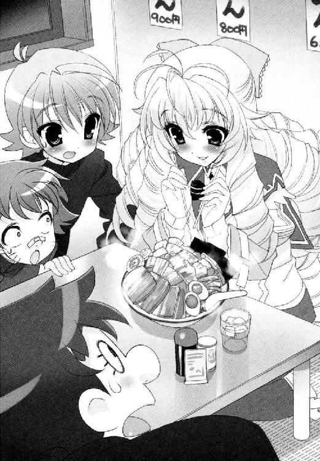
舞姫たちは、もちろん目が離せない。
彼女は麵をすすっている。
「......胡蝶の宮。あの、できればもっとこう、具と麵を一緒に崩す感じで、わしっとつかんで、勢いよくずずーっといっちゃった方がいいんじゃないかと。ずずーっと」
「そのままそのまま」
「髪、邪魔じゃないっすか？ てんちょーたしか髪ゴムかクリップあったっすよねー」
すすっている。懸命に懸命にすすっている。
「ちなみに湯気で鼻水も出まくりますけど、それも普通です。気になるならそこの紙ナプキンを」
無言でうなずき、紙ナプキンで鼻の下をおさえる胡蝶の宮。
半分ぐらいすすり終えたところで、はじめてお冷やを口にふくんだ。
「......皆さんは、いつもこういう場所で、お食事をなさってるんですか？」
「いつもっていうか......まあ放課後で暇な時は」
食べるタイミングを逃して、麵が倍にふくらみはじめた自分のみそラーメン。だが、これはもう仕方ないだろう。
「......話に聞くのと、実際に体験してみるのは、また違いますわね」
「やっぱり、来たことなかったんですか？」
「あたくしには、ちょっと量が多い......かしら」
「そりゃ元から大盛りですし」
腑に落ちたように、手元のドンブリを見つめている。
「もとから......全部が違って......届かない......」
「胡蝶の宮。食べてください。伸びます」
「まあ、いけない」
＊＊＊
──蝶間林典子はそうして、ニンニクの香りただよう店内に、優雅な薔薇の残り香と代金を置いて、風のように去っていった。
舞姫の話は、それで終わりだった。
「え......なに。それだけ？」
「それだけだよ」
ラーメン食べて、別れて。それだけではないか。
雪国の前には、それだけなのに顔色をなくしている姉がいるのだ。
「......なんだろう雪国......ボク、いますごく嫌な予感がしてるんだ。知らない間に地雷踏んじゃってたみたいな。ボクの足、まだちゃんとある？」
かすかに声を震わせる、舞姫の肩を抱き留めながら、雪国は困惑するしかなかった。
地雷が仮に事実だとして、いつになく風変わりな行動を取った彼女は、そこからどうするのだろう。
飛び散った地雷のカケラは、いったいなにを、変えていくのだろう。
＊＊＊
病棟のエレベーターが、いつもと同じ待ち時間で、最上階へとたどりついた。
静かにドアが開いていく。
典子のことを待ちかまえていたのは、いつも戦い続けた看護師長だった。
「ご家族の方は、こちらへ。皆様お待ちです」
「またあなたなのね」
堂々と素通りできる優越感を、味わっている余裕はなかった。今は。
召集の連絡を受けてかけつけた親族や関係者は、いつもよりずっと多く、病室内に入りきらなかったらしい。廊下の窓辺で携帯の電源を入れようとして注意される会社の幹部や、典子の顔を見て近寄ってくる親戚がいた。
叔母が話しかける。
「良かった。来てくれたのね、典子さん。遅いから心配したのよ」
「おばさま──申し訳ありません。少し所用があって」
「ほら、来て」
彼女は気遣わしげに典子の背中へ手を添え、そのまま歩き出す。
「典子さん。もうわかっているでしょうけど、これは仕方のないことなのよ」
「ええ。存じております。おばさま」
「分別をもって。お祖父様のためを思ってね」
だからわかっている。
ちょうど今、雪国に会って、最後の覚悟を決めてきたところだ。
病室に踏み込んだ。
看病用のスツールにも、休憩用のソファにも、人が埋まって典子の登場を待ち望んでいたようだった。
典子は、あらかじめ用意されていた枕元の椅子に腰掛け、お祖父様、と呼びかけた。
「......典子......か？」
「そうですわお祖父様。おわかりになって？」
「わかるとも......じゃが......顔がよう見えんな......」
「ちゃんとここにおりますから。ご安心ください」
ゆっくりとその手を握ると、かさついた肌と節くれだった指の感触が、いっそう強く感じられた。
この三日間で、ずいぶんと体重も落ちたように思える。
「早くお元気になっていただかないと」
「無理を......言うな......死ぬばかりの老人に......」
「そんなことおっしゃらないで。お祖父様はあたくしの花嫁姿をご覧になりたくないの？」
泰三が、かすかにまぶたを動かした。
ここにいる人間は、全員がその力に期待している。泰三が目に入れても痛くないほどにかわいがっている孫という、蝶間林典子がこなす立ち位置の力に。
溝が埋められず、望むものが得られないなら、せめて。この力を使って役立ちたい。良かったことだと思われたい。
「お前の？ 相手は──」
「僕です、お祖父様」
典子の脇から、剣が手をのばした。浅黒い精悍な右手が、典子の掌ごと包むように添えられる。
「お式は来週。来ていただけますわよね？ あたくしと剣さんの──」
「お待ちしています。是非」
泰三の頰が緩んだ。
「おお、おお、それは良かった......本当によかった......」
「さあ会長。こうしてはいられませんよ。お孫さんの晴れ姿のためにも気をしっかり持っていただかないと」
「来週明けに予定していた会談ですが──」
親戚の後ろで待機していた背広組がどっと押し寄せ、病室はにわかにあわただしくなる。
典子は、剣とともに泰三の手を握りながら、優しく微笑み続けた。
そして。
同日深夜──藤ノ原剣と蝶間林典子の仮結婚式の日取りが、関係者に向けて発表される。
＊＊＊
翌日、雪国が青美女学院に登校すると、校内の空気がいっそうざわついていた。
なんだか行き交う少女たちの頰が、つやつや輝いて、二割増しに活き活きして見えるのだ。雪国は耳をすましてみるものの。
「──ねえ。本当におめでたいですわね──」
「ええ。剣様がおっしゃっていた恋の相手は──でしたのね──」
切れ切れに飛び込んでくるのは、はしゃいだ噂話と会話ばかり。
まず思いついたのは、高天原りぼんの噂が再燃したことだった。もしかしたらなにかの拍子で、予想以上に火がついてしまった。その可能性である。
（まずいよ）
あの大騒ぎをまた繰り返すわけにはいかなかった。雪国は、早く行って守らなきゃと、階段を駆け上った。それはもうロングなカツラを振り乱し、スカートの裾を蹴飛ばしながら、りぼんが所属する三年すおう組の教室へと全力疾走するが、
「淡谷会長さま？」
当のりぼんが、廊下で雪国に声をかけてきた。たった一人で。
こけそうになったではないか。
「......よかった......また人に囲まれてるんじゃないかと思ったよ......」
「いいええ、わたくしの方は、もうなにも......」
だが、りぼんからこの騒ぎの理由を聞いた時、雪国は自分の耳を疑った。
「......は？」
「......ですから、胡蝶の宮さまのご結婚が決まったそうで......」
「──け、けけけ、けっこん？ 胡蝶の宮が？ 誰と！」
「ええ。藤ノ原さまと」
なんだか泣きそうな顔をして微笑んでいるのだ。
昨日の夜に関係者向けに発表が出て、それを聞いた一人が学院内に持ち込んだことでこの騒ぎらしい。
「けっこ、けっこ、けっこ──」
「おめでたい、お話ですよね......」
「いや、でも、待ってよ。なんでいきなり結婚なんて......」
「お姉様は、そんなことしませんし！」
びゅんと後ろを、誰かが走り去っていった。
一駿河さん？
振り返れば、一駿河蜜とおぼしき二年生が、超高速で三年生の廊下を走り去っていくところだった。今のセリフ、ひょっとしなくても彼女のものか？
そして、胡蝶の宮がいるはずの教室は、りぼんの時以上に人であふれていた。
その人数たるや、なんとかかきわけて入ろうとしても押し出される始末だ。遠目にかいま見た巻き毛の少女は、窓際の席で笑っていた。
賞賛と祝福の言葉を次々に浴びながら、嬉しそうに。華やかに。
この日、三年の授業開始は、いつもよりも五分遅れた。
じっと見ているのも限度があった。
けっきょく胡蝶の宮から話を聞くことができたのは、実に放課後に入ってからだった。
相変わらず人に囲まれていたその真ん中へ、雪国はあえて割って入った。
「──胡蝶の宮。蝶間林さん。ちょっといいですか？」
「あら。なんですの？ 舞姫さん──」
「話があるんです。いいですよね」
「申し訳ないですけど、今はまだみなさんのお話が」
「会長権限です！ どうか僕を優先してください！」
周囲が、そして胡蝶の宮自身が、びくりと震えるのがわかった。
雪国は退かなかった。
そのまま拉致するように生徒会室に入ってもらい、完全に人払いをする。
「そっち、かけてください」
「ありがとう」
中央の作業用テーブルの方へ案内すると、雪国は自分で茶を淹れて出した。
「うまく淹れられてるか、自信がないんですけど......」
「いい香りですわよ。大丈夫」
目を閉じ、ティーカップからあふれる香りに感じ入っている。
雪国もまた椅子を引いた。
一応、この時間は会議という形にしてはある。話す時間はじゅうぶんあるはずだ。
表向きは学院トップ同士の巨頭会談。内向きには彼女の身柄の保護のため。そしてもっと内へ向けるなら、とにかく会って話して問い詰めたかったから。それだけだった。
もっと早くこうするべきだったのかもしれない。
強引な手段はいつも苦手で、後悔はいつも先に立たないのだ。
「今日は、一日大変だったんじゃないですか？」
「まあ、そうですわね......ゆっくり食事もとれませんのよ。たかが結婚話に大げさな話ですわ」
「騒ぎたくもなりますよ」
くすぐったそうに苦笑する、その余裕の表情を見ていると、どうにももどかしくてたまらなくなる。
こんな調子で、彼女は方々の『おめでとう』の言葉に相づちを打ってきたのである。
「......だってね、舞姫さん。本当に大げさじゃなくて？ 蜜にもちゃんと説明いたしましたのよ。お祖父様に安心していただくためのお芝居みたいなものだと」
「そりゃ......そうですけど！」
「あたくしたちまだ十五ですもの。式を挙げたところで法的な拘束力はどこにもないのに。なにを騒ぐ必要がございまして？」
問題は、気持ちだろう。気持ちが片付かない。納得できない。
結婚式なんて、女の子にとってはきっと一番のイベントだろう。鈍感な雪国にだって想像がつく。結婚指輪にウエディングドレス。たった一度のバージンロード。そんな大事な切り札を、こんなに早く使ってしまって許されるのか。
「おかげでお祖父様、かなり回復されていらっしゃるのよ。本当。お医者様にもおどろかれてますの」
「胡蝶の宮は、それでいいんですか？ 結婚式を挙げたいんですか？ 周りのお仕着せで、好きでもない奴と──」
「舞姫さん」
優しく説き伏せるように、彼女は言う。けれどがまんはできなかった。
「剣のことが......好きなんですか？ 好きに......なったんですか？」
「舞姫さん。お願いですから、それ以上おっしゃらないで」
「でも、僕は──」
「これは、あたくしが良しとして決めたことですのよ」
その瞳が、窓から差し込む自然光の明かりで、金属質な輝きを放つ。
泣いていると思いたいのは、自分の願望だろうか。
あの時彼女は、ずいぶんと悩んで揺れていたはずなのだ。家の事情と、自分の気持ちとの板挟み。
大勢の人間を周りに置いて、その中で一人、遠くを見つめていた横顔を覚えている。
もしあそこで割って入って、悩み事はなんですかと聞いていれば、少しはこの状況も変わっていたのではないのか？
そのことを口にして、思い直してもらいたくても、今の彼女の笑みは毅すぎた。
磨いて、光らせて、薔薇の棘のかわりに仕込んだ鋼鉄の殻がすべてを阻む。
あなたには関係のない話だと突き放す。
「あなたは、あたくしの人生を背負えない。誰だってそう。それなら──少しでも生きやすい道を探すことを許されていいはずですわ......」
そうして彼女は、椅子から立ち上がった。
ドアが閉まるかすかな音。
あとには、飲みかけのカップが二つ。
そして、言葉を尽くしきれない自分が残る──。
「待って、くださいよ。胡蝶の宮......」
（くそ──）
スクールバスで二十分。降りた先は別世界。
けっきょく雪国はまた、ニセ舞姫として、空舟駅前のロータリーに戻ってきてしまった。
同じバスに乗っていたお嬢様たちは、それぞれの自宅がある方向へと散っていく。
だが雪国の足だけは、なかなか家へと向かいそうにない。
「淡谷──」
「どうして、こうなるのかな......」
「おい淡谷」
今の彼女に、かけられる言葉が見つからない。そのことが、ひどくショックでたまらないのだ。まるで逆さまの世界で、一人だけ向きが違ってあがいているような気分になっている。
「淡谷。淡谷弟。こっちだこっち。気づけ」
「てっ」
後頭部に衝撃。
見れば小さな消しゴムだった。
通常ではありえない呼びかけの仕方に、雪国は顔を上げ、あわててあたりを見回す。
「芝目くん......」
「ひさしぶりであるな。ちょっといいか？」
街路樹の陰に、ＳＥＣ会長が、すこぶる誤解を招きそうな真面目顔で立っていた。
芝目と一緒にやってきたのは、なぜか市内の県立高校だった。
駅からバスで十分の学校である。
──空舟北高等学校。看板にはそう書いてある。
彼は正門の守衛にあれこれ話をすると、そのまま女装中の雪国ともども中へと入っていく。あっさり顔パスがきいてしまう理由を聞くと、簡単だと説明してくれた。
「受験生の特権であるな。どこでも見学と言えば通してくれる」
「そんな理由？ 僕、舞ちゃんの格好してるんだけどな......」
「友人の下見につきあってることにすればよかろう」
ここで彼氏と言わないところがまたつつましい気がした。
校舎内の受付にも同じ理由を告げ、雪国たちは本当に敷地の中を歩く権利を手に入れた。
いわゆる『高等学校』の雰囲気は、中学までしか知らない雪国の目には独特に映った。
校舎の中の自動販売機も、エレベーターも、購買部の看板も。エスカレーター式のお嬢様学校である青美女学院とも違う、大人びた共学の空気がただよっているような気がする。
芝目自身は何度かここに来ているらしく、見知らぬ年上の学生たちが群れている校庭や校舎の中を、平気な顔で突き進んでいった。
雪国は、やはりどうにもおっかなびっくりになってしまう。
「学校見学とかは、淡谷弟はしたことないのか？」
「ないよ。文化祭に行ければいいなとは思ってるけど」
その希望も、このごたごたで行きそびれそうだ。
北高と言えば、Ｎ県の中では中の上と上の下あたりをふらふらしている普通科の高校のはずだ。校則もかなりゆるいらしい。そんな噂の通りで、目に映る男女ともに紺のブレザータイプの標準服は、みな思い思いにアレンジしていた。
「こういうとこでもいいのかなあ」
「本気か？ 北高でいいのか？」
「先生はいろいろ勧めてくれるんだけどね。近いっていいよね」
そしてこうして見るかぎり、けっこう雰囲気も良さそうだ。
「芝目くんは？」
「まあよかろう。その話はまた後日で」
言葉をにごされてしまう。いつか聞けるだろうか。
そのまま雪国たちの話題は、年明けの進路の話から、目先の進路の話になった。
「つまりな、淡谷弟の話を聞くにつれ、俺はますます確信するのだよ。今回の件、なにかが変だ」
「今回ってなにが」
「全部だ全部。高天原嬢の人捜しに、俺たちの人助け勝負に、胡蝶の宮の結婚話に。全員がヨットの材料で自家用車を作って、どっちがよく走るか競いあってるような気がしてならん。そもそもタイヤがないから押さんと走らんというのに」
地面に底をつかせながら、必死に陸の上を走らせて、力尽きかけているのが今なのではないかと。
自分たちが何を作るべきだったのか、芝目はそれが知りたかったのだという。
「それが、この学校でならわかるの......？」
「ヒントぐらいにはなるはずだ」
芝目は、そう言って目の前の金属扉を引いた。
まぶしい──体育館だ。
圧倒的な光量の照明だった。その下で複数の人間が床を駆け抜ける騒音と歓声が、渾然一体となって雪国の前に迫ってくる。二階のスタンド席に来ているらしい。
二階自体に、人はほとんどいなかった。
スタンド席の、階段状に並ぶベンチの間を通って、最前列の柵から一階を覗きこむ。下ではバスケットボールの試合が続いていた。止めろ、かわせとにぎやかな声援がギャラリーから飛んでいる。どちらも同じブルーのユニフォームで、付けるゼッケンだけが赤と白で色違い。
同じバスケ部内の紅白試合のようだ。
試合は終始赤チーム優勢で続き、ラスト五秒、白いゼッケンを付けた白チームのシューティングガードが、綺麗なスリーポイントシュートを放って外したところで笛が鳴った。
「──んだよなあ、最後ぐらい決めろよこの馬鹿！」
「悪い悪い──」
けっきょくそのまま負けてしまったらしく、少年は白チームの仲間やギャラリーにさんざん野次られどつかれている。彼は彼で、短く刈り込んだ茶髪をかきながら苦笑していた。
そんな少年のもとに、今度は紺ブレザーとチェックのミニスカート姿の女の子が、跳ねるように駆け寄ってくる。
「いいじゃん、ユウヤ！ 終わったなら帰ろ。一緒に！」
「リコ」
彼女は当然のように少年へタオルを差し出し、甘えた口調で夜までの予定を話しはじめる。
「高瀬裕也さん！」
とつぜん芝目が叫んだ。
少年が顔を上げ、スタンド席の芝目を見つける。
「おまえ──」
「もう一度だけ、話を聞かせてもらってもいいでしょうか。もう一回だけでいいんで」
「うるせーな。もういいだろしつこいんだよ！」
少年が怒鳴った。
「何度も言っただろ。告ってきたのは向こう。別れたがったのも向こう。俺はなんも関係ねーよ。つきまとうなよ！」
それだけ言うと、少女の手を取り体育館を出ていった。肩に黒いエナメルバッグを引っかけて。
他のバスケ部員も、早く帰って勉強しろ中坊とだけ言葉を投げて、めいめい帰りの準備をはじめてしまう。
「芝目くん......」
芝目は、少年が出て行った通用口を見下ろしている。ゆるく柵へ身を預け、どこか無力感にさいなまれているようにも見えた。
「あれがな、高天原嬢がずっと探していた『初恋の人』であるよ」
「え──」
「高瀬裕也。空舟北高一年。藤ノ原剣の立ち会いのもとで彼女が告白した。今はもう別れているらしい。向こうの言葉を信じるなら、高天原嬢の申し出だそうな」
信じられなかった。
雪国は、彼女がどれだけ真剣に思い詰めて恋をしてきたか知っているのだ。周囲を巻き込んで、それでも懸命に追い求めて、その結果が──。
「......僕を呼んだのは、高天原さんに繫ぎを取りたいから？」
「それもある。メールを出しても返事がなくてな。どこに行けばいい？」
「彼女は──」
中等科図書館、と言おうとして口をつぐむ。この時間ならもう閉館して下校しているはずだ。そして通学二時間という県外の自宅へ向かっているはず。
二人そろって、迷う余地はなかった。
こうなったらどこまでも行ってやる。
もしかしたら帰りの電車賃がなくなるかもと、冷や汗が出始める頃にゴールが見えてきた。
そこは乗り継ぎの路線も終わり近く。人力ニュータウンなど目ではないほどの山里だった。ためしに一つ奥へ入ってみれば、昔ながらの農家が畑を作っている他は、山の斜面にいくつかの別荘や民家があるばかり。
「──赤い屋根の別荘──その斜め下──あった」
「あった？」
「あれではないか？ 工房だというから──」
駅前の交番で聞いた道順のメモを、芝目が読み上げる。
高天原りぼんの両親は、この静かな集落の中に陶芸の窯をかまえているらしい。その道ではけっこう有名な先生なのだと、道を教えてくれた警官が言っていた。
彼女の浮世離れした雰囲気は、まさしくご両親の血のたまものなのだろうか。
『高天原工房』
竹林の斜面を背負うように、茅葺きの大きな日本家屋があった。きっと昔は、ここも裕福な農家の所有だったに違いない。風格ある屋根の向こうに細く窯の煙があがり、歴史を重ねた立派な門柱には、工房の表札が典雅な書体でさがっていた。
そして、あかね色の着物に割烹着を着た三つ編みの少女が、箒で門前の落ち葉を集めていた。
雪国は、ゆっくりと呼びかけた。
「高天原さん──」
彼女は素早く振り返る。集めていた落ち葉の山が、箒の先にあたって石畳に散った。
「か、会長さま──芝目さま──」
「待って！ 逃げないで！」
夕闇にあらわれた見慣れない人影に、彼女はひどくおびえたそぶりを見せたが、正体が『若光の君』であることに気づくと、よりいっそう足を速めてしまう。
門の中へ逃げ込もうとしたりぼんを、雪国はとっさに引き留めた。
「僕らがどうしてここまで来たか、わかる？」
駅からこの工房に来るまでの道のりで、雪国もいろいろわかることがあったのだ。
漠然と感じてしまった事情を、あとは言葉にして確かめるだけだった。
「......高瀬さまのこと、ですよね」
「別れたんだってね」
「......申し訳ございません。勝手な真似を、いたしました......」
「なんだかはじめから、つきあう気なんてなかったみたいだ。立ち会ってもらった人への義理？ そのためだけに告白したのかな」
「だって......」
「でも、君だって逆らえなかったんだよね。たとえでたらめにでっちあげた『初恋の人』でもさ、好きな人が条件通りの人を探しあててしまったら、あとは流れに乗るしかないんだ」
りぼんが、背を向けきることもできず、ぎゅっと目をつぶる。
雪国は、さらにもう一押し、押した。
「君が本当に好きだったのは、藤ノ原剣だったんだ」
「だってまさか......再会した瞬間から、失恋するとは思っておりませんでしたあ......！」
──ああ、やっぱり。
眼鏡を押し上げ、箒とともに泣きじゃくりはじめるりぼんに、雪国と芝目は顔を見合わせるのだ。
「淡谷弟......」
「うん。間違いない」
ここに来る途中に、やけに大きな別荘があったのだ。
あの立派な別荘の所有者は、蝶間林グループの会長だと、これも駅前の警官から聞いている。
藤ノ原剣にはじめてあったのは、その別荘の近くではなかったのか？ ちょうどお盆に入る少し前──そこで蝶間林泰三氏が宴を開いているのだ。
彼女は、イギリスから一時帰国したばかりの藤ノ原剣に、期せずして一目惚れしてしまったのだ。夏休みの図書当番へ通う途中、本当に偶然、車のガラス越しにただ一度──。
「......今なら、いくらでも、結びつけて、考えられますわあ。胡蝶の宮さまが、毎年こちらにお顔を出すことも、わたくしちゃんと存じておりましたもの。でも、でも、わたくしが知りたかったのは藤ノ原さまだけなんです。どうにかしてまたお会いしたいと思って、いろいろな方にご迷惑をかけて、やっとお会いできたと思ったら......」
そして剣もまた、別荘の中で典子に一目惚れしていた不運。
──こんなところでなにをしている！ 淡谷雪国！
──違わないなら今ここで説明してくれ！ 典子さんの信頼を裏切っていないことを証明するんだ！
烈火のごとく怒る剣の発言の数々は、喜びに沸くりぼんの恋心すら切り裂いただろう。
まさに再会した瞬間に失恋したのである。
誰を探しているかと言われても、とても本人を前に本当のことを言うわけにもいかず。そして噓は積み重ねられていった。
苦しくても、後ろめたくても、それでも。
「......探している時だけは、わたくしのことを見てくださるんです。気にかけて、くださるんです。優しい言葉も、厳しい言葉も、みんな。ずるい人間です、わたくしは。だから罰があたったんです......」
「高瀬裕也が見つかっちゃったから──？」
りぼんはうなずく。
それを罰と呼ぶには、あまりにせつなすぎた。
夢の時間の終わり。噓の清算のはじまり。剣をここまでつきあわせてきてしまった以上、今さらあとには引けない。
だから彼女は、止まらず奈落に向かって踏み出した──。
「せめて、お詫びの気持ちもあったんです。わたくしがここで告白すれば、藤ノ原さまは、胡蝶の宮さまに一歩近づけます。わたくしの恋はかなわなくても、せめて藤ノ原さまだけは叶ってほしいって。そう願えば救われるような気もしたんです」
芝目は言った。この件は、ヨットの材料で車を作って、どちらがよく走るか比べあっているようなものだと。
組み上がるはずのない部品をかかえ、それでも最大限の努力を重ねて車を作り、これは車だから走るはずだ、車を持っている自分は幸せだと言い聞かせ、そして現実には廃品寸前の壊れたなにかが道ばたに転がるのだ。
みんな不器用で、みんな幸せになりたがり屋で、そして──。
「でも......苦しかった。申し訳なくて。だから......お別れしていただくしかなくて......」
雪国は、泣きながら謝るりぼんを見ながら、同時に蝶間林典子のことを考えていた。
飲みかけのティーカップと、去っていた彼女。
「決めたよ芝目くん。ぜんぶみんな──いっぺん壊そう」
壊して、そしてまたはじめるのだ。
大海原に出るために。
第６章 ローズロワイヤルトップ、蝶間林典子の出航
──連絡網は、またたくまに回っていった。
＊＊＊
なにかひとつ古いものを。なにかひとつ青いものを。なにかひとつ新しいものを。なにかひとつ借りたものを。
四つの『なにか』。
それはマザーグースの唄にならい、花嫁が結婚式の時に身につけると、幸せになれる風習なのだそうだ。
話を聞かされた蜜は、興味半分にうなずいた。
「......つまり、これがそのひとつなんですか？」
言って、目の前のテーブルに置かれていた、ビロードのケースを手に取る。
中にはイヤリングとペンダントがおさまっていた。淡水のパールと大粒のダイヤモンドが、日の光を閉じこめたように輝いている。自然と声がもれた。
「きれい......年代物ですよね」
「お母様が譲ってくださったの。次はあなたの番だって。『古いもの』がそれで一つ」
「青いものは？」
「スミレのブーケ」
「新しいものは？」
「ドレスを新調いたしましたわ」
放っておくと光が漏れそうなケースの蓋を閉じて、振り返る。
「借りたものは？」
「この結婚式自体が借り物」
そこには、誰が見ても美しい『今日の花嫁』が、ウエディングドレス姿でソファに腰掛けているのだ。
新婦側の控え室は、いま蜜と彼女しかいない。
明るい色合いの巻き毛は、生花やパールとともに結い直され、その毛先がとろりとなめらかな曲線を描く肩や背中へとこぼれていく。豊かなボリュームを誇る胸元は、細い銀糸の刺繡をほどこした袖なしのビスチェに覆われ、細くしまった腰から下は、純白のシルクレースがさざなみのように広がっていた。きっとイヤリングと合わせれば、絵姿は完璧になるだろう。
資源の無駄遣い。綺麗で、品があって、蜜があこがれてやまない──噓つきなお姉様。
「......お姉様の意地っ張り」
「だからね、蜜。そんな膨れた顔をしないで。本番はずっと後に取っておく予定なんだから」
今日の蜜は、花嫁の付き添いをするブライズメイドだった。典子が贈ってくれた淡いピンクのドレスを着て、花嫁に先立ってバージンロードを歩くのだ。
「付き添い人に、蜜がなってくれて良かったわ」
「......親戚の方から選ばれても良かったじゃないですか」
「そう。でもあなたに側にいてほしかったっていうのは本当なのよ」
もう。こんな人嫌いだ！
本当ならきっと、ここにいるのが蜜一人なんてことにはならない。
いつでも華やかさを好む彼女のことだ。友人代表のブライズメイドは、大勢の少女が集められただろう。前祝いのパーティーだって盛大に開いて、女同士で話し合って贈り物を贈って、そして、やってくる本番の日を待つのだ。けれど今回のこの式は、泰三氏の体調が第一に考えられ、教会も病院のすぐ隣のチャペルが選ばれた上、招待された人間も、親族や会社の関係者がほとんど。これを偽物だからと言い張るなら都合がいいけれど、大事な晴れ舞台として数えるなら寂しすぎる。
蜜は招かれるまま、典子の横に腰掛けた。なだめるように頭をなでられて、余計に悔しさが胸につまる。
「......いらないなら、蜜が弟さんもらっちゃいますよ」
「え？」
「冗談です。そのまま聞き流しちゃってください」
典子は大人びた微笑を浮かべたままでいる。またきっと困ったわがままだと思われているのだろう。
黙ってソファから立ち上がった。
「蜜」
「お化粧室に行くだけですっ」
膨れ続ける頰をどうすることもできず、蜜は控え室を出た。
早足に横切ろうとしたドアに、新郎側控え室と札がさがっていたのがなおさら腹だたしい。見ないように見ないようにと高速で通り過ぎようとしたら、声がかかった。
「おいあんた」
この声。
「あんただよあんた」
「人にあんた呼ばわりをされる筋合いはございませんから。どこのどなたでしょう」
できるだけつんとすまして答えてやる。
「なんでもいいから。その服のベルトらしいものの間に仕込んでいるブツを出せ」
低く命令してきたのは、剣のお供の『家来さん』だった。
招待客に合わせ、黒のモーニングから一段落としたディレクターズスーツ姿で、壁に背中を預けて腕組みしているのは繊細な美貌。このいかにも癇が強く、見るからに偉そうな顔つきは、忘れるどころか剣以上に強く印象に残っていた。
蜜が花嫁側のブライズメイドなら、向こうは新郎側のグルームマンというところか。
「出せって......なんですかやぶからぼうに」
「できないなら人を呼ぶか。おい、そこの警備員！ この女の身体チェックを念入りに──」
「最低ね！」
むくつけき黒服の警備員を呼びつけようとするので、蜜はドレスのウエスト周りに巻いていた共布のリボンを引き抜いた。
ちゃりん、と床にパールとダイヤモンドのイヤリングが落ちる。
「......覗きの次は窃盗か。なんでもやる女だなあんた」
「あっ、あなたに言われたくないわ！」
マイクを仕込んで盗聴しまくっていたくせに。同調してしまったのも自分だけど。
すごすごと持ち出してきたイヤリングを手渡しながら、蜜は顔を赤くするしかないのだ。
「............大事なサムシン・フォーの一つがなくなったら、お姉様も気を変えてくださるかもって......ちょっと思っただけよ......」
「あいにくだな。もう車は動きだしちまってるんだよ」
異変を察知して寄ってきた警備員たちが、少年の目配せで、ふたたび持ち場へ戻っていく。
ただの結婚式と考えれば、ずいぶんなものものしさだ。だが、すべては蝶間林泰三のため、そして若い二人のために式は開かれる。
そのことをおかしいと思うのは、そんなにいけないことなのだろうか。
「......蜜にはわかりません」
「さあな。とにかくあんたに二度目はない。ツルギのことは誰にも止められない。これはもう決定事項だ。いいな」
強引に言って背中を向けたので舌を出してやった。
蜜、そろそろ出番よと、典子が自分を呼ぶ声がした。
礼拝堂内に人が集まっていく気配がする。
＊＊＊
「準備はできたかい」
典子は、控え室のソファに座ったままうなずいた。
こちらの答えに、藤ノ原剣が中へ入ってくる。蜜は露骨に警戒していたが、進行係に名前を呼ばれて、入れ替わりに部屋を出ていった。
本日の『新郎』は、限りなく黒に近いダークグレーのフロックコート姿だった。今日の晴れ舞台に合わせてあつらえたのだろう。スピードが勝負でも、抜けたところがないのはさすが。彼と彼の家のプライドを集結させたと言ったところか。
典子のこの姿も、今日のために大急ぎで仕立て上げられたのだ。多くの人の意見と、沢山の人の手によって、自分はここにいる。
剣はテーブルのコーヒーサイフォンを手に取り、カップに注ぎながら喋り続ける。
「蝶間林氏もね、ついさっき席についてくださったよ。医者の同伴付きだけど、なんとか起きられるようになって良かった」
「そう......」
「ここまで仕組んだ甲斐があったってことかな」
彼の指は、なにかを探しているようだった。ミルク。砂糖だろうか。
「お砂糖かしら？ さっき蜜が使ってしまったかしら」
なぜか彼は、雷に打たれたように振り返った。
「い、いやいい。ないなら別にいいんだ。そこまで欲しいわけじゃない」
ひどく早口に言って、注いでしまったカップをテーブルに置いた。
「そうだ。一つ気になることと言えば──妙な悪戯があったらしいよ」
「いたずら、ですの？」
「たぶんね。証券取引委員会がこれを認めないとかなんとか、朝の早くに電話があったらしいよ。教会の方に。僕は間違い電話だと思うけどね」
気にもとめない口調で呟いている。そこまで気にしないと言うなら、わざわざ口にしなければいいのにとも思った。まるでなにかをごまかそうとしているようにも見える。
「証券取引......電話......」
「あと、大事なことを言い忘れていたけど。典子さん──今日は、特別に綺麗だよ」
あらためて顔を上げれば、そこには剣の真面目な顔があるのだ。
口許に浮かぶ小さな笑みは、決してからかっているわけではないのだろう。
許婚で、そして本日のパートナー。
ひょっとしたら、ずっとこの先もそうなるかもしれない人。
「がまんをしている顔が？」
「できれば心から同意して式に臨んでほしいところだけどね。僕としては。でも美しいことには変わりないから」
そうだろうか。本当にそうなのだろうか。
どちらかというと、典子の今の心はひどく穏やかなのだ。ここに来るまでに妙な悪戯があったらしいことぐらい、なんてことがないように思える。海の向こうの国の出来事のように遠く感じる。
剣の言う通り、諦めてしまえば楽になれることは沢山あるのかもしれない。
この心持ちを教えてくれた彼には、感謝しなければならないのだろう。
「剣さん。今日はよろしくお願いします」
「こちらこそ。本番でまた会おう」
新婦は教会のバージンロードを通って、聖壇の前で新郎に会うのである。
交わした視線の先の、剣の笑顔が少しだけまぶしくて、典子はすぐに目を伏せた。
いつでも自分は、大勢の中で輝く存在でありたいと思ってきた。蝶間林典子の名のもとに、望まれて階段を上り続けることこそがすべてだと。
牧師の開式の宣言のあと、花婿の入場に続き、典子の番がやってくる。
一族の中では、比較的おだやかで祖父の陰に隠れがちな父。まわりの言うことに逆らえない父。その父の手を取り、典子は緋色の絨毯の上を進んでいく。
目の前にはリングピローを持った、ブライズメイドの妹がいた。行進の先に広がる、聖壇のキャンドルとクリスタル製の十字架が美しかった。白いフェイスベールで顔を隠していても、参列者が典子の姿を見てため息をもらすのがわかる。綺麗な花嫁だ。美しい花嫁だ。車椅子の祖父が、親族席で泣いていた。顔色も悪くない。ああよかったお祖父様。これでもう義務は果たした。大丈夫。大丈夫──。
「やっぱり、だめですっ、こんなのおかしいです！」
頰をはたかれたような衝撃とともに、典子はその場に立ちすくむ。
典子の身柄が、父親から聖壇前の剣へと引き渡されようとした瞬間だった。
脇へ下がるはずだったブライズメイド──一駿河蜜が、突然典子の方へ振り返ったのだ。
「一駿河蜜は、こんなニセモノ、認めません。この指輪は没収します！」
「蜜！」
「大丈夫。彼女に危害は加えない。僕らでなんとかするから」
ピローを抱え、出口に向かって一直線に逆走をはじめる蜜。思わず追いかけようとしたら止められた。かたわらにいた剣だった。
「でも──」
「式なら続けられる。これがある」
ジャケットのポケットから、銀色の指輪を新しく二つ出してきた。もとの指輪と、同じデザインだ。脇に控えていたスタッフが、すかさず予備のピローを持って指輪を設置した。
「......まさか、わかっていたの？ 蜜がああするって──」
「集中して。終わりまでやり通そう。お客様が見てる」
逃げていった蜜が、指輪を抱えたままなことなど、誰も気づかないように。おずおずと剣の腕に手を添えれば、目の前には牧師が待つ聖壇があった。
蜜が今どこで何をしているか、それだけが気がかりだった。
＊＊＊
走れ走れ走れ走れ。指輪を持って。少しでも遠くへ。
「裏へ回ったぞ！」
「回り込め！」
中学生の女の子相手に容赦がない。挟みこまれる前に突破しないと。
礼拝堂は、教会の二階にあった。一階に降りるには目の前の大階段を使うのが一番の早道だ。だが、下のホールからも警備員がぞろぞろと駆け上がってくるので、蜜はやむを得ず身をひるがえし、廊下の奥手にある小階段を使うことにした。
ヒールの高い靴を、後ろへ蹴り飛ばすように脱ぎ捨て、蜜は階段への直線を走る。階段の手すりをつかまえて、無理矢理進行方向を九十度ターン。ステップ。ステップ。ジャンプ。三歩で二十段ぶんの階段を駆け下りる。もう一度。
「いたぞ！」
「こないで！」
ちょうどジャンプをしている途中だったので、着地がわりに警備員の顎を蹴り飛ばした。周囲にシフォンドレスの中身を盛大にご披露しながら、また次の階段へ向かう。立ちふさがったのは──全部で三名！
「──その指輪、偽物だぞ！」
無理矢理突破するため、目についた警備員めがけて、側転から回し蹴りをくらわそうとした瞬間だった。
......なんですって？
身を低くしたまま振り返れば、そこには『家来さん』がいた。
階段の一番上から、蜜のことをのぞきこんで肩を上下させている。
「まだ上で式は続いてる。本物の指輪があるからな。あんたがやってるのは、まったくの無駄骨だぞ」
パイプオルガンの音が、どこからか響いていた。賛美歌の斉唱がはじまっているのだ。
「にせもの......」
「そうだ。あいにくだったな。ツルギはそこまで読める奴だったってことだ」
固く握っていた片手を、おそるおそる開いた。汗でかるく濡れたプラチナの指輪。二つ。どちらも輝きは本物のような気がした。
けれど、向こうがまったく同じ素材のものを用意していたら？ いいや、たとえハリボテの偽物でも、指輪が二つあれば式は続けられる。続けようという意志さえあれば。
前にも、後ろにも、警備員の数が増えて寄ってくる中、蜜は唇をかみしめるしかなかった。
「チェックメイトだ」
「......たしかに、蜜はもうここまでかもしれません」
「わかってるじゃないか」
「でも、蜜が今ここにいる意味はあります」
「なんだって？」
「そうでしょう？ これだけ沢山の人を、この場に引きつけておくことができたんですから！」
しまったとばかりに、少年が背後を振り返った。蜜は教会中の警備員に囲まれたまま、大声で笑いたかった。
「囮か──！」
礼拝堂の、パイプオルガンの音が、やんだ。
＊＊＊
「──それではあなたは、ノリコを生涯の妻と定め、健やかなる時も病める時も彼女を愛し、彼女を助け、生涯変わらず彼女を愛し続ける事を誓いますか？」
今が、どこでどの段階に来ているのか、典子はよくわからなくなってきていた。
頭の中は白く穏やかで、なんの波も風も感じない。今でもそれは一緒だ。空白。空洞。その中に一人で立つイメージ。高い塔の頂上にいるイメージ。
凪いだ心のありようとは別のところで、剣が牧師の問いに『誓います』と答えている。
このあとは？ このあとはどうなる？
賛美歌の斉唱。牧師の説教。ニセモノの夫婦の宣誓。今がここ。
そこからニセモノのキス。指輪の交換。そして──。
「──あなたは──健やかなる時も病める時も彼を愛し──生涯変わらず──を愛し続ける事を──誓い──すか？」
白人の牧師が同じように訊ねてくるのを、ぶつ切りに聞き流して、誓いますと受け流して──。
「典子さん」
剣が、典子のフェイスベールを上げた。段取り通りのキスをするために。
「泣かないで」
おかしい。
どうも剣が指摘するところ、自分は泣いているらしかった。
なぜだろう。事前の説明にそんなものがなかったからか？ いやあったような気がする。あって、その時はきちんと受け流せたのだ。なのにどうして今それができないのだろう。
────────────────無理なのだろうか。
────受け流すなど無理なのだろうか。
湧き出た疑問は、厚く塗り固めた典子の外殻に、簡単にひびをいれた。
「......やだ......どうしてあたくし......」
そうなればあとは一気だった。世界は空白でも空洞でもなかったのだ。ただ自分をごまかして壁を作っていただけなのだ。隔壁が壊れる。空気が逃げていく。
一緒に放り出される。
いやだ。落ちたら死んでしまう！
みっともなく泣きじゃくりたくなり、でもそれは『蝶間林家の娘、典子』がする仕草ではないとどこかで叫ぶ声も聞こえ、そんな葛藤をするところがどうしようもなく生身の自分で、その先に望む答えも希望もないのに。
それでも、それでも自分は──。
「──ひーほーお嬢さん。遊びませんか？」
典子は、凍った。
自分の中の時が一部吹き飛ぶ勢いで凍りついた。
礼拝堂のドアが、閉まっていたはずなのに開いていた。そしてどこかで見たような魔法使いの太っちょネズミが三匹、タクトのかわりにラーメン屋のおかもちを腰だめに構えていた。
「......なんだ、これは、いったい......」
典子は、横で固まっている剣にたずねたくてたまらなかった。
ねえ剣さん。もしかして、あなたが言っていた悪戯電話。早朝にかかってきたという謎の電話。
それは証券取引委員会などではなく。
空舟エンジョイ委員会だったのでは──？
「泣いているならお外に出よう」
「出よう」
「出よう」
「そうしよう！」
ひーほー！
狂乱のはじまり。おかもちのフタがいっせいに開けられる。中からのぞいたのは、消化器とそのノズルだ。歓声と一緒にまき散らされる白い消火剤に、後方の参列者がまず悲鳴をあげた。
「消火、消火」
「みんな食って消化」
「しまショウか」
でたらめな歌をうたいながら、ネズミたちが礼拝堂内を駆け回る。その勢いで白い粉がまき散らされる。
一匹はオルガンの前。もう一匹は椅子の列を器用に八艘飛びし、もう一匹は聖壇内を占拠。牧師もふくめ、正装の参列者たちが、椅子と装花の間を押し合いへし合い、右に左へ逃げまどう。
「「「ひーほーひーほーひーほー」」」
黒の礼服は白に。白のドレスも、それ以上の白に。説教台も白。クリスタルの十字架も銀の燭台も白。聖書もオルガンもみんなみんな白。
典子の頭の中の空想が、現実へ浸食していく様を目の当たりにする気分だった。
そして、その白い白い世界の間を縫って、今度こそ妄想の登場だ。
「胡蝶の宮！」
学生服の淡谷雪国が、典子の目の前へと駆け込んできたのだ──。
「雪国さん！」
「その手には乗るか！」
悲鳴をあげそうになった。
剣が、典子の手をつかんで走りだそうとした雪国の腕を、逆につかんでねじり上げる。白煙の中に、二つの影が絡んで固定される。
「正攻法が通じないから奇襲のつもりか？ いい加減にしろ！」
「いたっ！ いたたたた！」
「雪国さん！ 雪国さん！」
典子はドレスの裾を引きずり駆け寄ろうとするが、横から別の手がのびてきた。雪国によく似た顔。表情。けれど長い髪に青美の制服を着た、姉の淡谷舞姫だ。
「いいから、早く行こう胡蝶の宮」
「でも雪国さんが」
「君たちも、それ以上動くな！ どうなっても知らないぞ！」
剣の声も本気だった。
特に、典子の手をつかんで先導しようとする舞姫に向かって、低く呼びかける。
「......頼む。女性に手荒な真似はしたくない。おとなしく典子さんを放すんだ。彼女は混乱している」
その手で恋敵の体をおさえつけながら、彼は最後まで紳士であろうとしていた。
舞姫は、痛みをこらえるように目を伏せる。
「そうですね。あなたならたぶん、そう言うと思っていました」
「だったら」
「はっきり言って計算通りだったりします」
剣の眉が、跳ね上がる。
「僕は、弱くて力も背丈も足りなくて、普通にやっていたらたぶんあなたにかなわないんです。ごめんさい」
そう言うやいなや、『彼女』はいきなりスカートを大きくたくしあげ、
「舞ちゃんになにをするんだこらあああああああああああああ！」
全力で足下の絨毯を蹴り、戸惑う剣の顎に向かって派手な跳び蹴りをくらわし、決めきれずに上体を大きく崩したまま着地した。
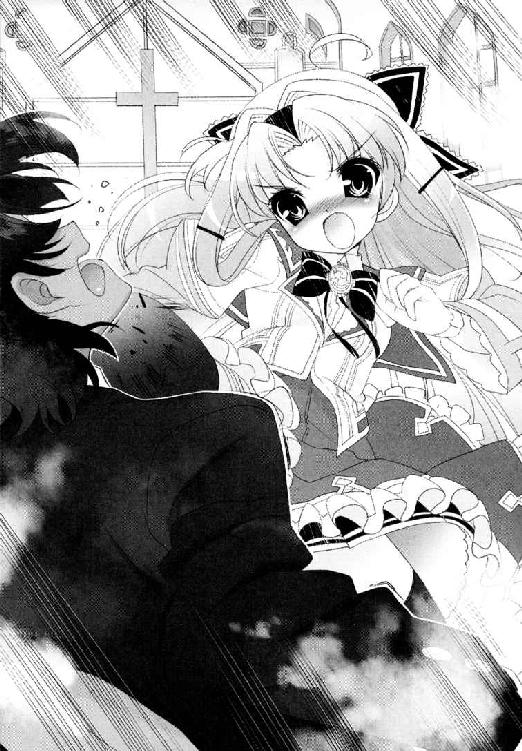
雪国ごと倒れた床の上で、めくれたスカートの中身を見てしまったらしい剣が、愕然とつぶやいている。
「..................男、か？」
「そうです。すいません。僕です。淡谷雪国です」
典子はもう笑い出すしかなかった。
だってそうだろう？
世界は等しく真っ白で、典子の行き先を妨げる垣根も理屈も常識も性別も、なにもかもぶち壊されてしまっていた。
「ねえ剣さん。愛されるってすばらしいですわ。でも今あたくしの中にあるときめきにはかないませんの！」
ここはひと続きの真っ白いキャンバス。そこに思い思いの絵を描く自由。それは垣根を海を越え世界の果てまで。きっとどこまでも広がっていく──。
走り出す典子たちを祝福するように、飛んできた聖書が剣にあたった。今度こそ彼は沈黙した。
＊＊＊
胡蝶の宮と弟は、そのまま走り出したようだった。
勝負のチャンスは、男女の入れ替わりがばれないはじめの一回だけ。そう雪国自身が言った言葉を、まさに実行した形になる。
まだ動けない剣を起こさないよう、舞姫は男装モードのまま、そっと絨毯の上を這い進み、聖壇の説教台へと移動した。そこには、罰当たりにも牧師の聖書をぶん投げたネズミその一が陣取っているのだ。
「大丈夫かね、兄貴」
「会長──」
声をかけてくる外見はひーほーネズミだが、口調や仕草で芝目だとわかる。舞姫はうなずこうとして、かるく顔をしかめた。剣にねじり上げられていた腕は、まだ少し痛くて、けれど気分自体はそう悪くなかった。
「大丈夫。ボクにも消火器貸してよ。ボクもやりたい」
「無理をするでない」
「やだよ」
おかもちをむりやり受け取って、えいと消火器のハンドルを握る。勢いよく噴射される消火剤をまき散らしながら、自然と笑いがこみあげてしまう。
芝目があきれた調子で言った。
「......楽しそうであるな、兄貴は」
「みんなむちゃくちゃなんだもん。おっかしーよ」
「計画を詰めたのは兄貴たちであろうが」
「でも会長が気づかなかったら無理だよ」
それは真実。
高天原りぼんの異変に、はじめから食い下がっていたのは彼だけだった。
だから雪国は結婚式をぶちこわそうと言いだし、一駿河蜜などを巻き込んでこの計画をたてることができたのである。
「ほんとよかった。ありがとね、会長」
舞姫は天井にも消火器を向ける。
普通に礼を言ったつもりだったが、彼はなぜかいきなり、頭のネズミを抜き取って投げ捨てた。
しかもそのまま感極まった顔で一歩踏み出し、間にあった距離を一気に乗り越え、舞姫の頭を抱えるようにしっかりと──。
「......か、勘違いするなよ。これはあくまで友情と感謝の印であってな」
「そ、そうなの？」
「そうともこれは友情だー！」
やけくそのように絶叫している。
「それにしては......なんか手つきがヘン......」
「まったく、かけらも、他意などないからな──！」
だからなんで十字架抱いてるのさ。
一瞬自分が抱きしめられるかと思ってしまったではないか。
どきどきしてしまった自分はバカだと思いつつ、斜めに傾いたクリスタルの十字架をせつなげに抱きしめている芝目は、不思議と舞姫の心をあたたかくしてくれたのである。
そのまま笑って、身を隠していた説教台を蹴飛ばす。近寄ろうとしていた警備員が、巻き込まれて後退する。
──ＧＯ！
舞姫は叫んだ。入ってきた礼拝堂を出るため、芝目を引き連れ走り出す。
手にはマシンガンのように消火器を持って。仲間たちとのパレードは、まだ続いているのである。
＊＊＊
教会の門を出てすぐの車道に、バス停があってバスが来ていた。
迷っている暇はなかった。雪国はカツラをおさえて叫んだ。
「乗りましょう胡蝶の宮！」
そのまま開いたばかりの後部ドアに、ほとんど先陣を押しのけるように乗り込んだ。
教会の中にいた時は、それほど大きく見えなかった胡蝶の宮のドレスが、薄暗いバスの車内では二倍三倍にもふくれあがって見える。こちらの後に続いていいものかどうか、小さなおばあさんがおっかなびっくりまごついたので、思いきって一緒にバスステップの上へと引き上げてまた叫ぶ。
「出してください！」
幸い、出発するまで追っ手はこなかった。
「危なかった......」
婦人は、紐つきの杖を手首にぶらさげ、目を白黒させている。
「このバス、どこ行きですか？」
「......県営団地前、だけどね......」
県営団地。
川の向こう側だ。
あまり離れすぎると、今度は帰ってこれなくなる。だから雪国たちは、周囲の景色が変わりすぎる前に、適当なバス停で降りた。
そこは人気のかけらもない、土手沿いの小さな停留所だった。
できれば空舟市内にとどまっていたかったが、ぎりぎりで市外に出てしまったらしい。隣の市を意味するシンボル看板を一瞥し、雪国たちは仕方なく、走ってきた橋をまた戻ることにした。
夏に人力リバーフェスタもやった人力川河川敷も、場所が違えば風景も変わる。
歩きながら鉄橋の向こうを見下ろすと、河川敷で野球の試合が何試合か行われているのが見えた。どうやら手前が社会人の草野球チームで、奥がリトルリーグのようだ。どちらものんびりと球を追っている。
雪国の横には、胡蝶の宮。
バス停からずっと彼女の手を引いているが、レースのベールを風になびかせ、ウエディングドレスの裾を引っかけないように持ち上げて歩くせいで、何度もよろめいて歩きづらそうだった。
「大丈夫ですか？」
「ええ、平気ですわ」
しかも同じ歩道を散歩中の犬が、白い塊のようになった彼女のドレスを、別の生き物のように見て吠えたてる。
「こ、こら......だめだって......！」
とっさに間に立ちふさがる。
胡蝶の宮は、欄干と雪国の間に守られて、吠え続けるトイプードルが去っていくのを、肩をふるわせながら見送っていた。
かみ殺しても吐息が漏れるほど、おかしくてたまらないようだった。
「......胡蝶の宮......」
「............だって、おかしくてたまらないんですもの。あたくし、こんな格好で市バスに乗ってしまいましたのよ。運転手におどろかれて、犬に吠えられて。蝶間林の娘ですのに！」
「後ろ乗りで良かったですよね......」
前乗りだったら、ヘタをすると乗車拒否にあっていたかもしれない。
「でも出てこれて良かったです......」
「雪国さんは、女装までしてくださって」
それが特別なことのように言ってくれることが、少しだけ胸に詰まった。
自分がこれから言わなければならないことは、きちんと彼女に伝わるだろうか。
「......あの、胡蝶の宮」
「なんですの？」
伝わって、良いものに変わってくれるだろうか。
雪国は、欄干にもたれて、なお笑っている彼女に向かって、言った。
どうか──。
「蝶間林、典子さん......僕は、あなたのことを尊敬してるんです」
ぎこちない声が、橋の上の川風に乗っていった。
「僕の目に見えるあなたは、とても誇り高くて、とても綺麗だ。とても綺麗で、努力家で、ちょっと抜けてて、あなたが誰かに取られるかもしれないって思ったら、僕はあわてました。理由を考えてみました。あなたを独占するかもしれない人間への嫉妬半分......もう半分は、あなたが変わってしまうことの怖さです」
雪国は、いぶかしげに顔をあげる典子に、できるだけ淡々と語り続ける。
「僕より前に、折れてほしくなかった。噓に心を曲げないでいてほしかった。なぜならそう願う僕自身が......とんでもない噓つきだから」
噓は、ばれる前に終わってしまったのかもしれないけれど。
それでも雪国は、いついかなる時でも誇りを捨てない、指針を一つに定めた彼女の生き方に励まされてきたのも確かだったのだ。
「僕は自分勝手です。あなたの想いに、今は応えられないのに、それでも僕は、この道の方にあなたが来てほしくなかったんです。全部壊してでも、戻ってほしかった。幸せになる方法は、心から笑える方法は、きっと他にも必ず、あるはずなんです......」
やっぱり、だめだ。こうして実際に口にしていく端から、思いは別の色を帯びていくような気がして、もどかしさに泣きたくなった。
雪国は、勝手に熱くゆるんでいく視界を、目を閉じることでやりすごして、それでもぜんぜん足りなくて──。
「......僕は、ただ、僕はっ」
「戻れと言われたところで、急には無理ですわ......」
「そうです。わかってます。でも」
「あたくしだって、状況によっておもねりもいたしますし変節もいたしますわ。そのことを嘆かれてしまっても困りますの。もう手遅れなことだってあるのですから」
「違います。あなたはちゃんと大丈夫で、笑えるように、大丈夫になるように、僕らみんなで──！」
「ほら、証拠をご覧になって！」
典子は言って身をひるがえした。
「こっ」
目を開けたその目の前で、白いウエディングドレスが宙を舞う。一瞬彼女が、川へ飛び込んだのかと思った。けれど状況はあまり変わらなかった。なにせ彼女は長いドレスの裾をひるがえし、ベールを風になびかせながら、橋の欄干にすっくと立ちあがっていたのである。
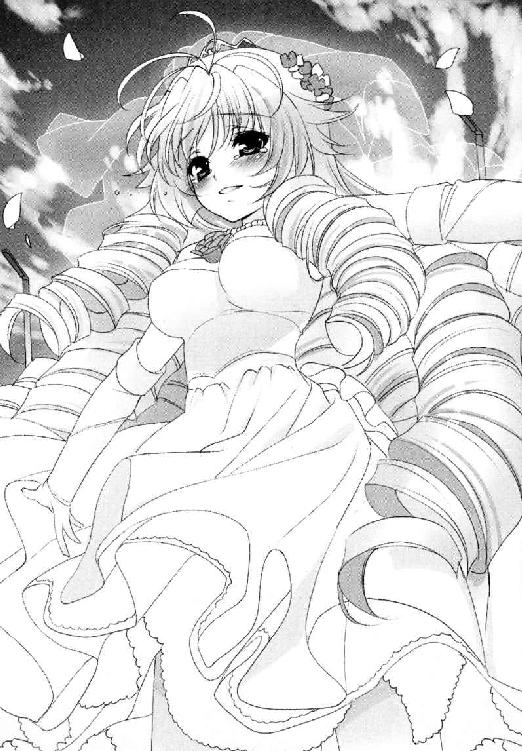
「──こっ、胡蝶の宮────────────────っ！」
「いい眺めですわ！」
「ですわっていうか、胡蝶の宮、危ないです！ 無理です。むちゃくちゃ危ないです！」
風は変わらず、強く右から左へと吹き抜ける。歩道の側へ落ちるならともかく、後ろは川だ。水面まで二十メートル以上あるかもしれない。
こんな格好で落ちたら、ただではすまない。そのまま沈んでしまうかも。
周りにいる通行人が、慌てる雪国を見てもなにも言わないのは、これを撮影かなにかとでも思っているのか。
それとも、幅十五センチにも満たない足場の上で、誇らしげに笑っている彼女が、あまりにまぶしく堂々としているからか。
「ご覧になれるかしら、雪国さん。いまあたくしの中では、芸術の欲求が燃えたぎって消せませんのよ。誰にだって消せませんわ。誰にだって！」
芸術がなんだって？
雪国があわてているのもかまわずに、彼女は履いているブライダルシューズの向きを変えてしまう。後ろ向け後ろ。高さ九センチの細いヒールが、方向転換の途中でぐらりと傾き、こちらの心臓を握りつぶしてすりつぶして、それでも視線は川へ。
ただまぶしく切れ長の瞳を細めているのだ。
「目の前に、キャンバスが見えますの。ほらあれ。地面に向かって平行に置かれた、真っ白い果てのないキャンバス──ああ、なんて大きいのでしょうね」
これが地平から見る風景というものなのかしら、なんて。
そんな風に、彼女は感じ入って呟いているけれど。
「もう誉められ続けるのも難しくなりますかしら。難しくなりますでしょうね。でもかわりに筆を入れることも許されますのよ。題材は自由。すべて自由。薔薇も、海も、船も、あたくしが愛するものすべて。あなたが好きというこの気持ちも！」
お願いだから落ちないでほしいと、横で肝を冷やす雪国をあざ笑うかのように。
「届かなくてもかまいませんわ。あたくしは、今のところこの絵筆を放しませんの！ 好きにふるって、このキャンバスがどこまであるのか見届けたくてたまりませんのよ！」
雪国は、欄干の手すりに身をのりだす。
「届かなくてもいいって......いいんですか胡蝶の宮は！」
「けっこうですわ！ なすがままですわ！」
手すりの上で、芸術が爆発したらしい胡蝶の宮が軽快に笑っている。派手に大口を開けて両手を広げ、でもそれは、たとえようもなく誇りに満ちあふれた彼女らしい彼女で。
「それじゃ......それじゃ、僕だってあきらめちゃ駄目になるじゃないですか......！」
「そうしたいとお心が叫ぶのならなさればよろしいでしょう。さあ雪国さん、見届けてくださる？」
巻き毛に留めていたベールを、無造作に外す。そうしてちょうど風向きが変わるのにあわせて、彼女は手を放した。
白いベールは、まるでヨットの帆のように風をはらんで、ゆっくりと眼下の水面へと落ちていった。水面に咲く、白い花びら。それもすべては、川の流れの一部に。
この川はやがて県境を越え、広い海へと続くだろう。
陸に打ち上げられた帆船は、ようやく船出をしたのかもしれなかった。
彼女自身の力で。もしかしたら、もっと目に見えない大きななにかの力で。
雪国と胡蝶の宮は、しばらく二人、欄干から消えていくベールをながめていた。
胸を震わせているこの感情は、たしかに間違いなく、彼女が引き起こしたものだった。
「──そうだわ、雪国さん。お願いがございますの」
それは、ベールを見送った橋を渡りきってからのことだった。
あまりに目の前を素通りされてしまうので、いっそ当たり屋の真似でもしようかと思いながら、やっとつかまえた一台きりのタクシー。
もちろん、優先的に胡蝶の宮に使ってもらうつもりだった。そのまま座席に乗り込もうとしていた彼女が、ふと振り返る。
雪国は、思わず身構えた。
「雪国さんがお好きな方って、芝目さんで──」
「全力で違います」
「そうですわね。なにかそんなような気もしてまいりましたわ」
なにかではなくそうなのである。
「でもね、あたくし、この回答がけっこう気に入っておりますのよ。信教の自由は保障されまして？」
「宗教なんですか......？」
しばらくそうして、見つめあうことになる。料金メーターをゼロにして待つ運転手が、そろそろ舌打ちをはじめそうな気配がした。それから数秒後、ふいに彼女の体が動いた。首元に腕を回され、キスをされるかと思えば、耳もとにドレスの花を差し込まれただけだった。
「お似合いですわ」
淡雪のような微笑。
雪国は、彼女を乗せて去っていく車に向かって一礼した。
＊＊＊
藤ノ原剣は、教会の階段に一人、呆然と腰掛けていた。
消火剤まみれになったフロックコートの上着は手すりに投げ出し、蹴り倒された顎の痛みを思う暇もなく、なにを考えていいかもわからない状態だった。
訳がわからないなりに参列者の誘導もしたし、その先のことも考えなければならないのに。汚れた礼拝堂の片付けをする関係者が行き来する中、彼だけが彫像の置物となってそこにいた。
「......僕には、わからない......」
つきつめればつきつめるほど、最後に覚えているのが、恋敵のスカートの中というのは理解しがたかった。
いったい何が起きた？ 何がいけなかった？
うめいて、肺の中の息を吐き出す。深く、長く、苦く──。
「......藤ノ原さま......」
剣は、ぼんやりと顔を上げた。
「きみは......高天原さん......？」
高天原りぼんだ。いつも三つ編みにしていた髪を、ゆるく巻いている。そのまま白いウエディングドレスめいたワンピースを着て、顔を赤くしながら近づいてくるのだ。
気弱そうな顔つきはいつも通りだが、その姿は、明らかに特定の少女をイメージしているのだろう。典子によく似た、典子よりもやや臆病な、典子よりもけなげな──剣の依頼者。
「どうしたの......こんなところに」
「あの、わ、わたくしが、胡蝶の宮さまの代わりになることはできませんか？ ずっとずっと噓を申し上げてきましたが、藤ノ原さまのことを、お慕いしているんです。はじめてお会いした時から──」
はじめて、会った時から？
「......すまない。よくわからないんだけど......君にはじめて会ったのは、相談を受けた時だったよね？ 好きな人を探してほしいって」
「その前です。夏に、蝶間林泰三さまの別荘にいらっしゃった時に、わたくしが偶然......」
喉の奥をつまらせる。
言葉を選んでいるようにも、記憶を思い出して震えているようにも見えた。
「......ですから、それ以来ずっと......藤ノ原さまのことだけを考えてまいりましたあ......」
そうして、高くか細い声で、必死に言葉をつむいでいく。その姿は愛らしくもあり。余計に剣の心を戸惑わせるのだ。
とりあえず考える前に立ち上がり、震えて審判を待とうとしている彼女のことを慰めようとした──その時だった。
「......まったく災難だったな、剣よ」
車椅子に乗せられた蝶間林泰三が、秘書をともなって、歩み寄ってきたのだ。
剣は一歩さがる。
彼もまた、この騒ぎに巻き込まれた被害者の一人だ。乱入者たちの狼藉で、かなりの消火剤を浴びたはず。髪や顔の汚れは取れても、まだ髪や膝掛けの先に、白い汚れとも埃ともつかないものが残っていた。
眼光は、とても病を得ていた人間とは思えないほど鋭い。
「花嫁に逃げられたか」
「......わかりません」
深く頭を下げたまま、そう言うのが精一杯。
「まあよかろう。あれもとことん蝶間林の娘ということだろうて......むしろそれぐらいの骨がないとつとまらなかろうよ......」
くつくつと笑いながら、秘書が押す車椅子で移動していく。
「お前たちもな、達者で暮らせ。そうしていればそれなりに似合いだそ。のう徳永」
「はい、会長」
「病室はもういらん。早々に引き払って社に戻る手配をしろ」
「はい。かしこまりました会長──！」
剣は、その後も長く顔を上げられなかった。
目の前の現実を、認めたくなかったのかもしれない。
深々とさげていた頭を戻し、隣を見れば、所在なさげに寄り添う高天原りぼんがいた。ふっくらとした頰を赤くし、眼鏡の縁をおさえながら、おずおずと訊ねてくる。
「......もしかしてわたくしたち、あの、公認になってしまったのでしょうかあ......」
ちょっと待ってほしかった。
「あ、あの、やっぱりお嫌ですか？」
「い、いや、そういうわけではなくて──」
ああ頼む。違うから泣かないでほしい。
剣は、近くを通りがかった少年に呼びかける。
「おいトーマ。トーマ。これはどういうことだと思う──？」
大切な家族であり友である少年は、灰色に染まった髪をかきあげ、お手上げとばかりに手を振った。
「もうなんでもいんじゃね？」
「おい！」
誰かのブーケについていたスミレの花が、一瞬の風にのって、二人の前へと飛んでくる。
力が抜けて、床へへたりこむ剣の側に、それでもりぼんは寄り添い続けた。
目を開ければ、スミレをいじる彼女の顔。変に和んでしまう自分が、少しだけ嫌だった。
＊＊＊
一駿河蜜は、典子の自宅で、典子の帰りを待ちわびていた。
結婚式妨害の一端を担った形の蜜は、蝶間林家では完全に異端だった。
誰もが腫れ物に触るような扱いの中、それでも、出ていけとは言われないのは、旧家のメンツか。それとも一駿河のネームバリューか。
精一杯の面の皮を使って応接間のソファに居座り、パーラーメイドにお茶のおかわりを頼み続けた。
理由は単純だった。
（──一駿河さん。できれば家にいてあげて）
（──胡蝶の宮を迎えてあげて）
言われたから。
作戦の前に、雪国から頼まれたのだ。自分たちが、本当の意味で蝶間林家を敵に回す意志はないのだというアピールになると。
なんだかずるいなと思ってしまった。連れ去った後の典子の説得は、きっと雪国自身がするのだろう。剣の裏をかくため、わざと舞姫の格好をした雪国は、思い出すたびに蜜の気を落ち着かなくさせるのだ。いったいどんな言葉で彼女に話すのだろう。もしかしたら、恋にまつわる告白になるのか。
気になって、気になってしまう自分が少し怖い。
いずれにせよ、ここにいさえすれば、結果は向こうからやってくるのだ──。
ついに彼女が帰ったという一報が来たとき、蜜は真っ先に部屋を出て車寄せへ飛び出した。
「お姉様！」
ちょうどタクシーから降りたばかりの典子を見つける。蜜は意識する前から泣きそうになっていた。たぶん、理由はうれしさと安堵。
「蜜──」
彼女は出ていった時と同じウエディングドレス姿で、頭のベールとアクセサリーのいくつかをそぎ落とした格好をしていた。
一人でぐるぐると怯えていた悩み事など、そんな彼女の存在の前には吹き飛んでいた。半ば抱きつく格好で、無事を確かめる。ああ大丈夫。ちゃんと帰ってきてくれた──。
「お姉様。ごめんなさい。ご無事で良かったです」
「もういいから。あなたもケガはないのね」
「はい。はい。大丈夫で──」
勢いこんで顔を上げ、そして言葉をなくした。
彼女の目は、かすかに腫れて赤かった。まるでそう、一時だけでも泣いていたように──。
「お姉様......弟さんと、ご一緒されてたんじゃ......」
「ええ。気分よく失恋して参りましたわ」
さばさばとした調子で歩き出すので信じられなかった。
「ま、待ってください。そんなの──何かの間違いで──」
「間違いもなにもございませんわ。もちろんあきらめる気もございませんけど」
うろたえる蜜に、彼女は屋敷へ入る手前で一瞬だけ立ち止まって、言った。
「よろしくて、蜜。恋愛に上下関係はなくてよ」
「な......」
「まして、今のあたくしに遠慮は無用。欲しいと思うのなら、冗談などでごまかさずに本気で取りにいらっしゃい。わかって？」
はいお姉様、なんて。誰が言えただろう。
まるで、蜜が『先輩』と『弟さん』の間で揺れていたことを見透かすように。
無遠慮とも言える情熱的なまなざしは、以前の彼女にはないもののように思えた。サバンナを駆ける猫科の生き物のように美しかった。
何が彼女を変えたのだろう。
どうしてこんなことになったのだろう。
保健室で指輪をくれた、『お姉様』。
理科室で蜜のことを助けてくれた、『先輩』。
劇の稽古の、『弟さん』。
そして女装して『先輩』そっくりの『弟さん』。
いくつもの出会いと、それを彩る光景が、透かしたプレパラートのように重なりあい、呆然とする蜜の目の前にあふれかえる。その中の一枚──幻のはずの典子が、くすりと微笑み歩き出した。
そこから数秒たって、蜜はようやく我にかえった気がした。
「お姉様。誤解です。蜜が──好きなのは──」
好きなのは？
＊＊＊
一歩ずつ、靴底でアスファルトの感触を確かめ、刻みつけるように歩いていく。
彼女が残してくれた言葉をかみしめながら。
雪国の前で少しずつ傾斜していく歩道は、こちらの思いの再確認を強いているような気がした。
そうして人力ニュータウンの坂を、ゆっくり登っていく途中で、舞姫たちが手を振っているのが見えた。
「おーい。ユキグニー！」
着ぐるみも汚れた服もなく、清潔な私服に着替えていて、彼らが捕まったのか、逃げおおせた後なのか、とっさには判断がつかなかった。けれど、ケガらしいケガはないようだ。
向こうも雪国に向かって駆け寄り、雪国もまた足を速める。
「舞ちゃん──大丈夫だったの」
「や。説教もろもろの前にその格好なんとかしてくれって言われて。ね？」
そうだそうだと、ＳＥＣもうなずいている。
さすがに途中で、豆坂が警備員に回り込まれ、そのままずるずると身柄をおさえられてしまったらしい。警察に引き渡されるのも覚悟したらしいが、外聞を気にしたらしい蝶間林家の方針なのか、それもなかったのだそうだ。
シンプルな報告に、とりあえず胸をおろす。
「ユキグニは？ 大丈夫だった？」
「そうだね......うん。いろいろ実りが多かったっていうか」
言葉をつなぐふりをしながら、実際のところ雪国は、自分が何を言うかなど考えていなかったのだ。
だから、かなり不自然で長い『間』になってしまっただろう。
「？ ユキグニ？ どーかした？」
「ぅよっしゃら──────────────────────────っ！」
口からほとばしったのは、日本語ともつかない絶叫である。
唐突に叫んだ弟に、舞姫たちは今度こそ目を丸くして固まるのだ。
けれど、叫んで二本の足で大地を踏みしめて、えいと晴れた空を見上げれば、自分の気持ちが見えるような気がしたのだ。
──あきらめない。心がそうしたいと叫ぶなら。
そうなんでしょうね、胡蝶の宮。
今でも心は、鼓動を刻み続けているだろうか。彼女への想い。情熱。その他のすべて。
雪国は、自分の中のリズムを見極めるように、必死に目をこらし続けた。
＊＊＊
門柱のポストに入っていたのは、公共料金の明細が二通と、夕刊と、そして私的な手紙が一通だった。
日常のこまごまとした家事は、すべて一駿河の家政婦である彼女に任されている。彼女はポストの中に入っていたそれをすべて取り出し、夕刊と明細とは別にして、残った手紙の宛名と、差出人の名を確かめた。
古葉鳥子──。
蜜あての手紙である。
筆致は今時の少女にしては達者なもので、しかしカラフルな絵入りの封筒の使用は、洗練されているとは言い難い。いかにも、仲の良い友人に向けて送っているという気安さがある。
どうやら青美女学院ではなく、校外活動で知り合った公立中学の生徒らしいことも知っていた。蜜は最近、この古葉という少女と連絡を取り始めているようだ。
よくわからない人ばかりとつきあわないでほしいというのが、彼女の本音でもあった。だが、最近の蜜は、おとなしく言うことを聞くたまではない。以前にも増して情緒不安定で、反抗的で、小食も直らず、この少女のことなどましな部類だ。
「──いけない。忘れていたわ」
ぼやいている暇はない。彼女はつぶやき、サンダルのままきびすを返す。
母屋の居間に、大事な人を待たせたままだった。
ぱたぱたと、ほとんど小走りに靴脱ぎを上がり、廊下を進んで顔を出す。
「奥様！ お待たせして申し訳ございません。コーヒーでよろしゅうございましたわよね」
「......もう、いいわ。それより早く話をさせてちょうだい」
一駿河佐和子は、居間のソファでいささかうんざりした顔をしていた。
成田空港からここまで直行してきて、まだ旅支度も解いていない。海と大陸を越えた長旅の疲労を隠すように、口紅の色はやや濃いが、顔立ちそのものは少女のようだ。ゆったりとした白い上下のツーピースと、上品なシャンパンカラーのスカーフを身につけて、人形の完成品のようにたたずんでいる。
蜜が生まれる前、彼女は若い佐和子こそを『お嬢様』と呼んでいたのだ。
「それで清野、確かなのね？ あの子の周りに妙な人間がうろついているっていうのは」
「はい奥様。わたくしきちんと確かめましたとも」
彼女は深々とうなずく。
今年の春先から、徐々にその存在を匂わせてはいたのだ。「先輩が先輩で先輩が」と、蜜は彼女が知らない人間の名をあげるようになった。実際にその姿を間近で見たのは、夏休みに入る前だ。蜜は遊園地に行くと言って、その『先輩』をともないずぶ濡れで戻ってきた。
彼女は家政婦として、濡れた二人の世話をしながら、さりげなく観察を続け、そして目撃したのだ。
風呂場の脱衣籠に投げ出されていた、女物のカツラ。洗い場で見たその体は、たしかに少年のものだった。
二人の交流は、今も続いている。
この現状を生み出した張本人。その名も──。
「名前は淡谷舞姫。中身は──男です」
あとがき
新異装戦士ＳＨ＠ＰＰＬＥ ──第24話 『銀河の果て、最悪の再会 』──
今までのあらすじ
親友、芝目の負傷を受け、ひとりガンダム・ホルスタインに乗り込んだ淡谷雪国。
周囲の制止も聞かず、宇宙空間の戦場へと飛び出した彼は、亜空間自我交換システムＳＨ＠ＰＰＬＥを発動させ、無数の敵機とともにその姿を消した。
あれから一年──誰もが雪国の生存を絶望視する中、一人だけ希望を捨てない少女がいた。オメガ01の歌姫、一駿河蜜だ。
彼女は停戦一周年記念コンサートのため地球に降り立つが──？
＊＊＊
──本日は当エアラインをご利用いただきありがとうございました。これより機体は、ターミナルとの接続作業を開始いたします。お客様はベルトを着用したまま、いましばらくお待ちください──。
フライトアテンダントの案内放送を聞きながら、一駿河蜜は窓の景色をながめていた。
強化ガラス一枚を隔てた向こうに、青い海原が輝いて見える。
軌道上で大気圏突入用のシャトルに乗り替え、一時間。この滑走路自体が、洋上に張り出すように建設されているのだそうだ。どの宙港基地や衛星都市でも見ることのできない、地球にだけ許される特別な景色だった。
母なる大地──物心つく頃から、地表を離れた世界を転々としていた蜜には、ぴんと来ない言葉ではある。
「さあ。お嬢様、参りましょうか」
気づけば、ベルト着用のサインが消えていたらしい。うつらうつらとまどろみかけていた蜜を、付添人の清野が揺り起こす。
「お会いしなければならない方がたくさんいらっしゃいますよ」
「わかっているわ......」
「一介の士官候補生の気分はお捨てください。今のあなたは停戦の希望の星なのです」
──そんなことはわかっている。
禁断のＳＨ＠ＰＰＬＥ発動により、もたらされたつかのまの平和。たった一人の少年の禁忌と犠牲を引き替えに、蜜はここにいるのだ。
（でも、蜜ぐらいは、信じたっていいでしょう？）
誰もが彼を死んだと言うけれど、信じたくはなかった。
きっと──必ず──どこかで生きているはずだと──。
蜜はうるむ目をこすり、立ち上がった。
今は何時だろう。
貸し切りのＶＩＰシートには、蜜と彼女の二人しかいない。空間全体が眠るように薄暗いシートの間を縫い、アテンダントたちが整列する出口へと向かう。
「それで、これからの予定は？ 雑誌の取材？ スタジオ入りが先？」
「いいえ──まずは、特使にお会いしていただきましょう」
「特使？」
蜜は、もつれた髪の毛先を払い、目をしばたたかせる。
清野は言った。
「今回のコンサートのスポンサーをご存じですね？ 連邦系列のコンツェルン──」
「蝶間林財閥──」
「ええ。会長の特使として、蝶間林典子様がお迎えにあがっているそうです」
それはまた。すこぶる豪勢な待遇に、蜜は内心舌をまいた。
「怖いですか？」
「まさか」
あらためて、自分の唇の端を引き上げる。いま自分は、とても挑戦的な顔をしているだろう。
横で船のハッチが開いていく。
向こうが現代社交界の薔薇とうたわれ、地上最強の財閥の特使なら、こちらは最前線をくぐり抜けたオメガ01の生き残りだ──。
「ようこそ、人類の故郷へ！」
ハッチが開ききった瞬間、張りのある声が響いた。
一瞬、花園に飛び込んだような錯覚を覚えた。
それほどまでに、蜜を出迎える少女の周りは色が変わって見えたのだ。
背を覆う、豊かな長い巻き毛。造作は淡い化粧でも引き立つほど深く整っていた。鮮やかな薔薇色のドレスを着こなす胸元は大きく膨らみ、聞いていた年よりも大人びて見える。
「歓迎しますわ。一駿河蜜さん！」
「蝶間林......典子さま？ 胡蝶の宮とお呼びすれば？」
ちまたで聞く呼称を口にすると、彼女は笑った。どちらでもいいと。
「オメガ01での停戦コンサートには感動いたしましたわ。中継を見て、実際にお会いできる日を楽しみにしておりましたの」
「光栄ですわ」
「今度のコンサートもぜひ成功させましょうね。あたくしども蝶間林が、全面的にバックアップいたしますわ」
きらきら、耳元のイヤリングが揺れて光る。周りに倍以上年の離れた大人を従え、決して埋もれない。内からもまばゆい光がこぼれるような語り口を聞きながら、蜜は握手をかわした。存在そのものが夢物語のような少女に見えた。
「お食事は機内で？ よろしければあたくしの別宅へお招きしたいの。よろしくて？」
「えっと......」
「ノリコ」
ふいに、割り込む声があった。
「帰ろう。ねえ、ノリコ。はやく」
「そういうことを言わないものよ、ユキグニ」
「でも」
「お客様の前なんですから」
小柄な少年だった。ひどくやせた体を白いシャツが覆っている。彼は自分のズボンを握りしめ、小さな子供のようにぐずっていた。典子がやわらかくたしなめ、軽く抱擁すると、ようやく納得したようにゲートの先へと身をひるがえす。
蜜は啞然としてしまった。
「おどろきまして？ 綺麗な子でしょう？ 一年前から記憶がないみたいなの。かわいそうだからあたくしが拾ってさしあげたの。ネコみたいなものよ」
少年が、ほんの一瞬だけ振り返り、立ちつくす蜜たちのことを視界に入れた。今まさに、閉まろうとするエレベーターの中。
蜜は、はじかれたように走りだす。
「一駿河さん!?」
「待って。弟さん!?」
だが、ドアは間に合わずに閉まってしまった。蜜は勢いを殺しきれず、閉まったエレベーターめがけて体あたりをしてしまう。お嬢様と清野が悲鳴をあげた。稀代の歌姫が台無しな醜態だ。
けれど、知らないものを見るように、こちらを見つめていた少年の瞳を思い返すと、体温が上がった。ああ、なんて冴え冴えとした冷たいまなざしだったろう！ まるで別人のようだった。でも──間違いはない。
一度はその手をつかんだのだ。触れあって、そして──一年が過ぎて──。
「いきて......たの......」
血の気が、引いた。半比例して、心臓だけが早鐘を打つ。
（弟さん──）
彼だ。彼だ。彼が生きていた──！
＊＊＊
雪国のことをあきらめない蜜。動きはじめた彼女の前に現れる謎の組織ＳＥＣ。そして、最愛の恋人を奪われる予感におびえる典子が取った手段とは!?
次回、新異装戦士ＳＨ＠ＰＰＬＥ、第25話『奪われた記憶』
──もし生まれ変わったら、女装してでも君に会いに行くよ！
という感じでこんにちは。竹岡です。６巻です。
あとがき10ページいけますとか言われたら、もうサンタさんのお願いを前倒しにするしかないでしょうということで。５巻の口絵で書き逃げ──じゃなくて初登場した新異装戦士ＳＨ＠ＰＰＬＥの再現にチャレンジしてみました。コツは限界までどシリアス。
......たぶんこのあと弟くんは、思い出したくない記憶を取り戻しちゃったり、某・蝶間林さん似の彼女とすったもんだしながら宇宙の戦場へ戻っていくのでしょう。
オメガ01、早く平和になるといいですね。
しかし６巻ですか。だんだんご新規さまには厳しい巻数になりつつあってびびっております。ちょっと多いかなあと思う方は、６という字をひっくり返せばまた違った味わいに......だめだ三冊増えちゃうよ！ 戻して戻して！ ６よ６！
今回は表紙から口絵から本文まで、蝶間林さんシフトとなりました。巻き毛がくるくるでお届けです。
彼女を書くのはかなりおもしろいです。私の脳内では「フラグの立て方を３センチ間違えた人」と呼んでおります。はじめは一巻かぎりの脇役のつもりでした。今ではＳＨ＠ＰＰＬＥに欠かすことのできない大事な女の子です。できるだけ美しく、かつそれを支える心持ちを書いてあげられたらなと思っているのですが。
お嬢様中のお嬢様である彼女の悩みと喜びと。ずれた３センチをめぐる攻防、少しでも伝わっておりますと幸いです。
さてさて。そんな感じのこのＳＨ＠ＰＰＬＥですが──。
漫画化＆ドラマＣＤ化決定でございます！
......うそおとか言わないでください。どうもほんとらしいので。
漫画は角川書店のコンプエース９月号より連載開始。ういらあくる様によるラブリーなニセ舞姫たちが目印です。
小説と漫画ですと、いろいろと見せ方や伝え方が違ってくるじゃないですか。小説では伝えにくかったＳＨ＠ＰＰＬＥのあんな部分やこんな部分を、ぜひぜひ漫画の中でお願いしますと語ってきたところです。私自身も楽しみなのです。
そしてドラマＣＤ化。
お話を担当さんに聞いた時、「ほんとにやるんですか!?」とぶったまげたのは本当です。
『声も見た目もほとんど一緒の双子』を、どうやったらボイスドラマにできるのか。雪国と舞姫を演じてくださる井上麻里奈様の一人二役に大期待です。
ヒロインの蜜は、釘宮理恵様にあてていただけることになりました。サンプルボイス聴きながらテンションあげています。マリン・エンタテインメントから八月発売予定です。
でもあれですね。つたないなりに細々続けていると、こういうサプライズもあるものですね。もう家のモルモットに手を嚙まれても泣きません。
......いやね。なんでか私だけ嚙むんですよ......家族には良い子なのに......私に対してだけキシャーと野性の牙をむき出しに......お中元のハムに楊枝が四本刺さってるみたいなボディなのに......めっさ速いんですよモルモットって......。
次回はたぶん秋です。
そろそろ逃げ場がなくなってきた（？）７巻でお会いしましょう。ではでは！
竹岡葉月
ＳＨ＠ＰＰＬＥ
─しゃっぷる─
竹岡葉月

平成21年6月25日 発行
発行者 山下直久
発行所 株式会社富士見書房
〒102-8144 東京都千代田区富士見1-12-14
http://www.fujimishobo.co.jp/
(C)2009 Hazuki Takeoka, Youta/Fujimishobo